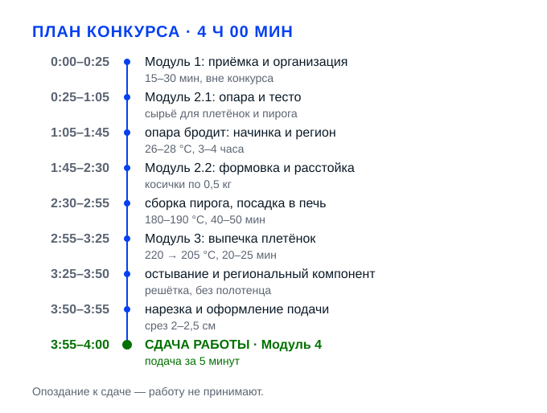
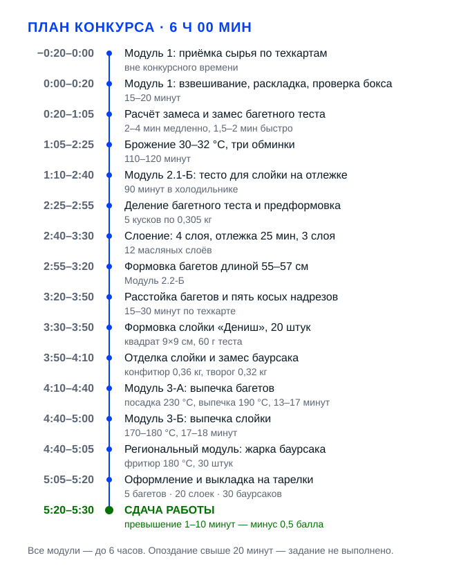
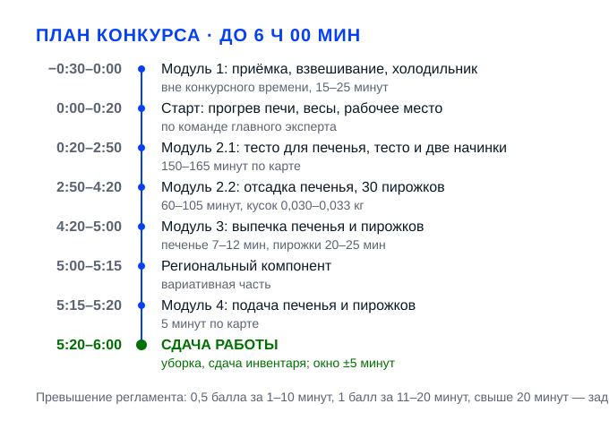

Выпечка хлебобулочных изделий (Р)
Задания ниже — официальные файлы «Абилимпикс» (источник: abilympics-russia.ru), разложенные по категориям. Решения написаны по тексту задания, регламенту и критериям оценки; в них указано, что именно проверяет эксперт.
Школьник
14–16 лет, базовый уровень заданияВыдержка из официального конкурсного задания: страницы, относящиеся к категории «Школьник» (стр. 5–6 источника).
Пошаговое решение
У школьников на эту компетенцию до четырёх часов и пять модулей подряд: организация площадки, подготовка сырья и опары, формовка с расстойкой, выпечка и подача. Сдать нужно две плетёнки по 0,5 кг из опарного дрожжевого теста, один заливной пирог и региональный компонент. Главная сложность не в рецептуре, а в том, что опара бродит три-четыре часа и не подчиняется расписанию: если поставить её поздно или держать в холоде, дальше начнётся спешка, в которой тесто недобродит. Поэтому весь конкурс держится на трёх вещах — температура воды и помещения, контроль готовности опары по четырём признакам и точная посадка в печь. Дальше решают детали: ровная косичка из трёх жгутов по 165 г, расстойка до «ямочки», которая восстанавливается наполовину, и корка, которая не рвётся по шву.

Задача 1. Развернуть площадку и принять сырьёМодуль 1 · 15–30 минут до старта
Первый модуль идёт вне конкурсного времени, но именно он определяет, чем вы будете работать следующие четыре часа. За пятнадцать–тридцать минут нужно получить со склада продукты по технологическим картам, взвесить их, разложить в холодильнике с учётом товарного соседства и собрать рабочее место так, чтобы мука, весы и дежа оказались в одной зоне, а не в трёх углах бокса. Здесь же снимаются риски: тёплое молоко, просроченные дрожжи или грязная дежа обнулят любую технику замеса, которую вы покажете дальше. Модуль оценивают не по скорости, а по тому, всё ли на месте и понимает ли участник, что с этим делать.
Действие 1.1. Войти в бокс и подготовить себя к работе
Шаг 1.1.1
Надеваем полный комплект: куртку или фартук с нагрудником, головной убор, закрытую обувь на нескользящей подошве. Колпак или косынку сажаем так, чтобы волосы были убраны полностью — и спереди, и на затылке, потому что именно затылок чаще всего остаётся открытым. Рукава подворачиваем выше локтя: длинный рукав касается муки, цепляется за ручку дежи и тянет руку в тесто в самый неподходящий момент. Фартук завязываем на уровне талии, чтобы полотнище закрывало грудь и колени, но не свисало в миску. Тесёмки завязываем сзади, без длинных концов у колен: за них цепляется край миски.
Спецодежда и личная гигиена — отдельный пункт оценки, и снимают его с первых минут, а не после выпечки. Мука и тесто — продукт, который едят без термической обработки после формовки, поэтому волос, ворс или след от украшения в мякише воспринимаются как грубое санитарное нарушение. Кроме того, аккуратно надетый фартук задаёт рабочий тон: видно, что участник понимает, где он находится, и эксперту проще поверить в осмысленность дальнейших действий.
Проверьте себя по трём признакам: волос не видно ни спереди, ни сзади; куртка застёгнута и не топорщится на плечах; обувь закрытая и сухая. Руки вымыты до запястий, ногти короткие, без лака. Попросите волонтёра посмотреть со спины — самому эту зону не увидеть, а именно там чаще всего и выбиваются волосы. Колпак сидит плотно, тесёмки завязаны сзади.
Типичная ошибка — надеть колпак «на макушку» и оставить затылок открытым: спереди картинка идеальная, а при наклоне над дежей волосы попадают в тесто. Вторая — прийти в открытой обуви или в футболке, рассчитывая надеть куртку потом: время уходит из модуля 2.1, а пункт по спецодежде уже потерян, потому что фиксируется он на входе.
Эксперт осматривает участника до сигнала старта, отмечая чистоту и полноту комплекта, и возвращается к этому взглядом ещё несколько раз по ходу работы: мука на груди к третьему часу — тоже нарушение.
Шаг 1.1.2
Снимаем часы, кольца, браслеты, длинные серьги; волосы, если они длинные, дополнительно закалываем под колпак. Моем руки с мылом не меньше двадцати секунд, до запястий, не забывая большие пальцы и промежутки между пальцами, вытираем одноразовым полотенцем и сразу выбрасываем его. Отдельно протираем столешницу и весы салфеткой с моющим средством: на весах остаётся мука от предыдущего участника, и она попадёт в вашу навеску.
Под украшениями остаются загрязнения, которые обычным мытьём не снимаются, а камень из кольца или звено браслета физически могут оказаться в тесте — для изделия, которое потом дегустируют, это не мелочь. Чистая столешница и весы важны и технологически: слой старой муки на чаше весов добавляет к навеске несколько граммов, а в рецептуре опарного теста дрожжи считаются с точностью до грамма.
Руки сухие, полотенце использованное и выброшено, а не лежит на столе. На чаше весов нет муки и крошек, столешница не липнет. Проверить просто: проведите по столу ладонью — на ней не должно остаться ни муки, ни крупинок засохшего теста.
Самое частое — протереть руки о фартук: визуально они сухие, но фартук становится переносчиком, и это видно эксперту. Второе — не очистить весы и получить навеску на три-четыре грамма больше: для соли это уже ощутимо, а для дрожжей в опаре — разница в скорости брожения.
Гигиену эксперт проверяет на входе и дальше смотрит по ходу: меняются ли салфетки, вымыт ли стол после работы с начинкой, не вытирает ли участник руки о полотенце для посуды.
Шаг 1.1.3
Обходим бокс и проверяем оборудование по списку: печь включается и держит заданную температуру, расстоечный шкаф выходит на влажность, дежа и насадки чистые и сухие, весы показывают ноль при пустой чаше, термощуп работает. Проверяем наличие противней, пергамента, скребка, венчика, сита, мисок под опару и под начинку. Всё, что не работает, отмечаем и сразу говорим технику или главному эксперту — до старта это решается за минуту, после старта превращается в потерю времени.
Опарное тесто прощает многие ошибки, кроме одной — потери времени: опара бродит три-четыре часа, и если печь не вышла на режим к моменту расстойки, заготовки перестаиваются и оседают. Проверка оборудования занимает пять минут и входит в организационный блок оценки, где смотрят именно на готовность площадки, а не на героические импровизации по ходу.
Печь показывает заданную температуру и не «гуляет» на тридцать градусов вверх-вниз; термощуп при комнатной температуре даёт 22–26 °C; весы возвращаются на ноль после снятия груза. На столе лежит всё, что нужно для замеса, и ничего лишнего, что мешало бы ставить миску.
Классика — обнаружить, что расстоечный шкаф не держит влажность, уже с готовой косичкой в руках: заготовка сохнет, корка покрывается плотной плёнкой и при выпечке рвётся в случайном месте. Вторая ошибка — начать замес на непрогретой печи и потом догонять температурой, поднимая её выше 230 °C.
Эксперт проходит по боксу до старта и отмечает, проверено ли оборудование или участник просто разложил инвентарь; отдельно смотрит, обратился ли участник с неисправностью сразу.
Действие 1.2. Принять и взвесить сырьё по технологическим картам
Шаг 1.2.1
Берём на складе корзину и идём по перечню технологических карт: мука пшеничная высшего сорта, дрожжи прессованные, соль, сахар, масло сливочное, молоко или вода, яйца, сырьё для начинки заливного пирога и для регионального компонента. Каждую позицию отмечаем карандашом в списке — так видно, что уже получено, а что ещё нет. Сразу проверяем целостность упаковки и срок годности на маркировке, не отходя от склада.
Приёмка — единственный момент, когда недостающее ещё можно получить: после старта замена идёт только через главного эксперта и только если причина признана уважительной. На приёмку по заданию отводится 15–30 минут вне конкурсного времени, и тратить их на готовку нельзя и не нужно: пятнадцати минут хватает, чтобы спокойно пройти по списку, но не хватает, чтобы сначала начать, а потом спохватиться.
Все строки списка отмечены, корзина собрана, расхождения записаны: чего нет, сколько нет, в каком виде. Количество позиций совпадает с перечнем технологических карт — две плетёнки по 0,5 кг и один заливной пирог требуют именно того набора, который в карте, без «примерно».
Начать замес, не сверив список: нехватка дрожжей или масла обнаруживается в середине работы, когда менять план уже поздно. Вторая ошибка — увидеть, что продукта меньше, и промолчать «обойдусь»: обойдётесь, но недозамес и недоброд проявятся на разрезе.
Организационные навыки эксперт оценивает по тому, работал ли участник по списку: наличие перечня на столе и отметки в нём видны сразу. Отдельно эксперт отмечает, записаны ли расхождения на бумаге: через два часа пересказ «чего-то не хватало» уже никто не проверит.
Шаг 1.2.2
Взвешиваем всё, что пойдёт в опару и в тесто: муку на весах с точностью до грамма, дрожжи — до 0,5 г, соль и сахар — до грамма. Взвешенное раскладываем по отдельным ёмкостям и подписываем маркером: «мука опара 420», «дрожжи 14», «соль 18». Отдельно взвешиваем сырьё для начинки и для регионального компонента, чтобы потом не искать его по всему боксу. Фактический вес записываем в карту рядом с рецептурным.
В опарном тесте дрожжи и соль — антагонисты: соль тормозит брожение, и ошибка в пару граммов растягивает подъём опары на полчаса, которых в четырёхчасовом конкурсе нет. Раздельная навеска нужна ещё и потому, что при замесе опары вы не должны думать, где соль: она вносится позже, в тесто, и не должна попасть в опару даже случайно.
На весах ноль перед каждой навеской, ёмкости подписаны, сумма весов совпадает с рецептурой. Проверьте контрольную точку: если по карте муки 1000 г, то навеска опары и остаток на тесто вместе дают ровно 1000 г — пересчитайте на калькуляторе телефона, это быстрее, чем перевешивать.
Сыпать «на глаз» и досыпать в процессе: в опаре это даёт то самое непредсказуемое брожение, когда тесто вроде поднялось, но на разрезе плотное. Вторая ошибка — ссыпать соль и дрожжи в одну миску «потом разберу»: часть дрожжей погибнет от прямого контакта с солью.
Эксперт подходит к весам в первые минуты и смотрит на подписанные ёмкости: это самый быстрый внешний признак того, что участник умеет работать по рецептуре.
Шаг 1.2.3
Проверяем качество каждой позиции. Прессованные дрожжи: цвет серо-кремовый или светло-бежевый, без тёмных пятен, консистенция плотная, крошится, а не мажется, запах чистый дрожжевой без кислоты. Мука: сухая, без комков и запаха плесени, сжатая в кулаке рассыпается. Масло сливочное холодное, без прогорклого запаха; яйца целые; молоко не пригорелое и не хлопьями.
Из плохих дрожжей не поднимется никакое тесто: их активность падает от неправильного хранения, и внешне брикет может выглядеть нормально, а подъём затянется вдвое. Мука с повышенной влажностью тянет воду иначе, и тесто получается «плывущим» — косичка расползается уже на расстойке. Проверка занимает две минуты и закрывает сразу три критерия: санитарию, качество сырья и организацию.
Разломите брикет дрожжей: срез ровный, светлый, без тёмной каймы. Сожмите горсть муки в кулаке: комок рассыпался — влажность в норме, остался плотным — мука сырая. Понюхайте масло: прогорклый запах чувствуется сразу, его ничем не перебить.
Взять дрожжи с тёмной коркой и решить, что «в тесте разойдётся»: опара простоит четыре часа и не поднимется, а времени на вторую не останется. Вторая ошибка — не заметить подмокшую муку: она уже набрала влагу, и рассчитанное количество воды сделает тесто липким.
Проверка качества сырья — отдельная строка в листе оценки; эксперт может попросить показать брикет дрожжей и спросить, по каким признакам участник определил их свежесть.
Действие 1.3. Разложить продукты и собрать рабочее место
Шаг 1.3.1
Раскладываем продукты с учётом товарного соседства: молоко, масло, яйца и начинку — в холодильник, на среднюю полку, отдельно от сырого мяса и рыбы, если они есть у соседей по боксу; муку, соль, сахар и дрожжи — в сухую зону на стеллаже, подальше от мойки. Дрожжи держим в закрытой ёмкости, масло — в маслёнке под крышкой, яйца — в лотке, а не навалом. Всё скоропортящееся подписываем датой приёмки.
Товарное соседство — прямо прописанное требование модуля 1, и проверяют его буквально: смотрят, лежит ли начинка рядом с сырым продуктом и не стоит ли мука под трубами мойки. Практическая сторона не менее важна: дрожжи на тёплой плите теряют активность за час, а масло, размягчённое слишком рано, при внесении в тесто даёт «плывущий» мякиш.
Откройте холодильник и посмотрите сверху: начинка и молочное — на отдельной полке, сырого рядом нет, упаковки закрыты, ничего не подтекает. На стеллаже мука стоит в сухом месте, дрожжи закрыты, рядом нет источника тепла.
Поставить дрожжи на разделочный стол у печи «чтобы были под рукой»: к моменту замеса опары брикет размягчился и частично потерял силу, подъём затянулся. Вторая — сложить всё в одну корзину и потом искать соль в муке.
Эксперт открывает холодильник именно в модуле 1 и фиксирует расположение продуктов; позже он смотрит, поддерживается ли порядок. Возвращается он к холодильнику и тогда, когда вы берёте масло: открытая упаковка и размягчённый брикет считаются так же, как нарушение соседства.
Шаг 1.3.2
Собираем рабочее место по зонам. Слева — приёмка и взвешивание: весы, лопатка, ёмкости. В центре — замес: дежа или широкая миска, скребок, влажное полотенце. Справа — разделка: подпылённая мукой доска, нож для теста, весы для деления кусков. Отдельно — зона формовки с противнем и пергаментом, отдельно — зона подачи. Мусорное ведро ставим так, чтобы до него не надо было идти через рабочую зону.
Мука летит по всей поверхности, и если весы стоят рядом с доской для формовки, чаша постоянно в муке, а навеска — «плюс-минус пять граммов». Зонирование экономит шаги: за четыре часа конкурса лишние перемещения по боксу складываются в десять-пятнадцать минут, которых потом не хватает на расстойку.
Пройдите маршрут «весы — замес — разделка — противень»: он должен получаться без разворотов на 180 градусов и без перешагивания через корзины. На столе свободно место, чтобы поставить миску с опарой и накрыть её полотенцем.
Сложить всё в одну кучу у края стола: миска с опарой стоит на весу, при первом же движении опрокидывается. Вторая ошибка — поставить противень на дальний стол, а потом бегать с расстоянной косичкой через весь бокс, встряхивая её по дороге.
Организация рабочего места оценивается визуально в первые минуты: эксперт отмечает, есть ли зоны и свободна ли поверхность для замеса. К середине конкурса эксперт видит, поддерживается ли зонирование: миска с опарой, весы и доска на своих местах или всё смешалось в один угол.
Шаг 1.3.3
Пишем на листе план по времени: во сколько ставится опара, во сколько замес теста, когда начинается формовка, когда расстойка и когда посадка в печь. Рядом записываем цепочку «опара — тесто — формовка — расстойка — выпечка — подача» с часами. Лист крепим на край стола скотчем, чтобы не искать. Отдельно отмечаем время старта по часам бокса, а не по телефону.
Опарный способ — это последовательность с жёсткими окнами: опара готова через три-четыре часа, тесто после замеса бродит 60–90 минут, расстойка занимает 40–60 минут, и всё это надо уложить в четыре часа вместе с выпечкой и подачей. План на бумаге — единственный способ увидеть конфликт заранее, а не в момент, когда пирог ещё в печи, а подача через пять минут.
На листе есть все шесть этапов с временем, и первая же сверка показывает, что посадка в печь попадает минимум за 40 минут до подачи. Если не попадает — пересчитайте план сейчас, а не после формовки. Покажите план наставнику или эксперту до старта: свежий взгляд ловит накладки, которых вы уже не видите.
Держать план в голове: на четвёртом часу, когда одновременно надо смотреть за пирогом и доплетать вторую косичку, время начинает убегать. Вторая ошибка — поставить опару позже, чем нужно, и потом ускорять её температурой.
Наличие плана и умение сверяться с ним эксперт отмечает как часть организационного критерия; особенно заметно это, когда участник спокойно говорит, сколько минут осталось до посадки.
Задача 2. Подготовить сырьё, поставить опару и замесить тестоМодуль 2.1 · 40–60 минут
Сорок–шестьдесят минут модуля 2.1 — это подготовка сырья, замес опары для плетёнок и замес теста для заливного пирога. Результат модуля, который принимает эксперт, двумя словами: опара и тесто. Опара — не формальность, а главный механизм вкуса: в ней дрожжи набирают силу и накапливают ароматические вещества, поэтому тесто получается не «дрожжевым», а хлебным. Ошибка здесь стоит дорого, потому что дальше уже нечего исправлять: перекисшую опару не спасает ни сахар, ни масло. Работаем по порядку — сначала сухие и жидкие компоненты по отдельности, потом опара, потом тесто, и всё это с записанным временем.
Действие 2.1. Подготовить муку, воду и дрожжи
Шаг 2.1.1
Просыпаем муку через сито с ячейкой 1,2–1,6 мм в широкую ёмкость, высотой не меньше 15 см: муке нужно падать, чтобы насытиться воздухом. Просеиваем порциями по 300–400 г, а не всю сразу — так лучше видно комки и посторонние включения. После просеивания снимаем сверху ложкой горку и смотрим, ровная ли поверхность: если мука собралась в «воронку», значит, часть её комкуется.
Просеивание решает две задачи: убирает комки, которые в опаре остаются сухими внутри и потом дают плотные крупинки в мякише, и насыщает муку воздухом, что ускоряет начало брожения. Для опарного теста это влияет на равномерность подъёма: комок сухой муки в опаре — это локальная зона без дрожжей, и тесто поднимается пятнами.
На поверхности просеянной муки нет бугорков и комков, скребок входит в неё легко, без хруста. Отделите ложку муки и разотрите между пальцами: не должно быть крупинок, только ровная пыль. Проверьте горсть на ладони: сухая мука скользит, а не липнет; если остаётся на пальцах слоем, она отсырела.
Сеять «для порядка» через редкое сито или вообще не сеять: комки остаются, и в готовой плетёнке попадаются плотные участки у корки. Вторая ошибка — просеять сразу всю муку в одну огромную кастрюлю, из которой потом неудобно отвешивать.
Эксперт смотрит, просеяна ли мука, по однородности поверхности и по тому, стоит ли сито на столе — это простой внешний признак культуры работы. Подпылённая доска рядом с ситом — тоже маркер привычки: так работает тот, кто делает это каждый день.
Шаг 2.1.2
Готовим воду для опары и теста отдельно. Нужную температуру считаем по простой формуле: удвоенная желаемая температура теста минус температура муки. Если мука 20 °C, а тесто после замеса должно быть 27 °C, вода нужна 2×27 − 20 = 34 °C. Проверяем термощупом или пальцем: вода должна ощущаться тёплой, но не горячей. Для опары берём часть воды, для теста — остаток, обе ёмкости подписываем.
Дрожжи работают в узком коридоре: при 26–28 °C брожение идёт ровно, при 20 °C растягивается вдвое, а при 45 °C и выше дрожжевые клетки погибают, и тесто вообще не поднимется. Формула нужна потому, что мука в боксе холоднее воздуха, и вода «на глаз» даёт тесто на три-четыре градуса холоднее нужного.
Термощуп в воде показывает 32–36 °C, ладонь терпит без желания отдёрнуть руку. Запишите фактическую температуру на листе плана — через два часа будет полезно понять, почему опара пошла быстрее или медленнее.
Залить дрожжи водой из горячего крана «чтобы быстрее поднялось»: при 50–60 °C дрожжи погибают за минуты, и опара простоит четыре часа без признаков брожения. Вторая ошибка — холодная вода: подъём сдвигается на час, и вы упираетесь в подачу.
Эксперт может спросить, какой температуры вода и почему; уверенный ответ с цифрой сразу показывает уровень понимания процесса. Если в боксе есть термометр для воды, эксперт смотрит, пользуетесь ли вы им, а не только щупаете ладонью.
Шаг 2.1.3
Проверяем и активируем дрожжи: крошим брикет в тёплую воду с половиной сахара, размешиваем до однородной мутной взвеси и оставляем на 10–15 минут в тёплом месте. Соль отвешиваем в отдельную ёмкость и держим подальше от дрожжевой смеси. За это время готовим масло: нарезаем кубиками по 1,5–2 см и оставляем при комнатной температуре, чтобы к моменту внесения оно было пластичным, но не растопленным.
Активация — это проверка, а не ритуал: если через 15 минут на поверхности не появилось пенной шапки, дрожжи мертвы, и лучше узнать об этом сейчас, чем через три часа, оставшись без опары. Соль держат отдельно, потому что прямой контакт с ней вытягивает влагу из клеток и тормозит работу дрожжей. Масло вносят в конце замеса, и пластичность важна: холодное масло не распределится, а останется комками.
Через 10–15 минут на поверхности дрожжевой смеси стоит пена высотой 1–2 см, запах чистый дрожжевой. Если пены нет, а смесь просто мутная — дрожжи не работают, идите к эксперту за заменой прямо сейчас.
Замесить опару на непроверенных дрожжах и ждать: три часа пройдут впустую, а потом начнётся спешка, в которой тесто недобродит. Вторая ошибка — бросить соль в дрожжевую смесь «всё равно вместе пойдёт», и получить вялый подъём без видимой причины.
Эксперт подходит к моменту, когда на столе стоит ёмкость с дрожжевой смесью, и смотрит на пену: это самый наглядный признак того, что участник контролирует сырьё.
Действие 2.2. Замесить и выбродить опару
Шаг 2.2.1
В дежу или широкую миску вливаем дрожжевую смесь, добавляем просеянную муку — примерно 50–60% от общей массы — и вымешиваем лопаткой или рукой две-три минуты до однородности. Опара должна получиться консистенции густой сметаны: она не держит форму, но и не льётся струёй. Если тянется за лопаткой плотным комком, добавьте по столовой ложке воды из остатка; если расплывается — ложку муки.
Опара — это среда, а не тесто: в ней дрожжи размножаются в жидкой фазе, где им доступны сахара и вода. Слишком крутая опара бродит медленно и неравномерно, слишком жидкая — теряет газ и накапливает кислоту быстрее, чем нужно. Пропорция 50–60% муки в опаре — компромисс, при котором опара успевает созреть за три-четыре часа и не перекисает.
Проведите лопаткой по дну: след закрывается за две-три секунды. Опара однородная, без сухих островков муки, поверхность ровная, цвет кремовый. На стенках миски не остаётся сухой муки. Проверьте объём: опара должна занимать не больше половины миски, иначе при подъёме она пойдёт через край.
Сделать опару крутой, «как тесто»: она поднимется в два раза, но внутри останется непробродившая мука, и плетёнка получится плотной. Вторая ошибка — не размешать до однородности и оставить комки: в них мука не сбраживается, и на разрезе видны тёмные плотные пятна.
Эксперт смотрит на консистенцию опары в момент замеса: текучесть и однородность — базовый признак правильной работы. Если опара слишком густая, эксперт это отмечает сразу: крутая опара — частая причина плотного мякиша на школьной категории.
Шаг 2.2.2
Накрываем опару влажным полотенцем или крышкой и ставим в тёплое место без сквозняков — 26–28 °C. Если в боксе прохладно, ставим миску в расстоечный шкаф, выключив влажность, или в ёмкость с тёплой водой, меняя её по мере остывания. Отмечаем время старта брожения и не переставляем опару без нужды: каждое перемещение — это встряска, которая сбивает уже начавшийся подъём.
При 26–28 °C опара созревает за 3–4 часа, при 20 °C — за 5–6, а в четырёхчасовом конкурсе второй вариант не проходит. Полотенце нужно, чтобы поверхность не заветрилась: подсохшая корочка на опаре потом не размешивается и попадает в тесто плотными включениями. Сквозняк опаснее холода: он сушит поверхность и создаёт перепад температур между верхом и низом миски.
Термометр рядом с миской показывает 26–28 °C. Через час на поверхности появляются первые пузыри, через два — опара заметно выросла и пузырится по всей площади. Ровный, без рывков, рост — признак стабильной температуры.
Поставить опару на работающую плиту «в тепло»: низ перегревается, верх остывает, и опара бродит неравномерно, а иногда и запаривается у дна. Вторая ошибка — накрыть полиэтиленом вплотную: конденсат стекает в опару и разжижает её.
Эксперт оценивает условия брожения: где стоит миска, накрыта ли она, отмечено ли время. Это видно без вопросов. При этом он смотрит, не стоит ли миска у открытой двери или под кондиционером: сквозняк губит подъём быстрее холода.
Шаг 2.2.3
Определяем готовность опары по четырём признакам: она выросла в 2–2,5 раза, поверхность покрыта мелкими пузырями и начинает слегка оседать в центре, при постукивании по миске опара «садится» с характерным звуком, запах резкий, спиртовой, с кислинкой, но без уксусной горечи. Проверяем рукой: опара тёплая, при размешивании тянется короткими нитями. Отмечаем фактическое время созревания.
Перекисшая опара — самая частая причина кислого хлеба и расплывчатой формовки: дрожжи уже съели сахара, кислотность выросла, клейковина ослабла. Недозревшая опара, наоборот, не даёт вкуса и аромата, и тесто получается пресным, «ватным». Четыре признака вместе надёжнее любого одного: по объёму легко обмануться, по звуку и запаху — почти нет.
Объём вырос в 2–2,5 раза от исходного, пузыри по всей поверхности, а не только по краю. Запах спиртовой, но не раздражающий. Если кислина бьёт в нос и опара уже осела глубоко — она перестояла. Если сомневаетесь, подождите ещё 15 минут и проверьте снова: лучше отложить замес, чем получить кислый мякиш, который уже не исправить.
Ждать «пока ещё поднимется» и передержать час: опара осядет, клейковина ослабнет, косичка поплывёт на расстойке, а мякиш получит кислый привкус. Вторая ошибка — начать замес по часам, не глядя на опару: в тёплом боксе она созревает раньше расчётного времени.
Эксперт подходит к опаре именно в момент её готовности и оценивает запах, структуру и степень подъёма — это ключевая точка модуля 2.1. Недозревшая опара видна по ровной, «гладкой» поверхности без пузырей — эксперт замечает это до того, как вы начнёте замес.
Действие 2.3. Замесить тесто для плетёнок на опаре
Шаг 2.3.1
В дежу к созревшей опаре добавляем остаток муки, соль, сахар и начинаем замес на низкой скорости или рукой: сначала собираем всё в ком, потом вымешиваем 8–10 минут. Тесто должно стать однородным и перестать липнуть к стенкам. Масло пока не вносим: оно пойдёт в конце, иначе обволокёт муку и не даст образоваться клейковине. Мешаем от центра к краям, подгребая муку со стенок: так тесто собирается в шар само, без сухих островков по краю.
Соль и сахар вносятся на этой стадии, потому что в опаре они мешали бы дрожжам, а в тесте участвуют в формировании вкуса и цвета корки. Порядок «мука и соль — потом жир» — обязателен: жир покрывает частицы муки плёнкой, вода не связывается, и клейковина не образуется. Результат — тесто, которое рвётся вместо того, чтобы тянуться.
Тесто собралось в шар, поверхность матовая, к руке липнет умеренно. Разрежьте комок ножом: на срезе нет сухой муки и расслоений, структура однородная. Проверьте рукой: тесто тёплое, но не горячее; если оно холоднее 24 °C, поставьте дежу в тёплое место на 10 минут перед внесением масла.
Всыпать всю муку сразу и получить крутое тесто, которое потом приходится разбавлять водой: соотношение нарушено, клейковина развивается хуже. Вторая ошибка — влить растопленное масло в начале замеса, и потом удивляться, почему тесто не тянется.
Эксперт смотрит на порядок внесения компонентов и на то, остаётся ли тесто липким после замеса; это часть критерия по технологии. Отдельно он отмечает, не всыпана ли соль прямо на дрожжи: такая ошибка видна по вялому подъёму на расстойке.
Шаг 2.3.2
Продолжаем замес и вводим размягчённое масло порциями по 30–40 г, дожидаясь, пока предыдущая порция полностью вмешается. Всего вымешиваем 12–15 минут до «окна»: отщипываем кусочек теста размером с грецкий орех и растягиваем пальцами в тонкую плёнку. Готовая клейковина просвечивает, плёнка не рвётся при растяжении до 10–15 см, а разрыв получается ровным, а не рваным.
«Окно» — объективный тест на развитую клейковину, и именно от него зависит, удержит ли тесто газ при расстойке. Недомешанное тесто рвётся по краю косички и оседает в печи, перемешанное — становится липким и «сдельным», с мелкой плотной пористостью. Масло в конце укрепляет плёнку и даёт мягкий мякиш, который дольше не черствеет.
Растяните кусочек: просвечивающая плёнка без сетки разрывов, край разрыва гладкий. Тесто тёплое на ощупь (26–28 °C), поверхность гладкая и слегка влажная, от стенок дежи отходит чисто. Если плёнка рвётся сразу, а край разрыва рваный, добавьте 2–3 минуты замеса и проверьте снова: клейковина доспевает, а не появляется мгновенно.
Остановить замес на «собралось в шар»: клейковина не развита, косичка при расстойке расползётся, а корка при выпечке лопнет по шву. Обратная ошибка — месить двадцать пять минут и получить «сдельное» тесто, которое липнет и плохо формуется.
Эксперт почти всегда просит показать «окно»: это самый быстрый и честный способ проверить качество замеса, и его результат попадает в оценку технологии.
Шаг 2.3.3
Перекладываем тесто в широкую ёмкость, смазанную тонким слоем масла, накрываем влажным полотенцем и ставим в тепло 26–28 °C на 60–90 минут. Через 40–50 минут делаем обминку: обминаем кулаком, выпуская газ, складываем края к центру и переворачиваем швом вниз. Записываем время начала брожения теста и время обминки. Ёмкость берите с запасом: объём минимум втрое больше исходного, иначе тесто упрётся в крышку и осядет.
Брожение теста — вторая волна: дрожжи продолжают работать, клейковина расслабляется, вкус дозревает. Обминка нужна, чтобы выпустить избыток углекислого газа, перераспределить дрожжевые клетки и укрепить клейковину — без неё тесто получается с крупными неровными порами и кисловатым запахом. Одна обминка за час — норма для опарного теста на плетёнку.
Через 40 минут тесто выросло примерно в 1,7 раза, при нажатии пальцем ямка восстанавливается медленно. После обминки тесто снова стало плотным и уменьшилось в объёме — это нормально. К концу брожения оно увеличилось вдвое от исходного.
Пропустить обминку и передержать тесто: поры становятся крупными и рваными, при формовке тесто «хлюпает», а косичка теряет рисунок. Вторая ошибка — обминать слишком часто, каждые пятнадцать минут: клейковина не успевает отдохнуть, и тесто становится жёстким.
Эксперт смотрит на степень подъёма теста перед формовкой и на то, сделана ли обминка; по объёму и структуре видно, соблюдён ли режим. Перестоявшее тесто эксперт определяет по запаху и по тому, как оно «плывёт» на столе при разделке.
Действие 2.4. Замесить тесто для заливного пирога и подготовить начинку
Шаг 2.4.1
Для заливного пирога готовим жидкое тесто отдельно, в другой ёмкости: смешиваем яйца с сахаром и солью, вливаем молоко или кефир комнатной температуры, добавляем сметану, всыпаем просеянную муку с разрыхлителем и размешиваем венчиком до исчезновения комков. Консистенция — как густая сметана: тесто стекает с венчика широкой лентой и держит след на поверхности две-три секунды. Даём постоять 10–15 минут.
Заливной пирог держится не на клейковине, а на разрыхлителе и яйцах, поэтому порядок «жидкое — сухое» и отдых теста важны: мука набухает, комки расходятся, и заливка ложится ровным слоем, а не сгустками. Отдых в 10–15 минут заодно снижает риск, что разрыхлитель сработает раньше времени и тесто осядет до посадки в печь.
Опустите венчик в тесто и поднимите: оно стекает лентой, а не каплями и не комком. На поверхности нет мучных островков, на дне ёмкости нет осадка. Вкус пробы — слегка сладкий, с отчётливой солёной ноткой.
Замешать заливку слишком круто — пирог получится плотным, как кекс, и начинка не проявится. Слишком жидко — начинка утонет и осядет на дно, а верх останется сырым. Третья ошибка — сыпать разрыхлитель в самом конце и не размешать: в мякише остаются горькие крупинки.
Эксперт проверяет консистенцию заливки венчиком и пробует тесто на соль — это отдельный пункт по качеству теста. Он смотрит также, не осталось ли на дне ёмкости сухой муки: это признак того, что заливку мешали венчиком только сверху.
Шаг 2.4.2
Готовим начинку: если по карте идёт фруктовая или творожная — перебираем, удаляем влагу (ягоды обсушиваем, творог отжимаем через марлю), сахарим умеренно, чтобы не потекла. Форму смазываем маслом и присыпаем мукой или выстилаем пергаментом так, чтобы края свисали на 2–3 см. Начинку держим в холодильнике до сборки. Если по карте начинка с творогом, протираем его через сито: крупинки не разойдутся в заливке и останутся комками в готовом пироге.
Влажная начинка — главная причина «мокрого» пирога: заливка не схватывается вокруг неё, и в центре остаётся сырой слой. Подготовленная форма экономит время на этапе сборки и защищает от пригорания: пергамент с бортиком не даёт тесту вытечь под низ. Отжатый творог и обсушенные ягоды дают ровный срез, по которому эксперт судит о качестве начинки.
Начинка не течёт с ложки, при наклоне держит форму. Форма сухая снаружи, пергамент лежит ровно, без складок у бортика, края выступают одинаково по всему периметру. Проведите пальцем по пергаменту у бортика: если он отходит, при выпечке тесто затечёт под низ и низ подгорит.
Выложить мокрые ягоды прямо из компота: пирог получится с сырым «болотом» в середине. Вторая ошибка — смазать форму маслом и не присыпать мукой: заливка прилипает, и при извлечении пирог рвётся по краю.
Эксперт заглядывает в форму до сборки и оценивает подготовку: пергамент, бортик, отсутствие лишней влаги в начинке. Отдельно он отмечает, не осталась ли начинка на столе открытой: это вопрос и санитарии, и организации.
Шаг 2.4.3
Разогреваем духовку под пирог до 180–190 °C и ставим внутрь пустую форму или противень на 10 минут. Пока печь греется, ещё раз перемешиваем заливку и проверяем, не загустела ли она: если загустела, разводим ложкой молока до прежней консистенции. Отмечаем время, когда печь вышла на режим. Печь включаем без конвекции: поток воздуха на заливном тесте даёт волну на поверхности и неравномерный румянец.
Заливное тесто требует стабильного, не слишком высокого жара: при 200 °C и выше верх схватывается коркой, а середина остаётся жидкой. Прогрев формы заранее даёт ровный низ и не позволяет образоваться «закалу» — плотному непропечённому слою у дна, который видно на разрезе. Проверка консистенции перед посадкой нужна потому, что заливка густеет от муки за время подготовки начинки.
Термометр в печи показывает 180–190 °C, форма горячая на ощупь (через рукавицу). Заливка снова стекает лентой. Всё готово к сборке без пауз — сборка занимает не больше двух минут. Проверьте прогрев не только по термометру: капля воды на форме должна испаряться со щелчком, а не растекаться.
Ставить пирог в непрогретую печь: пока она выходит на режим, разрыхлитель уже отработал, и пирог оседает, оставаясь сырым в центре. Вторая ошибка — гнать температуру до 210 °C «чтобы быстрее»: корка горит, а середина жидкая.
Эксперт смотрит на температуру печи в момент посадки пирога и на то, прогрета ли форма; при проверке готовности он обязательно смотрит разрез. Отдельно он смотрит, не стоит ли форма слишком близко к верхнему нагревателю.
Задача 3. Разделать, сформовать и расставить заготовкиМодуль 2.2 · 60–75 минут
Модуль 2.2 длится 60–75 минут и включает две вещи, которые нельзя ускорить: формовку двух плетёнок по 0,5 кг и расстойку. Задача — получить две тестовые заготовки правильной формы, с ровной косичкой, одинакового размера, и заготовку заливного пирога. Ошибки здесь видны на готовом изделии сразу: неровная косичка расползается, слабый защип расходится в печи, недосыпанная расстойка даёт разрыв корки, пересыпанная — осевшую, «блинчатую» плетёнку. Тесто в этот момент ещё податливо, но уже не прощает грубости: каждое лишнее движение его дегазирует.
Действие 3.1. Разделить тесто на две заготовки по 0,5 кг
Шаг 3.1.1
Выкладываем тесто на подпылённую мукой доску, обминаем один раз ладонью, чтобы выпустить крупный газ, и делим ножом для теста на две части. Каждую взвешиваем: на плетёнку по заданию идёт 0,5 кг, то есть на весах должно быть 500 г, допустимое отклонение — +5 / −5 г. Если кусок тяжелее, отрезаем от него и приклеиваем отрезанное к соседнему, а не «съедаем» разницу.
Ровно 0,5 кг на изделие — прямое требование задания, и оно проверяется взвешиванием на подаче. Разница в весе между двумя плетёнками видна невооружённым глазом: одна выпекается быстрее и темнее, вторая светлее и с толще коркой. Кроме того, равные куски одинаково расстаиваются, иначе более крупный отстаёт, и вам приходится либо ждать, либо сажать неравномерные заготовки.
Оба куска на весах дают 500 ± 5 г. Положите их рядом: размер и высота примерно одинаковые. Нож для теста режет, а не рвёт — если край получился рваным, тесто недомешано. Если весы «плывут» между взвешиваниями больше чем на 3 г, проверьте, не стоит ли чаша на неровном столе или не касается ли соседней посуды.
Делить «на глаз» и получить 460 и 540 г: первая плетёнка выпекается за 18 минут, вторая за 25, и обе не соответствуют заданию по весу. Вторая ошибка — рвать тесто руками: рваный край плохо закрывается при формовке, и шов расходится при выпечке.
Эксперт взвешивает готовые изделия на подаче, но подходит и во время деления, отмечая, пользуется ли участник весами или полагается на глаз. Ещё он смотрит, не остаётся ли на доске обрезков: тесто, собранное из кусочков, даёт неровную поверхность и видимые швы.
Шаг 3.1.2
Каждый кусок подкатываем в шар: прижимаем ладонью к столу и круговыми движениями от себя затягиваем поверхность, пока она не станет гладкой и натянутой. Шов собирается внизу, ладонь почти не давит в центр, а работает по окружности. Накрываем шары полотенцем и даём отдохнуть 10–15 минут. Стол под подкаткой держите сухим, а руки — чуть подпылёнными: липнет не тесто, а влага на ладонях, и именно она рвёт поверхность шара.
Подкатка (округление) создаёт натянутую поверхностную плёнку — именно она удерживает газ и не даёт заготовке расплыться. Отдых в 10–15 минут нужен, чтобы клейковина расслабилась: после деления она напряжена, и раскатанный сразу жгут сжимается обратно, получается коротким и толстым.
Шар гладкий сверху, без трещин и «морщин» на поверхности, снизу аккуратный шов. Через 15 минут при нажатии пальцем тесто подаётся мягко, а не пружинит. Нажатие пальцем должно оставлять ямку, которая выравнивается за секунду: если тесто пружинит сразу, отдых ещё не закончен.
Начать раскатывать сразу после деления: тесто пружинит, жгуты выходят короткими, косичка получается плотной и «сжатой». Вторая ошибка — подкатывать на сухом столе: нижняя часть прилипает и рвётся, а на поверхности остаются трещины.
Эксперт смотрит на поверхность заготовки после подкатки: натянутая, без разрывов — признак правильной работы с тестом. Отдельно он отмечает, накрыты ли шары: заветренная корочка на заготовке потом не разглаживается.
Шаг 3.1.3
Каждый шар делим на три равные части: сначала на две, потом одну из них ещё пополам, и подравниваем ножом, чтобы все три весили одинаково — примерно 165–167 г. Проверяем на весах хотя бы первый набор и дальше ориентируемся по нему. Каждый жгут подкатываем в короткую «колбаску» ладонями и накрываем полотенцем. Тонкие концы сохнут за пять минут, поэтому полотенце снимаем только перед раскаткой.
Косичка из жгутов разного веса выглядит перекошенной: тонкий пересыхает и подгорает, толстый не пропекается и тянет форму в сторону. Три равных жгута — это ещё и равномерная пропечка по всей длине, что важно, когда изделие весит полкило и печётся дольше обычного батона.
Положите три жгута рядом: длина и толщина совпадают, разница в весе не больше 5 г. При сжатии пальцами все три пружинят одинаково. Сожмите жгут в кулаке и отпустите: он должен почти восстановить толщину, а не остаться сплющенным.
Отрезать третий жгут «по остатку»: он выходит заметно толще, и косичка получается с одним широким «ребром», которое не пропекается у центра. Вторая ошибка — не подкатать жгуты перед раскаткой, и они рвутся при вытягивании.
Эксперт обращает внимание на одинаковость элементов: три разных по толщине жгута — видимый признак небрежной разделки. Он также смотрит, не режете ли вы тесто тупым ножом: рваные края жгутов видны при раскатке.
Действие 3.2. Сформовать две косички
Шаг 3.2.1
Раскатываем жгуты в длину 30–35 см: сначала ладонями от центра к краям, потом, приподнимая за середину, «вытягиваем» воздухом до нужной длины. Толщина должна быть ровной по всей длине — примерно 3–3,5 см. Работаем без нажима, чтобы не выгнать газ и не порвать поверхностную плёнку. Три готовых жгута держим под полотенцем, чтобы не сохли. Если жгут сжимается обратно, отложите его на 5 минут под полотенце: клейковина расслабится, и длина наберётся без усилия.
Длина жгута определяет, сколько витков получится в косичке: на 30–35 см при правильном плетении выходит пять-шесть переплетений — классический рисунок плетёнки. Ровная толщина важна потому, что косичка формуется непрерывно: если жгут сужается, в этом месте плетение становится плоским и при расстойке проваливается.
Жгут лежит на столе без натяжения и не сжимается обратно за полминуты. Толщина по всей длине одинаковая на глаз и на ощупь, поверхность гладкая, без трещин и «пузырей». Измерьте линейкой хотя бы первый жгут: 30–35 см при толщине 3–3,5 см — рабочий размер, при котором косичка держит пять-шесть витков.
Раскатать короткий толстый жгут: косичка выйдет плотной, с малым числом витков, и будет похожа на батон с насечками. Вторая ошибка — тянуть жгут за концы с силой: он рвётся в середине или истончается до прозрачности.
Эксперт оценивает длину и ровность жгутов до плетения: по ним видно, будет ли рисунок. Если жгуты лежат открытыми и подсыхают, эксперт видит это по матовой корочке на поверхности.
Шаг 3.2.2
Плетём косичку из трёх жгутов: соединяем концы с одного края и защипываем, затем укладываем жгуты так, чтобы получилась «плетёнка» — правый жгут перекладываем на средний, левый на средний, и так до конца, слегка прижимая каждое переплетение ладонью. Плетём свободно, не натягивая: витки должны лежать с зазором 3–5 мм, потому что при расстойке тесто увеличится и зазоры почти закроются.
Свободное плетение — залог того, что косичка не разорвётся по швам при подъёме: тесно сплетённые жгуты при расстойке упираются друг в друга и рвут поверхностную плёнку. Ровный ритм переплетений даёт симметричный рисунок, который оценивают и по форме, и по внешнему виду на подаче.
Косичка симметрична: витки одинаковой ширины, линия плетения идёт по центру. При взгляде сбоку высота ровная, без «горбов». Зазоры между витками видны и одинаковы. Возьмите косичку за середину: она не должна провисать «верёвкой» — провисший центр говорит о перетянутых жгутах.
Сплести туго, «натягом»: при расстойке косичка трескается по переплетениям, и на корке появляются грубые разрывы. Вторая ошибка — сбить ритм и получить перекос: один край выходит плоским, другой вздутым.
Эксперт смотрит на симметрию плетения и на плотность витков сразу после формовки и повторно после выпечки. Он проверяет и то, не растянута ли косичка по длине: излишняя длина при расстойке превращается в плоскую «лепёшку».
Шаг 3.2.3
Защипываем оба конца косички: собираем три жгута в один пучок, прижимаем ладонью и подворачиваем под низ, чтобы шов не был виден сверху. Перекладываем заготовку на противень с пергаментом швом вниз, располагая её вдоль длинной стороны с зазором 8–10 см от второй. Вторую плетёнку формуем так же и укладываем рядом. Перед укладкой слегка припылите пергамент мукой или сбрызните водой: сухой пергамент при расстойке подсушивает низ заготовки.
Незащипнутые концы при расстойке расходятся, и косичка «расплетается» с края — это одна из самых заметных ошибок на подаче. Зазор в 8–10 см нужен потому, что заготовки увеличатся почти вдвое и при тесной посадке слипнутся боками, а при отрыве друг от друга деформируются.
Концы собраны и подвёрнуты, сверху шва не видно. Обе заготовки лежат ровно, не свисают с края противня, расстояние между ними не меньше ширины ладони. Концы косички должны быть подвёрнуты под низ: если они выглядывают, шов разойдётся при выпечке.
Оставить концы «как есть»: после выпечки косичка выглядит расплетённой с одного края. Вторая ошибка — положить заготовки вплотную, и после расстойки разрезать их ножом: место разреза остаётся светлым и не пропекается.
Эксперт проверяет защипы и посадку на противне: ровные, не соприкасающиеся заготовки — признак аккуратной формовки. Он же смотрит на расстояние между заготовками: в тесной посадке они слипаются боками.
Действие 3.3. Провести расстойку и отлёжку
Шаг 3.3.1
Ставим противень с плетёнками в расстоечный шкаф при 34–36 °C и влажности 75–80%. Если шкафа нет, накрываем заготовки полиэтиленом, ставим в тёплое место рядом с миской горячей воды и меняем воду, как только она остынет. Отмечаем время начала расстойки — обычно 40–60 минут, в зависимости от силы теста и температуры. Полотенце или плёнку берите так, чтобы они не касались теста: прилипшая плёнка при подъёме рвёт поверхностный слой.
Расстойка — этап, на котором заготовка набирает объём и окончательно разрыхляется; пропустить его нельзя ничем. Влажность 75–80% нужна, чтобы поверхность не заветрилась: подсохшая плёнка при выпечке рвётся и даёт грубые разрывы. Температура выше 38 °C опасна — дрожжи начинают гибнуть, и заготовка «садится» вместо того, чтобы расти.
Через 20 минут заготовки заметно округлились, поверхность влажная, без сухих корочек. Температура в шкафу 34–36 °C, на стенках конденсат, но капли не падают на тесто. Проверьте, не тянет ли сквозняк от двери: при перепаде температуры заготовки поднимаются неравномерно, один бок отстаёт.
Расстаивать при 40 °C «чтобы быстрее»: дрожжи угнетаются, объём не растёт, а при выпечке изделие оседает. Вторая ошибка — расстойка под сухим полотенцем: корка сохнет, и на ней появляются трещины ещё до печи.
Эксперт смотрит на условия расстойки: закрыта ли заготовка, нет ли сквозняка, отмечено ли время начала. Он же смотрит, не пересушена ли поверхность: матовая корочка на заготовке — прямой путь к разрывам.
Шаг 3.3.2
Проверяем готовность «тестом пальцем»: слегка припыливаем палец мукой и нажимаем на бок заготовки на глубину 3–4 мм. Ямка должна восстанавливаться медленно и не полностью — примерно наполовину. Если ямка исчезает мгновенно, расстойка не закончена; если остаётся совсем, тесто перестояло. Второй признак — заготовка увеличилась почти вдвое и стала «нежной» на вид. Нажимайте в одном и том же месте — на боку, а не на гребне косички: гребень продавливается легче, и проба врёт.
Проба пальцем — единственный точный способ поймать момент посадки: по часам тесто в разных условиях ведёт себя по-разному. Недосыпанная заготовка при выпечке рвётся по швам и даёт «излом» корки, перестоявшая — оседает и получается плоской, с грубой пористостью и кислым привкусом.
Ямка от пальца восстанавливается наполовину за 2–3 секунды, заготовка пружинистая, но мягкая. Объём вырос почти вдвое от исходного, косичка сгладилась, но рисунок ещё читается. Сравните высоту двух заготовок: разница больше 5 мм означает, что одна отстала и её надо переставить ближе к источнику тепла.
Проверять готовность хлопком по противню: заготовка встряхивается и оседает, и вернуть объём уже нельзя. Вторая ошибка — посадить в печь «по расписанию», не глядя на тесто: при тёплом боксе расстойка заканчивается на десять минут раньше.
Эксперт подходит к расстоечному шкафу именно к концу расстойки и смотрит объём: это ключевая точка модуля 2.2. Эксперт может сам нажать на заготовку пальцем: след должен восстанавливаться на глазах, наполовину, не полностью.
Шаг 3.3.3
Пока расстаиваются плетёнки, собираем заливной пирог: начинку выкладываем в подготовленную форму ровным слоем, заливаем тестом так, чтобы оно покрыло начинку на 5–8 мм, и слегка встряхиваем форму, чтобы заливка распределилась. Расстойка заливному пирогу не нужна — он идёт в печь сразу после сборки. Заливайте от центра к краям, а не наоборот: так тесто само расходится под начинку и не оставляет пустот у бортика.
Заливка должна именно покрыть начинку: если её мало, верх получится сухим и бугристым, если много — пирог выйдет «омлетным» и начинка утонет. Встряхивание убирает пузыри и пустоты между начинкой и тестом, которые потом дают провалы в мякише. Сборка идёт в последние минуты расстойки плетёнок, чтобы пирог не стоял и не ждал печи.
Заливка ровно покрывает начинку, у бортика слой такой же, как в центре. На поверхности нет крупных пузырей, форма стоит ровно, тесто не переливается через край. Наклоните форму на 10–15 градусов: заливка должна двигаться, но не оголять начинку.
Залить форму до края: при выпечке тесто поднимается и стекает на противень, пригорая и дымя. Вторая ошибка — оставить пирог ждать, пока плетёнки дойдут: разрыхлитель срабатывает, и пирог оседает ещё до посадки.
Эксперт смотрит на сборку пирога: ровный слой заливки и отсутствие перелива — часть оценки по технологии. Отдельно он проверяет высоту слоя над начинкой: 5–8 мм — рабочий диапазон, при меньшем верх получится сухим.
Задача 4. Выпечь плетёнки и заливной пирогМодуль 3 · 35–40 минут
В модуле 3 отводится 35–40 минут на выпечку двух плетёнок и пирога. Плетёнка весит полкило, поэтому печётся дольше батона: 20–25 минут при 200–210 °C после первых минут с паром. Пирог идёт отдельно, при более мягком жаре 180–190 °C, потому что заливное тесто при высокой температуре схватывается коркой, а середина остаётся жидкой. Оценивают не «красивость», а три вещи: равномерный золотистый цвет без подгорелостей, пропечённый мякиш без «закала» и корку, которая не разорвана по шву. Всё это видно на разрезе — и всё это решается на предыдущем модуле, а не в печи.
Действие 4.1. Вывести печь на режим и подготовить пар
Шаг 4.1.1
Включаем печь заранее, минимум за 25–30 минут: режим «верх-низ» без конвекции, 230 °C на время прогрева. Ставим внутрь пустой противень или камень для пиццы, чтобы металл набрал тепло. Термометр ставим в центр камеры: показания на шкале печи почти всегда расходятся с реальными на 10–20 °C. У стекла всегда холоднее: если термометр стоит у дверцы, вы получите ложную картину и поставите заготовки в недогретую камеру.
Плетёнке нужен мощный начальный жар: за первые 5–7 минут в тесте происходит «скачок» объёма, корочка схватывается и держит форму. В непрогретой печи этот этап растягивается, заготовка успевает осесть, и изделие выходит плоским. Термометр нужен потому, что печи в боксах разболтаны, и «230 °C по шкале» может означать 200 °C.
Термометр в центре камеры показывает 220–230 °C, противень прогрет — капля воды на нём шипит и испаряется за секунду. Дверца закрыта, режим выставлен без конвекции. Проверьте прогрев по времени, а не по лампочке: индикатор гаснет задолго до того, как камера реально вышла на режим.
Включить печь в момент посадки: первые пять минут уйдут на прогрев, корочка не схватится, и косичка расплывётся. Вторая ошибка — включить конвекцию на полную мощность: поток воздуха сушит поверхность и «задувает» один бок.
Эксперт проверяет температуру по термометру перед посадкой: это первая точка модуля 3. Если печь не держит температуру, эксперт ожидает, что участник это заметил и сказал заранее, а не после сгоревшей партии.
Шаг 4.1.2
Готовим пар: в металлическую ёмкость на дне печи наливаем 150–200 мл горячей воды или ставим жаропрочную чашку с водой рядом с противнем. Если есть функция пара — включаем её на первые 6–8 минут. Дверцу в это время держим закрытой, чтобы пар не ушёл. Чашку с водой ставьте на дно, но не под самый противень: вода должна испаряться вокруг изделия, а не лить пар точечно в низ.
Пар в первые минуты не даёт корочке высохнуть слишком рано: поверхность остаётся эластичной, заготовка свободно растёт, разрывов по шву не появляется. Без пара корка получается толстой и тусклой, а плетёнка — с трещинами по переплетениям. Влажный жар заодно помогает клейстеризации крахмала на поверхности, и корка выходит глянцевой.
Через две минуты после посадки в камере виден пар, стекло дверцы запотевает. Вода в чашке кипит, но не выкипает за минуту — иначе её слишком мало. Проверьте уровень воды: если её меньше сантиметра, за восемь минут она выкипит и пар закончится раньше времени.
Плеснуть воду прямо на раскалённое дно и закрыть дверцу: резкий пар может повредить нагревательные элементы, а на противне останется лужа. Вторая ошибка — сухая печь: корка рвётся и получается матовой.
Эксперт смотрит, есть ли в печи ёмкость с водой и не открыта ли дверца в первые минуты. Он отмечает, пользовался ли участник паром осознанно: глянцевая корка и отсутствие разрывов видны на подаче.
Шаг 4.1.3
Пока печь греется, готовим рабочее место под выпечку: решётку для остывания, чистые рукавицы, термощуп, деревянную шпажку для проверки пирога, нож для разрезки. Проверяем, что противень с плетёнками стоит на ровной поверхности и ничем не накрыт. Записываем время, когда заготовки встали на расстойку, и прикидываем минуту посадки. Рукавицы держите сухими: мокрая ткань мгновенно передаёт жар, и вместо плетёнки вы получите ожог.
Решётка нужна сразу: горячее изделие на противне отпотевает снизу, и нижняя корка становится мягкой и морщинистой. Термощуп и шпажка должны быть под рукой в момент, когда печь откроется, — искать их, держа противень, невозможно. Точное время посадки важно, потому что плетёнка печётся 20–25 минут, а пирог 40–50, и они не должны мешать друг другу.
Решётка, рукавицы, термощуп и шпажка лежат рядом с печью. На листе плана записано время посадки и расчётное время готовности. Противень с заготовками готов к переносу. Проверьте, что решётка стоит на столе устойчиво и её прутья не касаются друг друга: шаткая решётка роняет изделие.
Оставить изделие остывать на противне: низ отпотевает, корка отстаёт и морщинится. Вторая ошибка — искать решётку в момент, когда плетёнки уже пора вынимать: тридцать секунд лишнего жара заметны по цвету.
Эксперт отмечает, подготовлено ли место под выпечку: это часть организационного критерия внутри модуля. Если решётка или рукавицы не на месте, он отмечает это как неподготовленность рабочего места.
Действие 4.2. Выпечь две плетёнки
Шаг 4.2.1
Ставим противень с расстоянными плетёнками в печь на средний уровень, быстро и без тряски, и сразу закрываем дверцу. Первые 15 минут не открываем вообще: ни проверить, ни повернуть. Через 15 минут убавляем температуру до 200–205 °C, выпускаем пар и при необходимости разворачиваем противень на 180 градусов, если видно, что один край темнее. Противень ставьте так, чтобы между ним и стенками оставалось по 3–4 см: при плотной посадке воздух не циркулирует и один край печётся сильнее.
В первые 15 минут в тесте идёт основной подъём и клейстеризация крахмала: любое открывание дверцы сбрасывает температуру на 20–30 °C, заготовка оседает и уже не возвращается. Понижение до 200–205 °C после схватывания корки нужно, чтобы полкилограмма теста пропеклось до центра, а не сгорело снаружи.
Через 15 минут заготовки выросли ещё на треть, корка светлая, но уже держит форму, рисунок косички сохранился. Температура на термометре 200–205 °C, пар выпущен, дверца снова закрыта. Проверьте цвет через стекло, не открывая дверцу: если гребни начали темнеть раньше 12-й минуты, температура высоковата.
Открыть дверцу на седьмой минуте «посмотреть»: заготовка оседает, и вернуть объём невозможно — плетёнка выходит плоской, с плотным мякишем. Вторая ошибка — не убавить температуру: корка чернеет по гребням косички, а центр остаётся сырым.
Эксперт смотрит, открывалась ли дверца в первые минуты: осевшие изделия видны сразу и на подаче не исправляются. Отдельно он сверяет время посадки с вашим планом: расхождение больше пяти минут заметно по цвету готовых изделий.
Шаг 4.2.2
Выпекаем ещё 8–10 минут, ориентируясь на цвет: корка должна стать ровной соломенно-золотистой, без тёмных пятен и бледных зон. За две минуты до конца проверяем готовность термощупом в центре изделия — 96–98 °C. Вынимаем противень, сразу перекладываем плетёнки на решётку и даём остыть 20–25 минут, не накрывая полотенцем. Если низ бледнее верха, переставьте противень на уровень ниже за 5 минут до конца: это исправит цвет без дополнительного времени.
Температура в центре 96–98 °C — объективный признак того, что клейковина свернулась и мякиш пропечён; по цвету корки это понять нельзя, потому что тонкая косичка темнеет раньше, чем прогревается середина. Остывание на решётке нужно, чтобы пар уходил снизу: под полотенцем корка отсыревает и становится «резиновой».
Корка золотистая по всей поверхности, гребни чуть темнее — это норма. Термощуп в центре показывает 96–98 °C. При постукивании по нижней корке звук звонкий, а не глухой. Вес после выпечки — 435–450 г на изделие.
Ориентироваться только на цвет: косичка румянится за 15 минут, а внутри ещё сырая — на разрезе видна плотная полоса. Вторая ошибка — накрыть горячие плетёнки полотенцем «чтобы мягче были»: корка отпотевает и покрывается морщинами.
Эксперт проверяет цвет и пропечённость на разрезе: «закал» у нижней корки — самая частая причина снижения оценки в этом модуле. Эксперт прокалывает мякиш шпажкой на разрезе: липкий след у дна — признак недопёка, даже если корка золотистая.
Шаг 4.2.3
Пока плетёнки остывают, оцениваем результат и делаем вывод на вторую партию, если она есть: смотрим высоту, симметрию, цвет низа. Если низ бледный — в следующий раз ставим противень на уровень ниже; если верх горит — на уровень выше. Записываем фактическое время выпечки и температуру на листе плана. Заодно посмотрите на симметрию: если одна плетёнка вышла ниже другой, дело не в печи, а в разном весе кусков при делении.
Разбор результата — часть профессионального подхода, и на конкурсе он экономит баллы: если первая плетёнка вышла с бледным низом, вторая партия может это исправить. Записи по времени и температуре нужны и для ответа эксперту, когда он спросит, при каком режиме вы пекли.
На листе записано: температура 220–230 °C на старте, 200–205 °C после 15 минут, время 20–25 минут, вес после выпечки. По записи можно повторить режим без догадок. Сравните высоту двух изделий: разница больше 1 см — повод пересчитать деление на следующей партии, а не винить печь.
Не смотреть на низ изделия: бледная нижняя корка означает, что противень стоял слишком высоко, и на подаче это видно, когда изделие переворачивают. Вторая ошибка — не записать режим и потом не суметь объяснить, почему вторая партия вышла иначе.
Эксперт может попросить назвать режим выпечки; уверенный ответ с цифрами говорит о понимании, а не о случайном результате. Фраза «220 на старте, 205 после пятнадцати минут, двадцать две минуты» звучит убедительнее, чем «пёк как обычно».
Действие 4.3. Выпечь заливной пирог и проверить пропечённость
Шаг 4.3.1
Ставим форму с заливным пирогом в печь, заранее разогретую до 180–190 °C, на средний уровень. Печём 40–50 минут: первые 20 минут не открываем, дальше проверяем каждые 10 минут. Если верх румянится быстрее, чем схватывается середина, накрываем форму листом фольги, не прижимая её к тесту. Фольгу снимаем за 10 минут до конца, чтобы верх подрумянился: иначе корочка останется бледной и выглядит сырой.
Заливное тесто содержит много влаги, и при 180–190 °C оно схватывается постепенно, без резкой корки. Фольга — самый простой способ удержать верх бледным, пока середина доходит: без неё корочка темнеет к 25-й минуте, а центр ещё жидкий. Раннее открывание дверцы даёт пирогу осесть по центру, и это уже не исправить.
Через 35 минут края пирога отошли от бортика формы, поверхность пружинит при лёгком нажатии. Фольга (если нужна) лежит свободно, не касаясь теста. Проверьте, отошёл ли пирог от бортика по всему периметру: частичный отход говорит о неравномерном прогреве.
Печь при 200–210 °C «как плетёнки»: верх становится тёмным, а середина остаётся сырой, и пирог приходится допекать, теряя сочность начинки. Вторая ошибка — накрыть фольгой вплотную: она прилипает к тесту и рвёт верх при снятии.
Эксперт смотрит цвет верха и состояние бортика: ровный, без тёмной каймы — признак правильного режима. Он отмечает и то, не пересушен ли пирог: слишком долгая выпечка делает мякиш плотным и крошливым.
Шаг 4.3.2
Проверяем готовность тремя способами: деревянная шпажка в центре выходит сухой, без следов теста; термощуп показывает 95–98 °C; при наклоне формы пирог не «плывёт» и не отходит от бортика целиком. Даём постоять в форме 5–7 минут, затем вынимаем на решётку и снимаем пергамент. Шпажку втыкайте в двух-трёх точках по центру, а не в одну: у начинки разная влажность, и одна точка может дать ложный результат.
Шпажка может быть сухой, если воткнута между начинкой и тестом, поэтому нужны все три признака вместе. Температура 95–98 °C говорит о том, что белок свернулся и мякиш схватился по всей глубине. Пять минут в форме нужны, чтобы структура укрепилась: горячий пирог при переносе ломается по центру.
Шпажка сухая, термощуп 95–98 °C, пирог держит форму при наклоне формы. После извлечения на решётке нет потеков и крошек, низ ровный, без «закала» — плотной полосы у дна. Проверьте и низ: приподнимите край пергамента — нижняя корка должна быть сухой и золотистой, без влажного следа.
Вынуть пирог по времени, не проверяя центр: через 10 минут он оседает, и в середине остаётся влажный «пудинг». Вторая ошибка — резать горячим: мякиш слипается, и разрез выходит смазанным. Если при наклоне формы сырой пирог «плывёт» волной, верните его в печь на 7–10 минут, снизив температуру до 170 °C.
Эксперт разрезает пирог и смотрит срез: ровная пористость без сырого слоя у дна — главный критерий по этому изделию. Он обращает внимание на «закал» — плотную полосу у дна: она говорит о слишком высокой температуре или непрогретой форме.
Шаг 4.3.3
Оставляем пирог на решётке остывать 15–20 минут, при комнатной температуре, без накрывания. Плетёнки к этому моменту уже остыли. Проверяем вес каждого изделия и записываем: плетёнка 435–450 г, пирог — по факту. Считаем упёк: разницу между весом теста и весом готового изделия делим на вес теста. Если к подаче пирог ещё тёплый, ничего не накрывайте: полотенце над горячей выпечкой даёт отпотевание и мягкую корку.
Упёк в 10–14% — норма для сдобного опарного изделия: теряется влага. Если упёк больше 15%, изделие пересушено, если меньше 8% — недопечено и «тяжёлое». Считать его нужно не для красоты отчёта, а чтобы понять, что произошло: пересушка почти всегда означает передержку в печи или слишком высокую температуру.
Вес плетёнки 435–450 г при тесте 500 г, то есть упёк 10–13%. Мякиш на пробном разрезе эластичный, при нажатии восстанавливается, не липнет к ножу. Корочка тонкая, не отслаивается. Сравните расчётный и фактический вес: расхождение больше 5% говорит о том, что режим печи отличался от заявленного.
Не взвешивать и не заметить пересушку: изделие на вид румяное, а на разрез крошится. Вторая ошибка — остывание под полотенцем или в закрытом контейнере: корка отсыревает и теряет хруст, а мякиш становится «мыльным».
Эксперт взвешивает изделия и сопоставляет с заявленными 0,5 кг теста: расхождение по весу — прямой минус. Отдельно он смотрит на упёк: больше 15% — изделие пересушено, меньше 8% — недопечено.
Задача 5. Оформить региональный компонент и подать работуМодуль 4 + региональный · 5 минут на подачу
На подачу по заданию отводится 5 минут, и за это время нужно выложить две плетёнки по 0,5 кг, заливной пирог и региональный компонент так, чтобы эксперт увидел не только вкус, но и отношение к работе: чистая тарелка, ровно нарезанные порции, одинаковый размер кусков, отсутствие крошек на краю. Региональный компонент — отдельная история: его состав и форму задаёт площадка, поэтому первым делом нужно уточнить требования у главного эксперта и вписать изделие в свой тайминг, а не вспоминать о нём за десять минут до сдачи. Всё, что делалось четыре часа, оценивают именно здесь.
Действие 5.1. Подготовить региональный компонент
Шаг 5.1.1
В самом начале конкурса, ещё до приёмки сырья, уточняем у главного эксперта или технолога площадки: какое именно изделие входит в региональный компонент, сколько штук, какая форма подачи и есть ли ограничения по сырью. Записываем ответ на лист плана и сразу ставим это изделие в тайминг — например, в окно, пока бродит опара. Уточняем, идёт ли оно отдельной позицией на подаче или дополняет основную.
Региональный компонент в задании назван отдельной строкой, но не расшифрован — значит, требования к нему определяются на площадке. Тот, кто выясняет это в первую минуту, спокойно встраивает изделие в четыре часа; тот, кто спохватывается в конце, готовит его в спешке и теряет баллы и за качество, и за организацию. Заодно уточнение снимает риск сделать не то изделие.
На листе плана записано: название изделия, количество, способ подачи, ограничения по сырью и время, в которое вы его делаете. Ответ получен от главного эксперта, а не от соседа по боксу. Вопрос задан до приёмки сырья: если для регионального компонента нужно что-то, чего нет в корзине, успеть можно только сейчас.
Решить, что «региональный компонент — это что-то с мёдом», и сделать не то: изделие не примут, а время уже потрачено. Вторая ошибка — отложить уточнение на конец: за десять минут до подачи выпечь ничего нельзя.
Главный эксперт фиксирует, обращался ли участник с вопросом о региональном компоненте: это видно по журналу площадки. Он же проверяет, совпадает ли поданное изделие с тем, что согласовано: несовпадение считается невыполнением модуля.
Шаг 5.1.2
Готовим изделие на местном сырье по тому составу, который согласован на площадке: если это выпечка с мёдом, курагой, черёмуховой мукой или творогом, взвешиваем добавку отдельно и вносим так, чтобы она не разжижила тесто — мёд и творог сначала смешиваем с небольшим количеством муки. Формуем порционными заготовками по 60–80 г, чтобы пропеклись за 15–20 минут при 190–200 °C.
Местное сырьё почти всегда влажное (мёд, творог, ягоды), и если всыпать его в тесто «как есть», соотношение муки и воды меняется, изделие расплывается. Порционный вес нужен по времени: у вас всего пять минут на подачу, а недопечённое изделие с влажной добавкой — самая частая проблема на региональном модуле.
Готовое изделие ровного золотистого цвета, при нажатии восстанавливает форму, на разрезе нет влажного слоя у дна. Вес порции совпадает с заявленным, все штуки одинакового размера. Проверьте вес порции на весах: отклонение больше 5 г сдвигает время выпечки, и часть изделий подгорит.
Добавить мёд или творог без пересчёта муки: тесто течёт, изделия слипаются на противне. Вторая ошибка — сделать крупные заготовки и не успеть их пропечь: снаружи румяно, внутри сыро. Если влажная добавка не размешана равномерно, в одном изделии её больше — оно расплывается, остальные выходят плотными.
Эксперт оценивает региональный компонент отдельно: внешний вид, пропечённость и то, действительно ли использовано местное сырьё. Если сырьё названо неточно, он сверяет ответ с заявкой площадки — расхождение трактуется как невыполнение.
Шаг 5.1.3
Оформляем региональный компонент на отдельной тарелке: изделия выкладываем симметрично, по кругу или в один ряд, при необходимости добавляем немного мёда или сметаны в отдельной розетке, а не поверх выпечки. Рядом кладём табличку с названием изделия и составом, если площадка требует подписи. Край тарелки протираем насухо. Розетку ставьте справа сверху от изделий, а не в центр композиции: она не должна перекрывать выпечку.
Соус или мёд поверх выпечки размягчает корку и через десять минут превращает изделие в мокрое — на дегустации это видно. Отдельная розетка позволяет эксперту попробовать изделие в чистом виде. Подпись с составом нужна, потому что региональный компонент оценивают в том числе за идею и уместность местного сырья.
Изделия лежат ровно, одинаковым рисунком вверх, тарелка чистая по краю, розетка не переливается. Табличка читается с расстояния вытянутой руки. Проверьте, не осталось ли на тарелке отпечатков пальцев и капель: протирайте край по часовой стрелке, не задевая изделия.
Полить всё мёдом сверху: корка раскисает, а пальцы эксперта липнут — впечатление испорчено. Вторая ошибка — подать региональный компонент на одной тарелке с плетёнками: позиции смешиваются, и оценить каждую отдельно сложно.
Эксперт снимает пробу с отдельной тарелки и отмечает, соответствует ли подача заявленному названию. Он оценивает уместность: изделие с местным сырьём должно читаться как часть задания, а не как случайная добавка.
Действие 5.2. Подать плетёнки и пирог, сдать работу
Шаг 5.2.1
Выкладываем две плетёнки на доску или блюдо рядом, швом вниз, рисунком вверх, на расстоянии 3–4 см друг от друга. Пирог подаём в форме или на блюде, предварительно проведя ножом по бортику. Взвешиваем каждую позицию ещё раз и сверяем с заданием: плетёнки по 0,5 кг, пирог — один. Тарелки протираем по краю влажной, затем сухой салфеткой. Нож для разрезания кладите на доску рядом, ручкой к эксперту: так его удобнее взять, и он не пачкает подачу.
Подача — последний модуль, и он оценивается отдельно: чистота края, симметрия раскладки и соответствие веса видны до дегустации. Плетёнка, положенная на бок, теряет рисунок и выглядит мятой. Повторное взвешивание нужно потому, что 0,5 кг — требование задания, и расхождение фиксируется экспертом на весах.
На весах 500 ± 15 г для каждой плетёнки, пирог один, все позиции на месте. Края тарелок чистые, пальцем по краю не остаётся следов, крошек нет. Сверьте количество: две плетёнки и один пирог плюс региональный компонент, ничего лишнего на столе и ничего забытого.
Подать плетёнку, которая остывала на боку: один бок примят, рисунок смазан. Вторая ошибка — выложить всё вплотную «чтобы влезло»: изделия слипаются, и при разъединении рвётся корка. Если подать плетёнку с примятой коркой, эксперт видит это до дегустации и оценивает внешний вид ниже, чем он есть на самом деле.
Эксперт осматривает подачу до дегустации: чистота, симметрия, соответствие количества и веса. Отдельно он отмечает салфетку и приборы: их отсутствие снижает оценку подачи, даже если выпечка безупречна.
Шаг 5.2.2
Нарезаем плетёнку на порционные куски толщиной 2–2,5 см острым ножом с пилообразной кромкой, одним движением, не придавливая: сначала надрезаем корку, потом доводим до низа. Пирог режем на куски 4×5 см, выкладываем на дегустационную тарелку по два куска каждого изделия. Рядом ставим салфетку и приборы, если они предусмотрены подачей площадки. Держите нож под углом 30–40 градусов к поверхности: так корка подрезается, а не сминается, и срез остаётся ровным.
Пилообразный нож не сминает мякиш: гладкий нож давит корку и вырывает куски, а на срезе остаются комки — это сразу видно эксперту. Два куска каждого изделия нужны потому, что дегустаторов несколько, и порция должна быть одинаковой для всех. Остывшее изделие режется чище — поэтому нарезка идёт последней, после полного остывания.
Срез ровный, пористость видна, мякиш не сминается под пальцем. Куски одинакового размера, на тарелке лежат срезом вверх, крошек на краю нет. Проверьте срез на просвет: поры должны быть равномерными, без плотной полосы у корки — это признак хорошей расстойки.
Резать горячим или тупым ножом: мякиш слипается, срез выходит смазанным, и создаётся впечатление непропечённого теста — даже если изделие пропечено. Вторая ошибка — нарезать заранее: к моменту дегустации срезы заветриваются.
Эксперт оценивает срез: равномерная пористость, тонкая корка, отсутствие «закала» и заминов — это ключевая точка дегустации. Он смотрит на срез первым делом: именно там видно и «закал», и недоброд, и грубую пористость.
Шаг 5.2.3
Сдаём работу: называем эксперту, что подано, из какого теста и при каком режиме выпечено, сколько весит каждая позиция и что входит в региональный компонент. Отвечаем коротко, цифрами. После сдачи убираем своё место: инвентарь в мойку, муку со стола, противни на место, мусор в ведро, руки вымыты. Остаёмся у бокса до разрешения эксперта уйти. Держите ответ коротким: изделие, тесто, режим, вес — четыре фразы, и эксперт получает всё, что ему нужно для оценки.
Пять минут на подачу включают и сдачу: эксперт должен услышать вес, режим и состав, иначе часть работы он не увидит. Убранное место — тоже критерий: грязный бокс после сдачи воспринимается как незавершённая работа, а оставленный на столе нож или мука могут стать причиной замечания.
Эксперт получил ответ по всем позициям, изделия на месте и не остыли до холодного состояния. Стол пустой, инвентарь сдан, пол вокруг рабочей зоны без муки и крошек. Проверьте, что на столе не осталось вашего инвентаря: миски, сито и нож сдаются до того, как вы отойдёте от бокса.
Отвечать «ну я старался» вместо цифр: эксперт не сможет оценить понимание процесса. Вторая ошибка — уйти сразу после подачи, оставив грязный стол и не дождавшись вопросов: это минус и по организации, и по коммуникации.
Заключительная оценка идёт по поданным изделиям, разрезу и ответам участника; эксперт отмечает также состояние рабочего места после сдачи. Отдельно он отмечает, дождался ли участник вопросов: уход сразу после подачи считается нарушением регламента.
Студент
учащиеся колледжей и техникумовВыдержка из официального конкурсного задания: страницы, относящиеся к категории «Студент» (стр. 5–6 источника).
Пошаговое решение
Студенческое задание по компетенции «Выпечка хлебобулочных изделий» — это три изделия: пять пшеничных багетов по 0,25 кг, двадцать слоек «Дениш» по 0,08 кг и региональный компонент. На всё отводится до 6 часов, причём модуль 1 идёт вне конкурсного времени — 15–20 минут на приёмку и взвешивание. Работа строится на двух тестах одновременно: пока багетное бродит 110–120 минут при 30–32 °C, слоёное отдыхает в холодильнике 90 минут, и эти паузы надо совместить, а не выстроить в очередь. Критерии в КЗ разные по типу: «Организация работы» — оценочный, его ставят наблюдением, а «Изготовление и выпечка багета пшеничного» — измеримый и самый весомый, 30 баллов. Дальше разобрано по шагам, в каком порядке что делать, какими цифрами проверять результат и на чём чаще всего теряют баллы.

Задача 1. Организовать площадку и принять сырьёМодуль 1 · 15–20 минут вне конкурсного времени
Модуль 1 идёт вне конкурсного времени — за 15–20 минут до старта и ещё 15–20 минут в начале, — но именно он задаёт темп остальным пяти часам. Здесь вы принимаете сырьё по технологическим картам, взвешиваете его, раскладываете по холодильнику и приводите в порядок бокс. Ошибка на этом этапе не видна сразу: она всплывёт на разделке, когда не хватит масла, или на выпечке, когда печь не держит температуру и заготовки приходится сажать в недогретую камеру.
Действие 1.1. Войти в бокс и подготовить себя
Шаг 1.1.1
Надеваем белый комплект из перечня КЗ: куртку, фартук, колпак, поварские брюки и белую закрытую обувь на нескользящей подошве. Куртку застёгиваем на все пуговицы, свисающие концы завязок убираем, рукава подворачиваем выше локтя или застёгиваем у кисти. Волосы убираем под колпак полностью, включая затылок, и проверяем, что колпак сидит глубоко, а не на макушке.
«Организация работы» в критериях КЗ — оценочный пункт: его ставят наблюдением, а не измерением, и снимают уже с первой минуты. Эксперт смотрит именно на белый комплект из перечня спецодежды — куртка, фартук, колпак, брюки, обувь — и на то, застёгнуто ли всё. Требование прописано в разделе охраны труда дословно: застегнуть на все пуговицы, не допуская свисающих концов, убрать волосы под колпак.
Пройдитесь по пяти позициям: куртка, фартук, колпак, брюки, обувь — все белые и чистые. Потяните колпак вверх: если он снимается без усилия, значит сидит слишком высоко. Попросите волонтёра посмотреть со спины — затылок остаётся открытым чаще всего.
Колпак «на макушку» — самая частая ошибка: спереди всё аккуратно, сзади волосы выбиваются, и оценочный балл уходит. Вторая — прийти в цветной футболке под куртку, рассчитывая, что её не видно у ворота: в КЗ цвет комплекта белый, а не «любой под фартуком».
Эксперт осматривает участника до старта, в первые же минуты модуля 1, и дальше следит, остаётся ли одежда чистой: мука на груди к середине конкурса тоже считается.
Шаг 1.1.2
Снимаем часы, кольца, браслеты, длинные серьги, коротко стрижём ногти и не покрываем их лаком; наращённые ногти и духи на площадке запрещены. Моем руки с мылом до запястий не меньше двадцати секунд, вытираем одноразовым полотенцем и сразу выбрасываем его, а не кладём на стол. Телефон оставляем в гардеробной: электронные устройства на площадке запрещены отдельным пунктом.
Это прямые требования раздела охраны труда и одновременно условие допуска к работе с пищевыми продуктами. Оценивается не только внешний вид: посторонний предмет в тесте — кольцо, звено браслета, обломок ногтя — означает, что изделие подавать нельзя, а модуль обнуляется. Духи перебивают запах, по которому эксперт проверяет «аромат, свойственный изделию», так что формально чистый багет может не пройти и этот пункт.
Руки сухие, украшений и часов нет, ногти короткие и без покрытия, полотенце уже в мусоре. Проверьте карманы фартука: там не должно остаться ни кольца, ни телефона, ни булавок — острые предметы в одежде запрещены отдельно.
Оставить обручальное кольцо «оно не мешает»: на слойке с маслом оно слетает незаметно, и найти его в тесте уже не получится. Вторая ошибка — вытереть руки о фартук: визуально руки сухие, но фартук становится переносчиком, и это видно по следам на ткани.
Эксперт проверяет руки и украшения до старта и возвращается к этому после смены операции, особенно перед разделкой теста, когда риск попадания выше всего.
Шаг 1.1.3
Проходим по боксу и проверяем то, чем будем работать: весы, тестомес, расстоечный шкаф, конвекционную печь, производственный стол, багетные листы и противни. Стол не должен шататься, листы — быть без нагара, вмятин и деформации, дверцы печи — фиксироваться в открытом положении. Раскладываем свой инструмент из разрешённого списка: скребок, лопатку, термометр-щуп, нож для пиццы, скалку, нож для надрезов, металлическую линейку, кондитерский мешок.
По требованиям охраны труда работать на деформированных листах и листах с нагаром запрещено: нагар даёт горечь и неровный колер, а погнутый лист ведёт заготовку набок, и багет выходит кривым. Это же и организация: если инструмент лежит не на месте, вы теряете минуты на каждом переходе, а регламент наказывает за первые 10 минут превышения на 0,5 балла.
Проверьте печь внешним осмотром: ручки и прижимные пружины дверок целы, подовые листы на месте, вокруг нет посторонних предметов. Покачайте стол и стеллаж — люфта быть не должно. Термометр-щуп включите и проверьте на комнатном воздухе, чтобы не узнать о севшей батарейке в момент, когда нужно мерить температуру теста.
Взять первый попавшийся противень с нагаром: слойка прилипнет, а багет получит тёмное пятно на корке, которое уже не спишешь на печь. Вторая ошибка — не проверить, держит ли печь температуру, и посадить заготовки в недогретую камеру: вместо подъёма получите просевшую корку.
Эксперт смотрит на рабочее место в начале модуля 1 и потом оценивает, поддерживается ли порядок: чистая поверхность, инструмент на своих местах, ничего лишнего в проходах.
Действие 1.2. Принять и взвесить сырьё
Шаг 1.2.1
Берём технологические карты студенческой категории и идём на склад (суточник) со списком. Сверяем построчно: мука пшеничная в/с, мука цельнозерновая 0,11 кг и 0,04 кг на подпыл, дрожжи прессованные, соль, сахар, оливковое масло 0,03 кг, вода. Отдельным списком — слойка: супер-мука 0,840 кг, соль 0,016, сахар 0,090, дрожжи 0,048, масло 82,5 % в тесто 0,070 и на слоение 0,435, молоко 0,162, яйцо, творог 0,32–0,33, конфитюр 0,36–0,37, ягоды 20 штук, персики.
Приёмка — единственный момент, когда недостачу ещё можно закрыть: после старта замена идёт только через главного эксперта и только при уважительной причине. Модуль 1 длится 15–20 минут и идёт вне конкурсного времени, то есть эти минуты не отнимают ничего у замеса и выпечки. Менять рецептуру нельзя — в КЗ это отнесено к недопустимым изменениям, поэтому список именно сверяем, а не «подправляем на глаз».
Все строки отмечены карандашом, расхождения записаны: чего нет, сколько нет, в каком виде. Отдельно проверьте масло 82,5 %: именно жирность и пластичность решают, получится ли слой, а замена на 72,5 % даст другой результат при той же массе.
Начать с замеса, не сверив список: через час выясняется, что конфитюра меньше нормы, и вместо 20 слоек выходит 16. Вторая ошибка — молча «обойтись» без позиции: её потом не заменят, а недоданное изделие снимет баллы сразу по двум критериям.
Эксперт видит, работаете ли вы по списку или импровизируете: это часть оценочного критерия «Организация работы», и она проявляется уже на приёмке. Дальше он сверяет, совпадает ли фактическая раскладка с тем, что заявлено в карте.
Шаг 1.2.2
Взвешиваем каждую позицию на электронных весах с точностью до 1 грамма, перевешивая всё, что выдано навалом. Масло для слоения отвешиваем отдельно от масла в тесто: 0,435 кг и 0,070 кг — разные позиции с разной ролью. Сахар в тесто 0,090 кг и сахар в начинку 0,020–0,025 кг тоже держим раздельно, как в карте, и подписываем ёмкости. Пустые ёмкости сразу убираем со стола, чтобы не путать их с уже отвешенными порциями.
В КЗ студентам вменено «взвешивание продуктов» отдельным пунктом модуля 1, и это проверяемая операция, а не формальность. Рецептура неизменяема, а весы — единственный способ доказать, что она соблюдена: расхождение по соли в два-три грамма уже меняет вкус и скорость брожения, а по маслу — толщину слоёв.
Сверьте сумму по каждой группе: тесто для багетов должно дать 1,54–1,56 кг полуфабриката, слойка — 20 заготовок по 0,09–0,092 кг. Если сумма ушла больше чем на 20 граммов, ищите ошибку сразу, до замеса, а не после.
Отвесить масло «на глаз» — 400 вместо 435 граммов: слоёв получится меньше, и на срезе они будут нечёткими. Вторая ошибка — взвесить всё в одну ёмкость и потом отделять: соль и сахар в общей массе уже не разделить.
Эксперт подходит к весам в модуле 1 и смотрит, взвешено ли сырьё по карте; дальше он проверяет выход и массу заготовок уже на разделке. Отдельно смотрит, подписаны ли ёмкости: подписанная тара читается как культура производства.
Шаг 1.2.3
Раскладываем сырьё по зонам хранения: масло 82,5 % и молоко — в холодильник при 2–6 °C, творог и яйца — туда же, отдельно от сыпучих, муку — в сухую тару под крышку, подальше от воды и пара. Масло для слоения ставим так, чтобы к моменту пластификации оно было холодным, но не мороженым. Пулиш получаем у эксперта: по примечанию КЗ опары пулиш и ржаная закваска предоставляются на площадке.
Товарное соседство — требование СанПиН, вписанное в модуль 1: сырое рядом с готовым к употреблению даёт перекрёстное загрязнение и снимает баллы за санитарию. Температура хранения прямо влияет на результат: масло при 18 °C поплывёт на тесте, а при минус 5 °C раскрошится под скалкой, и слоя не будет ни в том, ни в другом случае.
Масло должно гнуться, а не ломаться: согните брусок, трещин быть не должно. Творог и молоко холодные на ощупь, упаковка не вздута. Мука сухая, без комков, тара закрыта. Проверьте, что дверца холодильника закрывается плотно: иначе температура уйдёт уже к середине конкурса.
Оставить масло на столе рядом с печью «чтобы размягчилось»: оно размягчится до состояния, в котором впитается в тесто, и вместо двенадцати слоёв получится слоёный пирог. Вторая ошибка — положить творог рядом с сырым мясом, если оно есть в боксе.
Эксперт открывает холодильник и смотрит раскладку: отсутствие товарного соседства фиксируется сразу, как и температура продуктов на ощупь. Он же проверяет, не лежит ли мука рядом с влажным сырьём: такая ошибка видна по комкам в таре.
Действие 1.3. Спланировать шесть часов
Шаг 1.3.1
Пишем на листе или маркерной доске план на шесть часов с точностью до десяти минут: приёмка, замес багета, брожение 110–120 минут с тремя обминками, отлежка слойки 90 минут, слоение, формовка, расстойка, выпечка, подача. Ставим контрольные точки — к 2:25 тесто для багетов должно быть готово, к 4:10 заготовки уже в печи. Лист крепим на видном месте, а не убираем в карман.
Общий регламент — до 6 часов, и по КЗ превышение на 1–10 минут стоит 0,5 балла, на 11–20 минут — 1 балл, свыше 20 минут задание считается невыполненным. План нужен не для красоты: у багета и слойки разные по длительности паузы, и без письменного графика одна из заготовок обязательно перестоит, пока вы заняты другой.
Проверьте, что в плане есть все четыре контрольные точки и что между ними реальные, а не желаемые интервалы. Отдельно отметьте, когда освобождается расстоечный шкаф: багет и слойка не должны претендовать на него одновременно.
Держать план в голове: на четвёртом часу, когда одновременно нужны надрезы и начинка, из памяти выпадает именно обминка. Вторая ошибка — расписать всё «по техкарте», забыв, что часть операций идёт параллельно, и растянуть работу на семь часов.
Эксперт видит, есть ли у участника письменный график и совпадает ли фактическое время этапов с заявленным: это самая наблюдаемая часть оценочного критерия.
Шаг 1.3.2
Принимаем пулиш и проверяем его готовность: поверхность покрыта мелкими пузырями, под ней сетчатая структура, запах кисловатый, без спиртового удара. Кислотность по техкарте — 3,0–4,0 градуса, её определяют титрованием 0,1 н раствором NaOH с фенолфталеином; студентам КЗ разрешает заменить титрование органолептическим методом. Дрожжи прессованные разминаем: свежие крошатся и пахнут дрожжевым, а не тянутся липкой лентой.
Пулиш даёт багету вкус и ажурный мякиш, но работает только пока он в силе: перестоявшая опара уводит тесто в кислоту, и в разрезе вместо полуовала получаются притиски. Замена метода определения готовности на органолептический — одно из двух допустимых изменений для студентов, и пользоваться им надо осознанно, а не потому что титровать неудобно.
Понюхайте и посмотрите: пузыри мелкие и частые, структура тянется сеткой, вкус кисловатый, но не резкий. Если пулиш осел и пахнет спиртом, сообщите эксперту до замеса — потом это исправить нечем. Запишите фактическое время получения пулиша: от него отсчитывается начало брожения.
Замесить на осевшем пулише: тесто поднимется вяло, кислотность выйдет за верхнюю границу 4,0, и эксперт зафиксирует это при проверке. Вторая ошибка — взять липкие, поплывшие дрожжи: подъём затянется, и весь график сдвинется на полчаса.
Эксперт может спросить, каким методом вы определяли готовность и какая кислотность получилась: ответ «на глаз, не мерил» при заявленной замене метода считается слабым.
Шаг 1.3.3
Пробным прогревом проверяем печь и расстоечный шкаф: включаем печь на 230 °C, шкаф — на 32 °C и 75 % влажности, и смотрим, выходит ли на режим за 20–25 минут. Если печь недогревает, сообщаем техническому эксперту до старта, а не в момент посадки заготовок. Заодно проверяем термометр-щуп на стакане с тёплой водой и записываем показание для сравнения.
Печь — единственное оборудование, которое нельзя заменить по ходу работы: если она выходит на режим за сорок минут, ваш график с первой же выпечки уезжает, а превышение регламента на 1–10 минут стоит 0,5 балла. Расстоечный шкаф проверяем отдельно, потому что влажность 75–80 % важна не меньше температуры: без неё поверхность заготовок заветривается и надрезы рвутся.
Индикатор печи вышел на 230 °C меньше чем за 25 минут, шкаф держит 30–32 °C и пар не садится конденсатом на заготовки. Щуп показывает температуру воды в пределах двух градусов от бытового термометра. Проверьте и то, что дверца шкафа закрывается плотно: неплотная дверца сбрасывает влажность за десять минут.
Включить печь за десять минут до посадки: камера прогреется неравномерно, и первая партия выйдет с бледным низом. Вторая ошибка — не проверить шкаф на влажность и узнать о сухом воздухе по трещинам на заготовках уже после расстойки.
Технический эксперт фиксирует, обращался ли участник с неисправностью: самовольный ремонт оборудования на площадке запрещён. Он же смотрит, не пытался ли участник сам поправить неисправную печь: такие действия на площадке запрещены.
Задача 2. Замесить и выбродить тесто для багетовМодуль 2.1-А · 120–150 минут
Модуль 2.1-А — самый длинный по времени: 120–150 минут уходит на замес и брожение при 30–32 °C. За это время тесто должно пройти три обминки, набрать кислотность 3,0–4,0 градуса и дать 1,54–1,56 кг полуфабриката, из которого выйдут пять заготовок по 0,305 кг. Багет — критерий измеримый и самый дорогой в студенческой категории: 30 баллов, которые снимаются за длину, надрезы, колер и разрез.
Действие 2.1. Рассчитать замес и температуру
Шаг 2.1.1
Пересчитываем карту на пять заготовок по 0,305 кг: это 1,525 кг теста, а с подпылом и потерями масса полуфабриката должна выйти 1,54–1,56 кг. Считаем по сухим веществам и записываем на лист: сколько муки, воды, соли, сахара, оливкового масла и сколько вносится пулиша. Выход готовых изделий — 1,25 кг, то есть пять багетов по 0,25 кг, и меньше этого не должно получиться ни при каком раскладе.
Рецептура в КЗ отнесена к недопустимым изменениям, поэтому пересчёт — единственная законная операция: вы масштабируете количество, но не меняете пропорции. Недовес виден сразу: при заготовке 0,28 кг вместо 0,305 выход уйдёт ниже 1,25 кг, а критерий «Изготовление и выпечка багета пшеничного» измеримый — его считают по факту на весах.
Сложите все позиции на листе: сумма должна попасть в 1,54–1,56 кг. Проверьте, что заготовок ровно пять и каждая по 0,305 кг — на весах, а не примерно. Если сумма не сходится, пересчитайте воду: чаще всего ошибка именно в ней, потому что её легко долить по объёму, а не по весу.
Замесить ровно 1,25 кг «по выходу»: теста не хватит на пять заготовок нужной массы, и придётся либо недодать изделие, либо уменьшить вес. Вторая ошибка — считать по памяти, забыв, что часть муки идёт на подпыл 0,04 кг и в тесто не попадает.
Эксперт смотрит на расчёт в начале модуля и сверяет его с фактом на разделке: масса заготовки и выход — первые измеримые точки критерия. Расхождение в десять граммов он простит, расхождение в сто — уже нет.
Шаг 2.1.2
Считаем температуру воды: тесто после замеса должно выйти на 22–24 °C, поэтому вода идёт холоднее — примерно 18–20 °C, а если мука и цех тёплые, то 16–18 °C. Наливаем в мерный кувшин, измеряем щупом и записываем фактическую температуру. Летом полезно часть воды заменить льдом, но так, чтобы общая масса воды не изменилась. Если вода теплее нормы, добавьте лёд и перемешайте до полного растворения, а не просто опустите кубик.
Температура теста 22–24 °C прямо прописана в технологической карте студенческой категории, и это не рекомендация. При 26 °C и выше тесто бродит рывком, к третьей обминке оно уже плывёт, клейковина ослаблена, и заготовка не держит форму багета длиной 55–57 см. При 18 °C брожение, наоборот, не уложится в 110–120 минут.
Опустите щуп в воду и подождите 10 секунд до стабилизации показания. После замеса измерьте температуру теста в трёх точках — сверху, в середине и у стенки контейнера: разброс больше 2 °C означает, что тесто надо ещё раз обмять.
Залить воду из-под крана, 28–30 °C: тесто перебродит, и багет получится плоским, с размытым разрезом. Вторая ошибка — переохладить воду до 10 °C, решив, что так безопаснее: брожение встанет, и к разделке тесто будет неготовым.
Эксперт проверяет температуру теста щупом после замеса: это одна из контрольных точек измеримого критерия. Он может попросить назвать, какая температура должна быть у теста по карте, и 22–24 °C стоит помнить наизусть.
Шаг 2.1.3
Просеиваем муку пшеничную в/с через сито на стол или в дежу дважды, чтобы разрыхлить и поймать посторонние включения. Цельнозерновую муку 0,11 кг держим отдельно от подпыла 0,04 кг: первая идёт в тесто, вторая остаётся на стол для разделки. Муку для подпыла держим в отдельной подписанной ёмкости и не путаем с той, что уже отвешена. Сито держим над дежой так, чтобы мука шла тонкой струёй, а не ссыпалась одним комом.
Просеивание — это первичная обработка муки, которая входит в модуль подготовки полуфабрикатов. Помимо чистоты, оно даёт равномерное набухание: непросеянная мука идёт комками, и в мякише остаются непромешанные участки, которые в разрезе читаются как притиски — прямой минус по критерию багета.
В сите не осталось комков и соринок, мука в деже воздушная, без плотных сгустков. Подпыл стоит в отдельной посуде и подписан, чтобы в спешке не ушёл в тесто. Подпишите маркером прямо на ёмкости — подпыл и цельнозерновая, — чтобы в спешке не перепутать.
Высыпать цельнозерновую муку в общий замес вместе с подпылом: тесто станет тяжелее, поднимется хуже, а на разделке нечем будет подпылить стол. Вторая ошибка — просеивать прямо над дежой с уже отвешенными дрожжами: часть муки уйдёт мимо.
Эксперт смотрит на подготовку сырья в начале модуля 2.1: чистое сито, отдельный подпыл, аккуратно разложенные позиции. Он также смотрит, не осталось ли муки на полу: просыпанная мука даёт скользкий пол и замечание по охране труда.
Действие 2.2. Замесить тесто до развития клейковины
Шаг 2.2.1
В дежу вносим последовательно то, что предписано картой: сначала пулиш, затем дрожжи прессованные, воду и муку. Включаем медленную скорость на 2–4 минуты — до полного перемешивания, пока масса не станет однородной и не перестанет липнуть к стенкам. Соль, сахар и оливковое масло пока не трогаем: они идут в конце замеса. Крышку дежи опускаем до конца: на быстрой скорости мука вылетает через край и уносит часть рецептуры.
Порядок закладки задан технологической картой и не случаен: соль и сахар в начале оттягивают воду и тормозят набухание белков, из-за чего клейковина развивается позже и хуже. Медленная фаза нужна, чтобы мука равномерно смочилась — на быстрой скорости она просто разлетится по стенкам дежи.
Через две минуты остановите машину и проведите скребком по дну: сухой муки остаться не должно. Масса однородная, без комков, консистенция — как густая сметана. Проведите пальцем по стенке дежи: прилипших комков быть не должно, масса стекает ровным слоем.
Засыпать всё сразу, включая соль: тесто будет казаться крепче, но клейковина выйдет короткой, и багет плохо поднимется в печи. Вторая ошибка — начать на быстрой скорости: мука уйдёт на стенки, и вы получите недомес при полном времени.
Эксперт наблюдает за порядком закладки: нарушение последовательности видно сразу и читается как незнание технологии. Он же смотрит, не сыплет ли участник соль прямо на дрожжи: это классическая ошибка новичка.
Шаг 2.2.2
Переключаемся на быструю скорость и месим 1,5–2 минуты — до развития клейковины, когда тесто начинает отходить от дежи и тянуться за крюком. В конце вносим соль, сахар и оливковое масло 0,03 кг и даём машине ещё 30–40 секунд, чтобы всё разошлось. Сразу после этого проверяем тесто на глютеновое окно. Если тесто всё ещё липнет к стенке, добавьте не муку, а ещё тридцать секунд замеса: мука сдвинет гидратацию.
Короткая быстрая фаза — особенность багетного теста: длинный интенсивный замес переокисляет массу, и мякиш выходит бледным, без крупных пор. Оливковое масло добавляют последним, потому что оно обволакивает белки и при раннем внесении мешает им связываться в каркас.
Отщипните кусочек и растяните пальцами в тонкий полупрозрачный пласт: через него должно быть видно свет, а разрыв идёт ровным круглым отверстием, а не рваными языками. Тесто не липнет к руке, но и не тянется как резина.
Месить 8–10 минут для надёжности: тесто станет гладким на вид, но потеряет силу, и багет выйдет с плотным мелкопористым мякишем. Вторая ошибка — не проверить окно и остановиться раньше: клейковина недотянута, заготовка порвётся при формовке.
Эксперт почти всегда просит показать глютеновое окно: это самый быстрый способ увидеть, понимает ли участник, что такое готовность теста. При разрыве он смотрит на форму отверстия: рваные края означают недомес.
Шаг 2.2.3
Перекладываем тесто в прямоугольный контейнер, разравниваем мокрой рукой или скребком так, чтобы поверхность была ровной, и накрываем. Измеряем температуру щупом в центре и записываем: должно быть 22–24 °C. Отмечаем маркером на стенке текущий уровень теста и время начала брожения. Контейнер берём такой, чтобы тесту было куда расти: от метки до края должно остаться не меньше трети высоты.
Ровная поверхность и метка уровня — единственный надёжный способ увидеть, во сколько раз поднялось тесто, не открывая контейнер каждые десять минут. Температура в записях нужна и вам, и эксперту: это измеримая точка, по которой видно, соблюдена ли карта.
Температура в пределах 22–24 °C, метка нанесена, время записано, контейнер накрыт, но не герметично — тесту нужен выход газа. Контейнер стоит без сквозняка и не у печи. Проверьте, что контейнер стоит ровно и не качается на полке: от толчка тесто осядет.
Оставить контейнер открытым: поверхность заветрится, покроется плёнкой, и при обминке эти корки пойдут в тесто кусками. Вторая ошибка — поставить контейнер рядом с горячей печью: тесто подойдёт сверху и не дойдёт внутри.
Эксперт смотрит на контейнер и метку: отметка уровня показывает, контролирует ли участник брожение или надеется на память. Он может сверить записанную температуру со своей: расхождение больше двух градусов он перепроверит щупом.
Действие 2.3. Выбродить тесто с тремя обминками
Шаг 2.3.1
Ставим контейнер в расстоечный шкаф или в цех при 30–32 °C и оставляем на 110–120 минут по техкарте. Крышку или плёнку оставляем так, чтобы тесто не заветрилось, а конденсат не капал на поверхность. Первые 30 минут не трогаем вообще: в это время идёт набухание и тесто собирается в связную массу. Если шкаф занят, ставим контейнер в цех и накрываем полотенцем, но тогда время брожения удлиняем на 20–30 минут.
110–120 минут при 30–32 °C — расчётное время карты, за которое тесто набирает нужную кислотность и газ. Если держать при 24 °C, те же 120 минут дадут недобродившее тесто, и дальше весь график поедет: расстойка заготовок не уложится в 15–30 минут, а выпечка начнётся позже контрольной точки.
Через час тесто должно увеличиться примерно вдвое и стать заметно мягче на ощупь. К концу брожения постучите по стенке: тесто слегка дышит и оседает от толчка. Отметьте время фактического подъёма: оно пригодится, когда будете рассчитывать расстойку заготовок.
Оставить тесто в прохладном углу бокса: за два часа оно поднимется в полтора раза, и багет получится плотным. Вторая ошибка — поставить шкаф на 40 °C, чтобы быстрее: верхний слой забродит, а внутри тесто останется сырым.
Эксперт проверяет, задана ли температура расстоечного шкафа и совпадает ли она с картой; это же он смотрит перед расстойкой заготовок. Он смотрит и на то, не стоит ли контейнер на проходе: это нарушение и организации, и охраны труда.
Шаг 2.3.2
Каждые 30 минут делаем обминку — всего три. Тесто выкладываем на подпыленный стол, растягиваем в прямоугольник и складываем несколько раз: сначала одну треть к центру, затем другую, потом поперёк. Возвращаем в контейнер швом вниз и снова отмечаем уровень маркером на стенке. Скребком поддеваем тесто снизу, а не тянем за поверхность: так сохраняются поры, набранные за полчаса брожения.
Обминка перераспределяет газ и выравнивает температуру по всему объёму, а складывание дополнительно укрепляет клейковину — именно оно даёт багету полуовал в разрезе без притисков. Три обминки с шагом 30 минут — требование карты; пропущенная обминка видна на срезе крупными неровными порами.
После каждой обминки тесто становится гладче и упруже, пузыри мельче, поверхность не рвётся. К третьей обминке тесто хорошо держит форму и почти не липнет к скребку. Проверьте, что тесто не рвётся при складывании: разрыв означает, что клейковина ослабла и обминок было мало.
Обмять тесто как получится, просто утопив его кулаком: газ выйдет, но слоистость не образуется, и в разрезе будут притиски. Вторая ошибка — обминать чаще, каждые 15 минут: клейковина переутомится, и заготовка расплывётся на листе.
Эксперт может присутствовать при обминке: смотрит на технику складывания, а не только на результат в контейнере. Он обращает внимание на руки: тесто не должно прилипать к ладоням, иначе подпыла слишком много.
Шаг 2.3.3
Определяем конечную кислотность теста: по карте она должна быть 3,0–4,0 градуса. Отбираем пробу, титруем 0,1 н раствором NaOH с фенолфталеином до устойчивого розового окрашивания и считаем градусы по объёму щёлочи. Если титрование недоступно, КЗ разрешает органолептический метод: оцениваем запах, вкус и степень подъёма. Щёлочь набираем в бюретку до нулевой отметки, чтобы объём считался точно, а не по остатку.
Кислотность — объективный показатель того, что тесто готово, и он же прописан в карте как контрольная цифра. Замена титрования на органолептику — допустимое изменение для студентов, но заменить метод можно только осознанно: эксперт спросит, чем именно вы руководствовались.
Показатель попал в 3,0–4,0 градуса, тесто увеличилось вдвое, при нажатии пальцем ямка медленно восстанавливается. Вкус кисловатый, без горечи и спиртового привкуса. Отметьте объём щёлочи в записях: по нему вы потом объясните эксперту, откуда взялась цифра.
Пропустить проверку и разделить тесто по времени: при кислотности ниже 3,0 багет будет пресным и бледным, при выше 4,0 — с кислым запахом. Вторая ошибка — титровать грязной пипеткой: результат уйдёт, и вы примете неверное решение.
Эксперт фиксирует, названа ли кислотность и совпадает ли она с нормой карты; при органолептическом методе он оценивает обоснованность вывода. Он смотрит, аккуратно ли обращаются с реактивами: это часть культуры работы на площадке.
Задача 3. Приготовить слоёное тесто для слойки «Дениш»Модуль 2.1-Б · 120–150 минут, параллельно брожению багета
Слойка «Дениш» — двадцать штук по 0,08 кг, и её тесто делается в те же часы, пока багетное бродит. Здесь всё решает холод: тесто на ледяной воде, масло 82,5 % пластифицированное до 12–14 °C, две накатки с обязательной отлежкой. Если пренебречь температурой, масло впитается в муку, слои слипнутся, и «Дениш» выйдет плоским. Критерий «Изготовление и выпечка слойки» измеримый: смотрят слои на срезе, массу заготовки 0,09–0,092 кг и отсутствие выплывов.
Действие 3.1. Замесить тесто и поставить на отлежку
Шаг 3.1.1
Смешиваем в деже супер-муку 0,840 кг, соль 0,016, сахар 0,090, дрожжи 0,048, масло 82,5 % в тесто 0,070, молоко 0,162 и ледяную воду 0,160. Месим 4–7 минут на средней скорости до однородной пластичной массы, которая тянется, но не рвётся. Готовое тесто заворачиваем в плёнку и убираем в холодильник на 90 минут. Плёнка должна прилегать к поверхности теста, а не натягиваться над ним: иначе образуется корка.
Состав и время замеса взяты из технологической карты, и менять их нельзя: слойка не терпит импровизаций, потому что соотношение теста и масла определяет, раскроются ли слои. Ледяная вода нужна, чтобы тесто после замеса осталось холодным и масло при накатке не впиталось в муку.
Тесто гладкое, не липнет к рукам, температура не выше 20 °C. При растягивании образует тонкую плёнку без разрывов. Масса ровно такая, чтобы после отлежки и накатки дать двадцать заготовок. Сравните массу теста с расчётной: отклонение больше двадцати граммов означает ошибку во взвешивании.
Замесить на тёплой воде и сразу начать накатку: масло разойдётся по тесту, и слойка получится похожей на песочное печенье. Вторая ошибка — сократить отлежку до 30 минут: тесто не расслабится и при раскатке будет сжиматься обратно.
Эксперт проверяет, поставлено ли тесто на отлежку в холодильник и на сколько: это первая контрольная точка модуля 2.1-Б. Он также проверяет, не осталось ли теста на стенках дежи: остатки — это потеря выхода.
Шаг 3.1.2
Через 90 минут достаём тесто, снимаем плёнку и даём ему 5 минут полежать при комнатной температуре, чтобы оно не трескалось. Проверяем консистенцию: холодное, плотное, но продавливается пальцем без крошения. Если тесто липнет, подпыливаем минимально — лишняя мука уйдёт в слои и сделает их жёсткими. Если тесто крошится под пальцем, значит оно слишком холодное: дайте ещё пять минут, но не месите заново.
Отлежка в 90 минут нужна не только для холода: за это время клейковина расслабляется, и пласт раскатывается ровно, без усадки. Эти 90 минут совпадают с брожением багетного теста, поэтому график не страдает — важно только не начинать накатку раньше срока.
Тесто холодное на ощупь, при нажатии остаётся неглубокая ямка, которая медленно выравнивается. Пласт раскатывается без усилия и не стягивается обратно. Проверьте, не заветрились ли края: сухая кромка при накатке попадёт внутрь и даст разрыв.
Начать накатку на тёплом тесте: масло вплавится, и при выпечке слойка поплывёт в стороны. Вторая ошибка — передержать тесто в холоде сутки: дрожжи ослабнут, и подъёма на расстойке не будет. Третья ошибка — замесить тесто на молоке комнатной температуры: оно быстрее нагреется при накатке.
Эксперт смотрит на тесто перед накаткой: холодное, ровное, без заветренных краёв и засохшей корки. Он смотрит, как участник снимает плёнку: резкое движение рвёт поверхность и оставляет на тесте следы.
Шаг 3.1.3
Пока тесто отдыхает, готовим начинки: творог 0,320–0,330 кг протираем через сито, соединяем с сахаром 0,020–0,025 кг и яйцом 0,020–0,025 кг, перемешиваем до однородности. Конфитюр 0,360–0,370 кг перекладываем в кондитерский мешок с насадкой и убираем в холодильник. Персики 0,1–0,11 кг нарезаем тонкими ломтиками и держим закрытыми, чтобы не заветрились.
Начинки делаем заранее, потому что дальше идёт непрерывная цепочка: накатка, охлаждение, разделка. Если начать творог за пять минут до отсадки, он не успеет охладиться, а тёплая начинка на холодном тесте даёт конденсат и выплывы, которые в характеристике изделия названы дефектом.
Творожная масса однородная, без крупинок, держит форму на ложке. Конфитюр в мешке, насадка закреплена, персики нарезаны ломтиками одинаковой толщины, всё закрыто и убрано в холод. Попробуйте творожную массу на вкус: сахар должен чувствоваться, но не перебивать творог.
Оставить творог при комнатной температуре: через час он начнёт отделять сыворотку, и начинка потечёт на противень. Вторая ошибка — взбить творог миксером до текучести: такая начинка не держится в углублении.
Эксперт проверяет готовность начинок до начала разделки: консистенция и температура видны сразу, а исправлять их в процессе уже некогда. Он смотрит и на посуду: начинки должны стоять в отдельных подписанных ёмкостях, а не в одной миске.
Действие 3.2. Подготовить масляный пласт
Шаг 3.2.1
Масло 82,5 % массой 0,435 кг достаём заранее и даём дойти до 12–14 °C. Кладём между двумя листами пергамента и раскатываем скалкой в прямоугольный пласт толщиной 1,5–2 см, с ровными краями и одинаковой толщиной по всей площади. Готовый пласт убираем в холодильник на 10 минут, чтобы он схватился. Пергамент берём силиконизированный: обычный прилипнет к маслу, и пласт порвётся при переносе.
Пластичность масла — главное условие слоения: при 18 °C оно впитается в тесто, при 5 °C растрескается и порвёт пласты. Пропорция тоже не случайна: 0,435 кг масла на 0,840 кг муки — чуть больше половины, классическое соотношение для слоёного дрожжевого теста.
Согните пласт пополам: на сгибе не должно быть трещин. Края ровные, толщина одинаковая, линейка показывает 1,5–2 см по всей площади, а не только в центре. Проверьте, что пласт не тоньше полутора сантиметров по краям: тонкий край при накатке рвётся первым.
Достать масло из морозилки и сразу раскатывать: пласт пойдёт кусками, а трещины потом дадут выплывы масла при выпечке. Вторая ошибка — размягчить масло до комнатного состояния: при накатке оно просто вытечет из конверта.
Эксперт щупает масло и смотрит на пласт: рваные края и разная толщина видны сразу и читаются как потеря слоя. Он смотрит на температуру масла щупом или на ощупь: слишком холодное масло он отметит сразу.
Шаг 3.2.2
Раскатываем тесто в прямоугольник примерно вдвое больше масляного пласта, укладываем масло на две трети площади, накрываем свободной третью, затем накрываем второй третью — получается книга. Защипываем края по периметру, чтобы масло не выходило наружу. Работаем быстро, не давая тесту нагреться от рук. Если тесто раскатывается с усилием, дайте ему пять минут отдыха, а не давите сильнее.
Форма книги и защипанные края — это то, что не даёт маслу выйти при раскатке: каждый разрыв края становится каналом, по которому масло уходит на противень. Соотношение площадей тоже важно: если масло займёт всё тесто, слои получатся неравномерными по толщине.
Края защипаны по всему периметру, масло не выглядывает, пласт ровный, толщина одинаковая. На ощупь тесто холодное, масло внутри не продавливается. Проведите линейкой по диагоналям: разница больше сантиметра означает, что прямоугольник перекошен.
Наложить масло на середину и не защипать края: при первом же проходе скалки масло поплывёт по столу, и слоёв не будет вообще. Вторая ошибка — раскатывать тёплыми руками долго: тесто нагреется, и масло начнёт просачиваться через поверхность.
Эксперт наблюдает за накаткой: техника книги с защипом — базовый навык компетенции, и его видно за десять секунд. Он смотрит и на чистоту стола: масло на рабочей поверхности говорит о небрежной накатке.
Шаг 3.2.3
Перед накаткой уравниваем температуры: тесто из холодильника 6–8 °C, масляный пласт 12–14 °C. Если масло холоднее теста, оно при раскатке ломается; если теплее — вминается в тесто и слоя не даёт. Проверяем оба щупом, а не на ощупь, и при необходимости даём маслу постоять пять минут при комнатной температуре. Если разница температур больше шести градусов, пласт масла лучше вернуть в холод на пять минут, а тесто, наоборот, подержать на столе.
Разница температур — самая частая причина, по которой слойка не поднимается, хотя все остальные операции выполнены верно. При разнице больше шести градусов пласты ведут себя по-разному: тесто тянется, а масло либо крошится, либо плывёт, и вместо двенадцати слоёв получается сплошной конгломерат.
Щуп показывает у теста 6–8 °C, у масла 12–14 °C. Пласт масла гнётся без трещин, тесто под скалкой не липнет и не расползается по краям. Проверьте нажатием: на масле остаётся вмятина, но оно не прилипает к пальцу, а тесто не продавливается до стола.
Достать и тесто, и масло одновременно и работать на тёплом столе: к третьему проходу скалки масло начнёт просачиваться через поверхность. Вторая ошибка — охладить масло до 4 °C «для надёжности»: оно раскрошится на куски при первом же движении.
Эксперт может измерить температуру своей рукой или щупом: опытный глаз видит разницу по тому, как пласт ведёт себя под скалкой. Он смотрит на стол: если на нём появились масляные пятна, значит температуры не выровнены.
Действие 3.3. Слоить и охлаждать
Шаг 3.3.1
Первый тур: раскатываем книгу от середины к краям в одном направлении до толщины примерно 1,5 см, затем складываем в четыре слоя. Заворачиваем в плёнку и убираем в холодильник на 25 минут отлежки. После отлежки раскатываем снова и складываем в три слоя — это второй тур. Скалку ведём от центра к краям, а не обратно: обратный ход загоняет воздух под масло и рвёт пласт.
Складывание в четыре, затем в три слоя даёт двенадцать масляных прослоек: именно столько видно на срезе готовой слойки «Дениш». Отлежка 25 минут между турами обязательна — она снимает напряжение клейковины, иначе пласт стягивается и рвётся на углах. На срезе это видно как смазанные полосы вместо чётких слоёв.
После каждого тура пласт ровный, углы прямые, масло не выступает. Толщина одинаковая по всей площади, при раскатке тесто не сопротивляется и не стягивается. Проверьте углы: они должны быть прямыми, иначе при складывании слои лягут неравномерно.
Пропустить отлежку и сделать оба тура подряд: тесто начнёт рваться по краям, масло выйдет, и слои на срезе будут смазаны. Вторая ошибка — давить скалкой сильно и в разных направлениях: пласт получит неравномерную толщину, и слойка поднимется криво.
Эксперт смотрит на пласт после каждого тура и на то, уходит ли тесто на отлежку: пропуск отлежки — типичная потеря баллов. Он засекает время отлежки: если тесто вернулось на стол через десять минут, это видно по пласту.
Шаг 3.3.2
После второго тура охлаждаем тесто в морозильной камере до полного схватывания — поверхность должна стать твёрдой, но не каменной, обычно это 15–20 минут. Затем раскатываем до толщины 6 мм и даём отдохнуть 20–30 минут в холодильнике перед разделкой. Толщину проверяем металлической линейкой в нескольких точках. Скалку держим легко, без нажима: давление уплотняет слои и выдавливает масло к краям.
Полное схватывание перед раскаткой — требование карты, и оно решает две задачи: масло перестаёт вытекать, а пласт раскатывается ровно, без волн. Толщина 6 мм нужна, чтобы после расстойки и выпечки заготовка дала 0,08 кг готового изделия с видимыми слоями по боку.
На срезе пласта видны чередующиеся полосы теста и масла, их не меньше десяти. Толщина 6 мм в центре и по краям, разница не больше 1 мм. Проверьте, что пласт не прилипает к столу: при подъёме он должен отходить целиком, а не рваться.
Раскатать до 3–4 мм, чтобы слоёв казалось больше: при выпечке заготовка высохнет и станет хрупкой, а начинка продавит дно. Вторая ошибка — раскатывать на тёплом тесте: масло выдавится на поверхность, и слойка не поднимется.
Эксперт может попросить показать срез пласта: равномерность полос — прямой показатель того, как сделана накатка. Он может попросить назвать количество слоёв: двенадцать — правильный ответ после двух накаток.
Шаг 3.3.3
Готовим место к разделке: слегка подпыляем стол мукой, ставим рядом линейку, нож для пиццы, нож для надрезов, весы и противни, застеленные пергаментом. Противни должны стоять на стеллаже рядом, а не на другом конце бокса, потому что переносить двадцать заготовок через всю площадку — это потерянные минуты и помятая форма. Пергамент отрезаем по размеру противня, а не больше: свисающие края подгорают и дают запах гари в камере.
Разделка идёт быстро: пласт холодный, и каждая лишняя минута на столе его согревает. Когда инструмент под рукой, вы успеваете нарезать, сформовать и убрать заготовки, пока масло не начало таять, а это напрямую влияет на то, поднимется ли слойка и будут ли видны слои с боку.
Инструмент разложен слева направо в порядке использования, противни на стеллаже, стол подпылен тонким слоем, весы включены и обнулены с подложкой. Между рабочим местом и противнями нет препятствий. Проверьте, что на столе нет воды: капля под пластом превращается в пар и рвёт тесто при раскатке.
Оставить противни на другом конце бокса и бегать за ними с подносом заготовок: тесто согреется, а часть заготовок помнётся при переносе. Вторая ошибка — насыпать подпыл толстым слоем: лишняя мука попадёт в слои и сделает их жёсткими.
Эксперт смотрит на организацию перехода от накатки к разделке: это самая заметная часть работы с точки зрения темпа. Он смотрит, готовы ли противни заранее: заготовки нельзя оставлять лежать на столе в ожидании.
Задача 4. Разделать, сформовать и расстоить заготовкиМодуль 2.2-А и 2.2-Б · 60–90 минут
На разделку и расстойку по карте отводится 60–90 минут, и здесь одновременно идут два процесса: формовка двадцати слоек и формовка пяти багетов. Совмещать их надо в правильном порядке — слойка требует холода, багет требует времени на расстойку, поэтому слойку формуем первой и сразу убираем в холод. Итог модуля: пять заготовок длиной 55–57 см и двадцать заготовок «Дениша» по 0,09–0,092 кг.
Действие 4.1. Сформовать слойку «Дениш»
Шаг 4.1.1
Раскатываем охлаждённый пласт до 6 мм и режем на квадраты 9 на 9 сантиметров — ножом для пиццы и по металлической линейке, а не на глаз. Каждый квадрат весит около 60 граммов теста; первые три-четыре проверяем на весах, дальше глаз уже держит размер. Раскладываем квадраты на подпыленный стол и накрываем плёнкой, чтобы не заветрились. Нож для пиццы держим вертикально и ведём одним движением, а не пилим туда-сюда.
Квадрат 9 на 9 см и 60 граммов теста заданы картой: после начинки заготовка должна весить 0,09–0,092 кг, а готовое изделие — 0,08 кг. Ровные квадраты нужны не для красоты: из них складывается одинаковая форма, а критерий подачи отдельно требует идентичности изделий.
Получилось ровно двадцать квадратов, все примерно одного размера, вес проверенных — 58–62 грамма. Края ровные, срез виден слоями, тесто холодное. Отложите один квадрат и измерьте линейкой: 9 на 9 сантиметров плюс-минус три миллиметра — норма.
Резать ножом как удобно: квадраты выйдут трапециями, и после формовки изделия будут разного размера — эксперт отметит неидентичность. Вторая ошибка — нарезать весь пласт и оставить на столе: тесто согреется, и слои слипнутся.
Эксперт смотрит на ровность нарезки и на то, держат ли заготовки форму: это видно ещё до выпечки. Он смотрит на обрезки: их должно быть мало, иначе нарезка шла не по размеру.
Шаг 4.1.2
Каждый квадрат складываем по диагонали в треугольник, затем прорезаем два угла, не доходя до вершины, полосами шириной 1,0–1,3 см. Отрезанные концы перекидываем на противоположные стороны и слегка прижимаем — получается раскрытый «Дениш». Укладываем на противень с зазором 4–5 см друг от друга. Прорези делаем ножом для пиццы или обычным ножом с тонким лезвием, держа его вертикально.
Конструкция с прорезями — это и есть форма «Дениш» из карты: за счёт перекинутых концов при расстойке и выпечке открывается середина, куда потом кладут начинку. Ширина прорези 1,0–1,3 см подобрана так, чтобы тесто не разорвалось, но и не закрылось обратно при подъёме.
У всех заготовок середина открыта, концы перекинуты симметрично, прорези не доходят до вершины. На противне двадцать штук, между ними есть зазор. Поднимите одну заготовку на ладони: она должна держаться целой и не разваливаться на части.
Прорезать углы до конца: заготовка развалится на две части, и исправить её уже нечем. Вторая ошибка — уложить заготовки вплотную: при расстойке они слипнутся в один блок, и разделить их без повреждения не выйдет.
Эксперт оценивает форму до выпечки и после: симметрия прорезей — самый заметный признак аккуратной работы. Он сравнивает заготовки между собой: разнобой в форме сразу виден на противне.
Шаг 4.1.3
Отсаживаем начинку из кондитерского мешка: на десять заготовок — конфитюр малиновый, на другие десять — творог, смешанный с сахаром 0,020–0,025 кг и яйцом 0,020–0,025 кг. Кладём по 15–18 граммов в открытую середину, не задевая края теста. Ягоды и персики пойдут сверху, но уже после выпечки. Мешок держим вертикально, срез насадки в сантиметре от теста, чтобы начинка ложилась, а не размазывалась.
Два вида начинки — требование карты, причём количество каждого компонента посчитано на двадцать изделий: конфитюра 0,360–0,370 кг, творога 0,320–0,330 кг. Начинка на краях — главная причина выплывов, которые в характеристике изделия прямо названы дефектом.
Начинка лежит в углублении, края теста сухие, вес порции примерно одинаковый. Десять заготовок с конфитюром, десять с творогом, и вы помните, какие где. Взвесьте одну порцию начинки: 15–18 граммов — это примерно столовая ложка без верха.
Положить начинку с горкой: при выпечке она вытечет на противень, и слойка получится с подтёками и подгоревшим сахаром. Вторая ошибка — перепутать виды: на подаче эксперт проверяет наличие двух видов, и все одинаковые — минус.
Эксперт смотрит на равномерность порций и на чистые края теста перед выпечкой. Он проверяет, не осталось ли начинки на бортах противня: подтёки пригорают и дают горький запах.
Действие 4.2. Разделать и сформовать багеты
Шаг 4.2.1
Выкладываем выбродившее багетное тесто на подпыленный стол, руками придаём ему форму прямоугольника, растягивая от центра к краям. Делим скребком на пять частей и каждую взвешиваем: масса заготовки 0,305 кг. Если кусок тяжелее, отрезаем от него и подкладываем к соседнему, пока все пять не выйдут одинаковыми. Скребок держим под углом к столу и режем одним движением, а не рвём тесто руками.
0,305 кг — расчётная масса из карты: пять таких заготовок дают 1,525 кг, а с подпылом 1,54–1,56 кг полуфабриката и выход 1,25 кг, то есть ровно пять багетов по 0,25 кг. Равные куски нужны и для одинакового времени расстойки: разница в двадцать граммов уже даёт разную высоту изделия.
Все пять кусков на весах дают 0,303–0,307 кг, сумма — около 1,525 кг. Тесто не липнет к скребку, поверхность гладкая. Проверьте, что куски не рваные по краям: рваный край при формовке даст разрыв на корке.
Делить по виду: два багета выйдут по 0,27, три по 0,33, и на подаче будет видна разница в размере. Вторая ошибка — резать тесто ножом: он сминает поры, и в месте разреза мякиш потом расходится. Третья ошибка — делить тесто на столе без подпыла: оно прилипнет, и куски потеряют форму.
Эксперт подходит к весам на разделке: масса заготовки — одна из главных измеримых точек критерия багета. Он также смотрит, не осталось ли теста на скребке и на руках: остатки искажают выход.
Шаг 4.2.2
Каждый кусок подкатываем в шар: прижимаем к столу и круговыми движениями под ладонью формируем натянутую поверхность. Накрываем плёнкой и оставляем на предварительную расстойку 10–15 минут, чтобы тесто расслабилось и перестало стягиваться. Затем переходим к формовке. Если поверхность шара рвётся, натяжение слишком сильное: ослабьте движение и подпылите стол.
Предварительная расстойка нужна, чтобы клейковина отдохнула после деления: без неё заготовка при раскатке возвращается обратно и рвётся по краям. Натянутая поверхность шара — залог ровной корки: все поры собираются в одну сторону и потом растягиваются вдоль багета.
Шары держат форму, поверхность натянута, при нажатии пальцем ямка восстанавливается. Через 10–15 минут тесто стало мягче и податливее. Проверьте, что шары не расплылись: расплывшийся шар говорит о перебродившем тесте.
Формовать сразу после деления: тесто стягивается, багет выходит коротким и с утолщениями по концам. Вторая ошибка — не накрыть шары: поверхность заветрится, и при формовке корка пойдёт внутрь изделия.
Эксперт смотрит на подкатку: круговое движение с натяжением — навык, по которому видно уровень подготовки участника. Он смотрит на положение рук: подкатка идёт ладонью, а не пальцами, иначе поверхность рвётся.
Шаг 4.2.3
Раскатываем шар в овал, переворачиваем швом вверх, подтягиваем дальние края к себе и защипываем шов, одновременно вытягивая заготовку до 55–57 см. Укладываем швом вниз в багетный лист, слегка расправляя концы. Длину проверяем металлической линейкой, а не на глаз. Давим ладонями от центра к концам, а не растягиваем за края: так заготовка удлиняется равномерно.
Длина 55–57 см — прямое требование характеристики изделия, и проверяют её линейкой. Шов вниз нужен, чтобы при выпечке он не раскрылся: снизу шов поддерживает форму, а сверху идут надрезы, через которые уходит пар. Если скатать багет в жгут, он поднимется неравномерно и даст утолщения посередине.
Линейка показывает 55–57 см у всех пяти заготовок, толщина примерно одинаковая по длине, шов ровный и защипан, концы не вытянуты в нитку. Проверьте толщину на концах: она должна быть чуть меньше, чем в середине, иначе концы отвалятся.
Сформовать 45–50 см: багет визуально толстый, а эксперт отмеряет длину и фиксирует отклонение от 55–57 см. Вторая ошибка — плохо защипать шов: при расстойке заготовка развернётся, и получится не багет, а лепёшка.
Эксперт измеряет длину линейкой на подаче — это самый быстрый измеримый параметр критерия. Он смотрит, как заготовка лежит в листе: ровно по центру, не касаясь бортов.
Действие 4.3. Расстоять и надрезать заготовки
Шаг 4.3.1
Ставим заготовки в расстоечный шкаф при 30–32 °C и влажности 75–80 %: багеты — на 15–30 минут по карте, слойку — до готовности, пока заготовка не станет лёгкой и не увеличится примерно вдвое. Проверяем пальцем: ямка от нажатия должна восстанавливаться медленно, но восстанавливаться. Как только тесто стало ватным, расстойку прекращаем. Противень с багетами ставим в шкаф первым, слойку — на нижний уровень, если позволяет высота.
15–30 минут для багета — узкое окно: недостоявшая заготовка при выпечке рвётся по боку, перестоявшая даёт просевшую корку, а это прямой дефект из характеристики изделия. Влажность 75–80 % нужна, чтобы поверхность не заветрилась и надрезы расходились чисто.
Заготовка увеличилась в объёме, при нажатии пальцем ямка медленно выравнивается, тесто пружинит. Слойка заметно поднялась, слои на боку обозначились. Проверьте, что заготовки не касаются друг друга: при подъёме они слипнутся по бокам.
Оставить багеты на 45 минут, чтобы поднялись получше: корка при выпечке осядет, и вместо подъёма получится плоское изделие. Вторая ошибка — не задать влажность: поверхность заветрится, надрезы разойдутся рваными краями.
Эксперт проверяет готовность своим пальцем: степень восстановления ямки — общепринятый тест, и он же показывает, понимает ли участник, что такое готовность.
Шаг 4.3.2
Перед посадкой в печь присыпаем багеты мукой через сито и делаем пять косых надрезов: лезвием или ножом для надрезов, под углом 20–30 градусов к поверхности, глубиной 1–1,5 см, с нахлёстом примерно в треть длины. Режем одним уверенным движением, не пилим и не возвращаемся по тому же месту. Нож для надрезов держим под острым углом к поверхности и ведём от себя, а не на себя.
Пять надрезов — требование карты, хотя КЗ и разрешает студентам менять их количество как допустимое изменение. Угол и глубина определяют, как раскроется ухо: при слишком малом угле надрез затянется, при слишком глубоком тесто осядет. Нахлёст в треть длины даёт равномерные гребешки по всей длине.
На каждом багете ровно пять надрезов, они идут под одинаковым углом с равным шагом, лезвие прошло до мякиша, но не до стола. Поверхность вокруг надрезов не смята. Считайте надрезы вслух: на пяти багетах их должно быть двадцать пять, и это легко проверить.
Сделать три глубоких надреза для красоты: КЗ это допускает, но тогда на срезе не будет характерного рисунка, а критерий оценивает выделенность разрезов. Вторая ошибка — резать тупым ножом: края надреза рвутся, и ухо не получается.
Эксперт смотрит на надрезы сразу после посадки и на готовом изделии: раскрытие и равномерность — визитная карточка багета. Он смотрит на лезвие: тупой нож он отметит по рваным краям надрезов.
Шаг 4.3.3
Слойку смазываем яичной смазкой — яйцо 0,108 кг, взбитое со щепоткой соли — мягкой кистью, не задевая прорези и начинку. Багеты не смазываем вообще, только присыпаем мукой. Если слойка стоит в шкафу дольше 40 минут, смазку наносим в самом конце, перед посадкой. Кисть держим почти плашмя, чтобы смазка не затекала в прорези и не склеивала слои; пузыри от смазки снимаем кончиком ножа.
Яичная смазка даёт ярко-золотистый колер, который прямо требуется в характеристике слойки. Багет по карте смазки не получает: мука на корке допускается и считается нормой, а яйцо дало бы глянец, которого у пшеничного багета быть не должно. При 170–180 °C яйцо схватывается за первые пять минут и держит форму до конца выпечки.
Смазка легла тонким ровным слоем, в прорезях и на начинке её нет, подтёков на противне не осталось. Багеты присыпаны мукой равномерно, без комков. Проверьте, что смазка не попала на борта противня: там она подгорит и даст тёмные пятна.
Смазать багеты яйцом, чтобы блестели: колер уйдёт в тёмно-коричневый, и характеристика от светло-золотистого до золотистого не выполнится. Вторая ошибка — нанести смазку и оставить слойку в тепле: яйцо подсохнет коркой и стянет тесто.
Эксперт смотрит на поверхность перед посадкой: ровная смазка без подтёков — признак аккуратной работы, а подтёки дают горелые пятна. Он оценивает равномерность: полосы от кисти на поверхности слойки — заметный дефект.
Задача 5. Выпечь, закрыть региональный модуль и податьМодули 3-А, 3-Б, 4-А, 4-Б и региональный · 5 минут на подачу
Финальный блок — выпечка, региональный модуль и подача. У багета и слойки разные режимы, поэтому печь загружается двумя партиями: сначала багеты при 230 °C с паром, затем слойка при 170–180 °C без пара. Региональный компонент встраивается в паузы, а на подачу отводится всего 5 минут, и в них входит всё: выкладка, чистота тарелки и доклад эксперту. Превышение регламента на 1–10 минут стоит 0,5 балла, поэтому обратный отсчёт начинается заранее.
Действие 5.1. Выпечь багеты
Шаг 5.1.1
Включаем конвекционную печь заранее, минимум за 25–30 минут: посадочная температура 230 °C, режим с подачей пара в первый период. Проверяем, что парогенератор работает — при пробном впрыске пар идёт в камеру, а не в поддон. Ставим противень на средний уровень, чтобы низ не подгорал, а верх пропекался. Заодно проверяем, что поддон для воды полон: без воды пар не образуется, сколько ни включай режим.
Режим взят из карты: посадочная 230 °C, затем 190 °C, пар в первый период, общее время 13–17 минут. Без пара корка схватывается слишком рано, надрезы не раскрываются, и уха не будет — а выделенные разрезы входят в характеристику изделия. Недогретая камера даёт просевшую корку.
Индикатор показывает 230 °C, при пробном впрыске пар виден, противень чистый и без нагара. Дверца фиксируется в открытом положении — это требование охраны труда. Проверьте термометром, а не только индикатором: показания могут расходиться на 10–15 градусов.
Посадить заготовки в печь на 200 °C, чтобы не подгорело: тесто не получит толчка, багет выйдет бледным и плоским. Вторая ошибка — забыть про пар: надрезы затянутся, и вместо гребешков будет гладкая корка.
Эксперт проверяет заданный режим и наличие пара: это видно по первой партии, а исправить уже нельзя. Он смотрит, прогрета ли камера равномерно: на холодном поду низ багета останется бледным.
Шаг 5.1.2
Сажаем пять заготовок швом вниз, с зазором 6–8 сантиметров, и сразу даём пар 5–8 секунд. Держим 230 °C первые 8–10 минут, затем снижаем до 190 °C и доводим до общего времени 13–17 минут. Готовность проверяем щупом: температура в центре мякиша 96–98 °C. Противень не переставляем и не разворачиваем в середине выпечки: от этого осядут надрезы; если верх темнеет быстрее низа, заслонку приоткрываем на две минуты, но дверцу не распахиваем.
Две ступени температуры — приём из карты: высокий старт с паром даёт объём и раскрытие надрезов, а снижение до 190 °C позволяет пропечься без пережога корки. Ориентир 96–98 °C в центре — объективный признак того, что мякиш пропечён, а не просто выглядит готовым.
Корка светло-золотистая, надрезы раскрылись гребешками, при постукивании по дну звук глухой, щуп выходит сухим. Длина после выпечки сохранилась в пределах 55–57 см. Проверьте, что все пять багетов зарумянились одинаково: разница в цвете говорит о неравномерном жаре.
Держать 230 °C всю выпечку: корка схватится, внутри останется сырое тесто, а низ подгорит. Вторая ошибка — вынуть на десятой минуте, чтобы не пересушить: багет осядет при остывании, и корка станет морщинистой.
Эксперт осматривает корку и разрез и проверяет пропечённость: у багета смотрят полуовал в разрезе, отсутствие притисков и колер от светло-золотистого до золотистого.
Шаг 5.1.3
Вынимаем противень, перекладываем багеты на решётку щипцами или лопаткой и оставляем остывать 15–20 минут при комнатной температуре. Не накрываем полотенцем, не ставим друг на друга и не убираем в пакет. Решётка должна давать проход воздуха снизу, иначе дно отпотеет. Между багетами на решётке оставляем зазор в два-три сантиметра, чтобы пар уходил, а не садился на соседний.
Если накрыть горячий хлеб, конденсат вернётся в корку, и она станет мягкой и морщинистой, а характеристика изделия требует, чтобы корка была не просевшая и хорошо выделенная. Остывание на решётке сохраняет хруст и не даёт мякишу запотеть. Тёплый багет, убранный в пакет, отсыревает за десять минут и теряет корку полностью.
Корка хрустит при нажатии, дно сухое, на решётке нет капель конденсата. Через 15 минут багет держит форму и не осел. Постучите по дну костяшкой пальца: звонкий звук означает, что изделие ещё не остыло и влажное внутри.
Сложить горячие багеты в контейнер: через десять минут корка отсыреет, и на подаче она будет выглядеть как магазинный хлеб. Вторая ошибка — резать горячий багет для проверки: мякиш сомнётся, и вы испортите изделие, которое идёт на оценку.
Эксперт смотрит на остывание: хрустящая корка и сухое дно — то, что отличает правильно выпеченный багет. Он смотрит на корку после остывания: мелкие трещины допустимы, морщины — уже дефект.
Действие 5.2. Выпечь и оформить слойку
Шаг 5.2.1
Слойку выпекаем при 170–180 °C, 17–18 минут, без пара, на среднем уровне, противень застилаем пергаментом. Ставим отдельно от багетов или после них, потому что режимы разные: багету нужен пар и 230 °C, слойке — сухой жар и 175 °C. Дверцу в первые 12 минут не открываем. Противень с слойкой ставим на пергамент, а не на голый лист: конфитюр при вытекании пригорает намертво.
170–180 °C и 17–18 минут — параметры карты, и они связаны с маслом: при более высокой температуре масло вскипает и вытекает раньше, чем тесто схватится, а при более низкой слойка садится и становится жёсткой. Пар слойке не нужен: он делает поверхность вялой.
Цвет ярко-золотистый, слои по боку раскрылись и видны, изделие не просевшее, на пергаменте нет масляных пятен. При нажатии слойка пружинит. Проверьте один срез: слои должны быть различимы по всей высоте, а не только у корки.
Печь слойку вместе с багетами при 230 °C: масло вытечет, слои не раскроются, а низ подгорит — характерный дефект с закалом. Вторая ошибка — открыть дверцу на восьмой минуте: заготовки осядут, и слоистость исчезнет.
Эксперт смотрит на слой сбоку и на отсутствие выплывов: это главные признаки качества слойки по карте. Он обращает внимание на дно: у правильно выпеченной слойки оно сухое и без тёмного кольца.
Шаг 5.2.2
Проверяем каждую слойку по четырём признакам: ровная ли форма, видны ли слои с боков, нет ли выплывов начинки, не осела ли середина. Высоту сравниваем между изделиями: она должна быть одинаковой. Отбраковываем те, где начинка вышла за края, и не выкладываем их на подачу. Считаем слои на одном изделии: их должно быть не меньше десяти, иначе накатка была недостаточной.
Характеристика изделия в карте перечисляет ровно эти признаки: слойка ровная, с боков видны чёткие слои, аромат свойственный, не просевшая, без выплывов. Подача двадцати штук означает, что все двадцать должны быть одинаковыми — критерий подачи отдельно проверяет идентичность изделий.
Все двадцать слоек одного размера, слои видны, выплывов нет. Вес каждой около 0,08 кг — проверьте три-четыре на весах. Сравните высоту крайней и средней слойки: разница больше пяти миллиметров — уже неидентичность.
Выложить на тарелку все изделия подряд, включая подгоревшее: эксперт оценивает не средний уровень, а худшее изделие на подносе. Вторая ошибка — оформить слойку до остывания: ягоды пустят сок, и конфитюр потечёт.
Эксперт берёт изделие с края тарелки и с середины: так он проверяет идентичность, и разница сразу видна. Он смотрит на начинку в разрезе: она должна лежать слоем, а не растенься по тесту.
Шаг 5.2.3
Оформляем после полного остывания: на слойки с конфитюром укладываем по ягоде (всего двадцать штук, 0,1 кг), на слойки с творогом — по ломтику консервированного персика (0,1–0,11 кг). Кладём пинцетом или руками в перчатках, строго в углубление с начинкой. Сверху ничего не посыпаем, чтобы не спорить с цветом ягод. Ягоды перебираем заранее: мятые и подтёкшие на подачу не идут.
Порядок оформления задан картой: поверх конфитюра ягоды, поверх творожной начинки фрукты, и делается это после выпечки. Ягоды и персики — не декор, а часть рецептуры, и количество посчитано: двадцать ягод на двадцать слоек. Персики нарезаем тонкими ломтиками, чтобы они держались на твороге и не сползали.
На каждой слойке ровно один элемент отделки, он лежит в углублении и не свисает. Десять с ягодой, десять с персиком, вид у всех одинаковый. Поднимите тарелку на уровень глаз: отделка должна читаться одинаково на всех изделиях.
Положить ягоды до выпечки: они завялятся, пустят сок и подгорят по краям. Вторая ошибка — украсить как красивее, например добавить веточку мяты: незаявленная отделка читается как отклонение от карты. Третья ошибка — класть отделку на горячую слойку: конфитюр расплавится и утянет ягоду вниз.
Эксперт сверяет оформление с картой по видам начинки: перепутанные виды — заметная потеря по критерию слойки. Он сверяет количество отделки с картой: двадцать ягод и около ста граммов персиков.
Действие 5.3. Закрыть региональный модуль
Шаг 5.3.1
До старта уточняем у главного регионального эксперта, какое изделие и в каком количестве заявляется в региональном модуле: в КЗ он описан рамочно — изделия, пользующиеся в регионе особым спросом. Заявляем баурсак башкирский: тридцать штук по 15–18 граммов, дрожжевое тесто, жарка во фритюре. Фиксируем договорённость письменно или при свидетеле. Уточняем заодно, сколько времени отведено на региональный модуль и как он оценивается.
Региональный модуль вариативный: КЗ разрешает менять массу, посыпку, форму и количество штук, но конкретное изделие определяет регион. Несогласованное изделие могут не зачесть по критерию «Региональный компонент», даже если оно приготовлено идеально. Баурсак выбран не случайно: это дрожжевое тесто, знакомое по багету, и оно укладывается в остаток времени.
Изделие, количество и масса согласованы и записаны, эксперт подтвердил. Вы понимаете, в какое окно времени это встраивается: замес в 3:50, жарка после 4:40. Запишите формулировку эксперта дословно: потом спорных толкований будет меньше.
Приготовить что-то национальное без согласования: на оценке выяснится, что модуль засчитывается по другому изделию. Вторая ошибка — выбрать трудоёмкое блюдо на сорок порций: оно съест время у багета, который стоит 30 баллов.
Эксперт проверяет, заявлено ли изделие заранее: в региональном модуле оценивается и обоснованность выбора. Он же смотрит, связан ли выбор с регионом: баурсак, губадия, кыстыбый — понятные примеры.
Шаг 5.3.2
Замешиваем тесто: мука 500 г, молоко 200 г, яйцо, масло сливочное 60 г, сахар 30 г, соль 4 г, дрожжи прессованные 7 г. Месим до гладкости, ставим в тепло на 50–60 минут, затем раскатываем пласт 4–5 мм и режем ромбами примерно 3 на 4 сантиметра. Даём заготовкам расстояться 15 минут под плёнкой. Масло в тесто кладём размягчённое, а не растопленное: растопленное утяжелит тесто.
Баурсак — сдобное дрожжевое тесто, и ему нужен подъём: на холодном или недобродившем тесте ромбы при жарке не поднимутся и получатся плотными. Толщина 4–5 мм подобрана так, чтобы изделие пропеклось за 1,5–2 минуты и осталось мягким внутри. Сахар в небольших количествах помогает корочке зарумяниться, но не делает изделие сладким.
Тесто поднялось вдвое, при раскатке не липнет, ромбы держат форму и не сжимаются. На подносе ровно тридцать заготовок одинакового размера. Проверьте, что ромбы не слиплись на подносе: между ними должен быть зазор в сантиметр.
Жарить недобродившее тесто: баурсак выйдет плотным и быстро зачерствеет. Вторая ошибка — раскатать 8–10 мм: внутри останется сырой слой, а снаружи изделие уже потемнеет. Третья ошибка — месить тесто на сухом молоке без просеивания: комки останутся внутри изделия.
Эксперт смотрит на равномерность нарезки и на подъём заготовок: по ним видно, соблюдена ли технология. Он смотрит на подъём: заготовка должна увеличиться примерно в полтора раза, а не вдвое.
Шаг 5.3.3
Наливаем в казан или фритюрницу растительное масло слоем не меньше 4 сантиметров и греем до 180 °C, проверяя щупом, а не по пузырькам. Опускаем ромбы по 8–10 штук, чтобы масло не остыло, и жарим 1,5–2 минуты до золотистого цвета, переворачивая. Выкладываем на решётку или бумажное полотенце, чтобы стекло масло. Масло не должно дымить: дым означает, что температура ушла выше двухсот градусов.
180 °C — рабочая температура фритюра: при 160 °C тесто набирает масло и получается тяжёлым, при 200 °C корка горит, а внутри остаётся сырое тесто. Порционная закладка по 8–10 штук держит температуру стабильной, иначе следующая партия жарится в остывшем масле.
Баурсак золотистый снаружи и пропечённый внутри, на разрезе нет маслянистого слоя, при нажатии пружинит. На тридцать штук уходит примерно 4–5 минут чистого времени жарки. Разломите один баурсак: внутри не должно быть влажного слоя, а мякиш должен быть воздушным.
Загрузить все тридцать ромбов сразу: масло остынет до 150 °C, и изделия впитают жир. Вторая ошибка — не обсушить на решётке: масло стечёт на тарелку и испортит подачу. Третья ошибка — жарить в масле, которое уже использовали: оно даёт горький привкус и тёмный колер.
Эксперт пробует баурсак и смотрит на срез: сырой слой внутри — самый частый дефект при спешке. Он оценивает и внешний вид: баурсак должен быть одинаковым по размеру и цвету по всей горке.
Действие 5.4. Подать работу и сдать бокс
Шаг 5.4.1
Выкладываем на тарелки, покрытые бумажной резной салфеткой: пять багетов на одну, двадцать слоек на вторую, тридцать баурсаков горкой на третью. Соблюдаем симметрию и одинаковый шаг между изделиями, надрезы багетов смотрят в одну сторону. Творческий подход к выкладке допускается, но идентичность изделий важнее красоты. Багеты кладём швом вниз, слойки — прорезями вверх, баурсаки — горкой с подложкой из салфетки.
Подача на тарелках с бумажной резной салфеткой — прямое требование модуля 4 из КЗ, там же сказано, что контролируется идентичность изделий и соответствие стандарту качества. На подачу отводится 5 минут, и это время входит в общий регламент до 6 часов.
Все три тарелки оформлены, изделия пересчитаны: пять багетов, двадцать слоек, тридцать баурсаков. Салфетки чистые, крошек и масляных следов по краям нет. Проверьте, что тарелка не перегружена: изделия не должны свисать за край.
Выложить слойки в два яруса, чтобы всё влезло: нижние помнутся, а верхние потеряют форму. Вторая ошибка — подать багеты разрезанными: резать нужно при эксперте или по его просьбе, иначе мякиш заветрится.
Эксперт оценивает подачу целиком: количество, идентичность, чистоту тарелки и то, как изделия держат форму. Он смотрит и на общий вид стола: лишние предметы рядом с тарелками снижают впечатление.
Шаг 5.4.2
Выключаем печь и даём ей остыть, не поливая водой; снимаем противни, моем стол, весы и инвентарь, убираем муку со стола и с пола. Использованный инструмент сдаём, одноразовое выбрасываем, спецодежду оставляем чистой. Мусор убираем щёткой и совком, а не руками. Перед уходом проверяем, что конфорки и шкаф плиты выключены, а вилки вынуты из розеток, тряпки для стола и для пола сдаём раздельно.
Действия после работы прописаны в разделе охраны труда: не охлаждать нагретую поверхность водой, убирать только после остывания, не брать отходы руками. Кроме того, чистое место входит в оценочный критерий «Организация работы», который складывается из наблюдений за весь конкурс.
Стол чистый и сухой, весы протёрты, на полу нет муки и масла, противни вымыты, инструмент на месте. Печь выключена и обесточена. Проведите ладонью по столу: ни крупинки, ни липкости остаться не должно.
Оставить уборку на потом и заняться подачей: за пять минут подачи убрать уже не успеть, а эксперт фиксирует состояние бокса на сдаче. Вторая ошибка — плеснуть воду на горячий противень: его поведёт, и следующий участник получит дефект.
Эксперт осматривает бокс после сдачи: чистота и порядок — обязательная часть оценочного критерия. Он смотрит на весы и на пол: мука под ногами — типичная недоработка в конце.
Шаг 5.4.3
Докладываем эксперту о готовности заранее — за 3–5 минут до конца отведённого времени, а не в последнюю секунду. Называем, что подано: пять багетов по 0,25 кг, двадцать слоек по 0,08 кг, тридцать баурсаков. Уточняем, куда ставить тарелки и нужны ли дегустационные образцы. Если эксперт занят, ждём рядом и не переставляем тарелки: перемещение после приёма считается нарушением.
По КЗ превышение регламента на 1–10 минут стоит 0,5 балла, на 11–20 минут — 1 балл, а свыше 20 минут задание считается невыполненным. Доклад заранее снимает риск: если что-то не успевает, у вас остаются минуты, чтобы это исправить. Точный перечень поданного помогает эксперту быстрее заполнить протокол.
Время на часах — до истечения регламента, тарелки на месте, эксперт подтвердил приём. Вы можете назвать массу и количество каждого изделия, не подглядывая в записи. Сверьте часы с теми, по которым идёт конкурс: разница в две минуты может стоить половины балла.
Молча ждать, пока эксперт подойдёт сам: он фиксирует время, а не вашу готовность. Вторая ошибка — докладывать «всё готово», когда слойка ещё в печи: недоданное изделие считается отсутствующим. Третья ошибка — уходить с площадки, не дождавшись подтверждения приёма.
Эксперт фиксирует время подачи по часам и сверяет фактическое количество с заданием: пять багетов, двадцать слоек и региональный компонент. Он же отмечает, уложился ли участник в регламент без спешки в последние минуты.
Специалист
работающие профессионалыВыдержка из официального конкурсного задания: страницы, относящиеся к категории «Специалист» (стр. 5–8 источника).
Пошаговое решение
Разбор конкурсного задания регионального чемпионата «Абилимпикс» 2026 по компетенции «Выпечка хлебобулочных изделий» для категории «Специалисты». На площадке нужно приготовить и подать тесто для кокосового печенья и тридцать бездрожжевых пирожков по 0,05 кг с двумя видами начинки, плюс региональный компонент. Работы до 6 часов: модуль 1 идёт вне конкурсного времени за 30 минут до старта и занимает 15–25 минут, подготовка сырья и теста — 150–165 минут, формовка — 60–105 минут, подача печенья — 5 минут. Отдельно отмечено: мука в разных регионах имеет разную влажность, поэтому припёк не считается ошибкой и баллов не снижает. Штраф за превышение регламента — от 0,5 до 1 балла, свыше 20 минут задание считается невыполненным.

Задача 1. Организовать площадку и принять сырьёМодуль 1 · 15–25 минут вне конкурса
Модуль идёт вне конкурсного времени: за 30 минут до старта вы получаете продукты со склада, взвешиваете их, раскладываете в холодильнике с учётом товарного соседства и готовите бокс. На это по карте отведено 15–25 минут, и это единственные минуты, когда нехватку ещё можно закрыть заменой. Дальше шесть часов работы идут на сырье, которое вы приняли сами, поэтому проверка каждой позиции здесь стоит дороже, чем кажется: одна незамеченная недостача в середине формовки уже не исправляется.
Действие 1.1. Пройти входной контроль
Шаг 1.1.1
Надеваем полный комплект из перечня компетенции: белую куртку, белый фартук, белый колпак, поварские брюки и закрытую белую обувь — цветные элементы допускаются, но основа белая. Колпак садим глубоко, чтобы волосы были убраны и на затылке, рукава подворачиваем выше локтя, фартук завязываем так, чтобы узел не сползал при наклоне к печи. Кольца, часы, браслеты и длинные серьги снимаем до входа в бокс, духи оставляем дома: карта требований охраны труда запрещает их прямо. Длинные волосы дополнительно закалываем под колпак.
Организация работы на площадке — отдельный оценочный критерий, и внешний вид проверяют первым, ещё до старта, когда идёт приёмка сырья. Смотрят не «опрятность в целом», а конкретные признаки: застёгнута ли куртка, убран ли волос, закрыта ли обувь, нет ли на руках украшений. Эти баллы не набираются готовкой — их только теряют, причём незаметно для себя, потому что исправить внешний вид в середине шестичасового задания уже нечем.
Попросите соседа по боксу посмотреть на вас со спины: затылок — самое частое место, где остаются выбившиеся волосы. Проверьте, что рукава не спускаются ниже локтя и не касаются стола, фартук не перекошен, обувь закрытая и сухая, на руках нет колец и часов, ногти короткие и без покрытия.
Классика — колпак «на макушку»: спереди всё аккуратно, сзади волосы открыты. Вторая ошибка — прийти в кроссовках или открытой обуви, рассчитывая надеть «что дадут»: спецодежду участник привозит с собой, замены на площадке нет, и разговор об этом идёт на входе, а не после первой партии печенья.
Эксперт фиксирует комплект и внешний вид на входе, до старта: колпак, застёгнутая куртка, закрытая обувь. Дальше он смотрит, остаётся ли куртка чистой — мука на груди и следы масла на фартуке к моменту подачи читаются как небрежность и тянут вниз весь оценочный блок.
Шаг 1.1.2
Моем руки с мылом до запястий не меньше двадцати секунд, вытираем одноразовым полотенцем и повторяем это после каждой операции с сырым яйцом и мясом птицы, а также после работы с мукой. Ногти коротко подстрижены, без покрытия и без наращивания — под ними остаётся тесто, и это видно в разломе готового изделия. Перед замесом проверяем, что на руках нет порезов и что фартук сухой: мокрый фартук переносит муку на брюки и на пол, а мокрый пол в боксе с горячей печью — это уже риск падения.
Санитария и гигиена входят в оценочный критерий и проверяются в течение всего конкурса, а не на входе. Сырое куриное филе и яйцо — главный источник бактерий на площадке: после них нельзя браться за творог или за уже отсаженное печенье, которое потом пойдёт экспертам на дегустацию. На чемпионате это ещё и вопрос допуска — нарушение санитарных требований фиксируется отдельно от вкусовой оценки.
Руки сухие, полотенце использованное и сразу выброшено, а не положено на стол рядом с доской. Проверить себя просто: если вы только что разделывали филе и собираетесь взяться за творожную начинку — руки надо мыть, даже если внешне они чистые. Это правило «сырое → готовое» и есть ваш главный чек-лист на весь конкурс.
Вытереть руки о фартук: визуально сухо, но фартук становится переносчиком, и эксперт это видит по следам муки и жира. Вторая ошибка — помыть руки один раз в начале и считать вопрос закрытым: оценивается процесс, а не стартовое состояние, и замечание делается в момент нарушения.
Эксперт смотрит на руки по ходу всей работы, а не только на входе: мыло после сырого филе, смена полотенца, чистый скребок после работы с мясом. Замечание делается сразу, в момент нарушения, и попадает в протокол с указанием времени.
Шаг 1.1.3
Из личного инструмента берём только то, что разрешено перечнем: скребок для теста из нержавеющей стали и пластиковый, деревянную лопатку, термометр-щуп, нож для пиццы, скалку, нож для надрезов, металлическую линейку, кондитерский мешок с насадкой. Всё остальное — посуда, тарелки, дополнительный инвентарь и расходники из инфраструктурного листа — на площадку проносить запрещено. Средства реабилитации по своей нозологии, согласованные с главным экспертом, берём обязательно: слуховой аппарат, электронную лупу, говорящий калькулятор — то, чем вы пользуетесь постоянно.
Перечень разрешённого — это не рекомендация, а граница участия: за инвентарь, заменяющий площадочный, участника снимают с работы, и апелляция по этому пункту не рассматривается. Одновременно личный термометр-щуп, скалка и нож для надрезов закрывают те операции, где площадочный инструмент занят или неудобен, — на шестичасовом задании это реально экономит минуты и снимает нервозность.
Проверьте по списку: всё, что вы принесли, есть в перечне, и ничего лишнего в сумке не осталось. Термометр включается и показывает комнатную температуру, нож для надрезов острый и сухой, насадка подходит к вашему мешку, линейка не погнута. Сумку убираем в отведённое место, а не под рабочий стол.
Пронести «свою любимую тарелку для подачи» или дополнительный противень: это прямое нарушение, изделие снимут с оценки вместе с посудой, а разбирательство займёт время из модуля. Вторая ошибка — оставить средство реабилитации в раздевалке и весь конкурс работать вслепую или в тишине, теряя темп на ровном месте.
Эксперт проверяет сумку и инструмент до старта и сверяет с перечнем компетенции: лишнее просят убрать, согласованное средство реабилитации отмечают отдельно. Смотрит и на то, как участник держит термометр и нож, — по инструменту видно привычку.
Действие 1.2. Принять сырьё и разложить по местам
Шаг 1.2.1
Получаем продукты со склада по технологическим картам и сверяем каждую строку: наименование, вес, количество упаковок, целостность. Список держим в руках и отмечаем карандашом — так видно, что уже проверено, а что нет. Муку принимаем отдельно на тесто и отдельно на подпыл: по карте пирожков это 0,56 кг в тесто и 0,2 кг на подпыл, и путать эти строки нельзя. Отдельно проверяем кокосовую стружку, белок, патоку и куркуму — они идут только в печенье, и их недостача обнаружится на самом последнем этапе.
Приёмка — единственный момент, когда недостающее ещё можно получить: после старта замена идёт только через главного эксперта и только при уважительной причине. На весь модуль даётся 15–25 минут, и их хватает ровно на спокойный проход по списку, но не хватает, чтобы сначала начать готовить, а потом спохватиться. Если недостача выяснится в середине замеса, перестраивать план уже поздно: время модуля 2.1-А расписано по операциям.
Все строки отмечены, расхождения записаны на бумаге: чего нет, сколько нет, в каком виде. Сомневаетесь в весе — сразу на весы, они стоят в боксе и уже проверены. Отдельно посмотрите, что белка хватает на печенье (0,248 кг), что филе птицы для начинки холодное, а творог не подтёк.
Начать с готовки, не сверив список: половина модуля уходит на поиск продукта, которого нет. Вторая ошибка — увидеть недостачу и промолчать «обойдусь»: массу пирожка потом нечем добрать, а выход 0,05 кг на штуку проверяют на весах выборочно, и недовески видно сразу по подносу.
Эксперт наблюдает приёмку со стороны и фиксирует, сверялся ли участник с перечнем, взвешивал ли спорные позиции, обращался ли по недостаче. Каждое обращение записывается с временем: до старта оно ещё имеет силу, после — уже нет.
Шаг 1.2.2
Раскладываем продукты в холодильнике по товарному соседству: сырое филе птицы — на нижнюю полку в закрытом контейнере, творог и сметана 20% — выше и отдельно, масло сливочное 82% — в своей зоне, яйца — в лотке, изюм и кокосовая стружка — в сухом шкафу. Готовые начинки потом ставим только на верхние полки, а не рядом с сырым мясом. Каждую ёмкость подписываем маркером: наименование и вес, потому что через два часа вы не будете помнить, где курица, а где творог.
Товарное соседство — прямое требование СанПиН, и его проверяют визуально по холодильнику в любой момент конкурса. Сырое филе над творогом — это перекрёстное загрязнение, из-за которого продукт считается испорченным, даже если он выглядит нормально, а испорченный продукт в начинке обнуляет всю партию пирожков. Подписи экономят время и снимают путаницу, когда на столе одновременно две начинки почти одного цвета.
Сырое внизу и в закрытой таре, готовое наверху, всё подписано, полки чистые, лужи и растаявший лёд убраны. Термометр в камере показывает не выше 4 °С — посмотрите на него при закрытии дверцы и запомните показание, чтобы потом не спорить.
Поставить филе рядом с творогом «на минутку»: через час на твороге уже будет плёнка и посторонний запах, и начинка пойдёт в брак. Вторая ошибка — держать белок для печенья в холоде до самого взбивания: холодный белок взбивается вдвое дольше и хуже держит пену, а на взбивание в плане всего 8–10 минут.
Эксперт открывает холодильник в середине конкурса и смотрит порядок, подписи и полки: сырое внизу, готовое наверху. Проверка не разовая — если творог переставлен к филе после первой партии, замечание будет и во второй половине дня.
Шаг 1.2.3
Организуем рабочее место по зонам: слева — весы и сырьё, в центре — стол для замеса и разделки, справа — противни и печь. Доски, нож и скребок раскладываем по местам, муку для подпыла ставим в отдельную ёмкость, а не в общий пакет. Мусорное ведро — под столом у выхода, полотенца — два: одно для рук, второе для стола, чтобы не тянуться через всю рабочую поверхность мокрыми руками и не разносить муку.
Планировка бокса — часть оценочного критерия: эксперт смотрит, приходится ли участнику бегать по площадке. На задании, где 30 пирожков формуются вручную и уходят в печь партиями, лишние три шага на каждый пирожок складываются в четверть часа. Зоны ещё и снижают риск: рассыпанная мука на полу — это скользко, а скользкий пол рядом с горячей печью опасен и оценивается по технике безопасности отдельно.
Стол свободен от лишнего, зоны читаются, доски на местах, весы выключены и стоят на ровной поверхности, противни под рукой, подпыл в отдельной ёмкости. Пройдите по боксу глазами: если что-то нужно перешагнуть или обойти — переставьте это сейчас, а не в момент, когда руки в тесте.
Свалить всё в центр стола «по ходу разберусь»: через час некуда ставить противень, а мука уже разнесена по всей поверхности и по полу. Вторая ошибка — поставить весы у края стола: при первом же неловком движении они падают вместе с тарой и сырьём.
Эксперт оценивает организацию в первые минуты и возвращается к ней в конце: выдержал ли порядок шесть часов или к подаче стол завален. Чистое рабочее место к сдаче — такой же критерий, как ровная форма изделий.
Действие 1.3. Подготовить оборудование и рассчитать время
Шаг 1.3.1
Включаем печь заранее и выводим её на режим: для кокосового печенья карта даёт вилку от 270 до 160 °С — верхняя температура нужна на короткий старт, нижняя для основного периода. Проверяем, что нижние подовые листы на месте, дверца фиксируется в открытом и закрытом положении, на панели нет нагара, а внутри не осталось остатков прошлой смены. Конвекцию включаем только если печь держит режим: с вентилятором печенье подрумянивается на 2–3 минуты раньше, и первую партию легко передержать.
Печь — единственное оборудование, которое нельзя «догнать»: непрогретая камера даёт бледный низ и горелый верх, а при выпечке печенья в 7–12 минут разница в 20 °С уже видна на колере. Требования охраны труда запрещают включать шкаф без подовых листов и с незакреплённой дверцей — это не формальность, а защита от ожога лица и рук.
Через 10–15 минут после включения индикатор гаснет, термометр печи выходит на заданную температуру, дверца держится в любом положении, внутри чисто. Проверьте жар рукой на расстоянии: он идёт ровно, без холодных зон у углов, иначе противень придётся разворачивать в середине выпечки.
Ставить изделия в холодную печь «она быстро нагреется»: печенье расплывётся, пока камера выходит на режим, а пирожки получат закал — плотный непропечённый слой у основания. Вторая ошибка — включить сразу 270 °С, уйти к тесту и забыть перевести на 160: низ подгорит за пять минут, и партия уйдёт в брак по внешнему виду.
Эксперт смотрит на панель печи и момент включения, а потом на первую партию: ровный колер без пятен говорит, что камера прогрета, а бледный низ и горелый верх — что изделия поставили в холодную печь.
Шаг 1.3.2
Проверяем весы: ставим на ровную поверхность, обнуляем с тарой, сверяем на контрольном весе 100 г. Дальше работаем только с тарой на весах, а не «на глаз»: кусок теста для пирожка по карте 0,030–0,033 кг, готовое изделие — 0,05 кг, и это разница в семнадцать граммов начинки. Для печенья весы нужны на этапе сырья: 0,280 кг стружки и 0,248 кг белка отмеряем точно, потому что здесь именно соотношение держит структуру.
Измеримый критерий проверяет массу и количество: 30 пирожков по 0,05 кг и печенье с массой полуфабриката 0,65–0,66 кг. Расхождение в весе видно на подносе — изделия разного размера читаются как небрежность, даже если вкус правильный. Весы здесь единственный инструмент, который переводит «примерно» в баллы, и проверяют их выборочно, по трём-четырём изделиям из партии.
Контрольный груз показывает то же значение, что на нём написано; чаша не качается; при пустой таре — нули. Взвесьте один кусок теста и положите на ладонь: 30 граммов вы должны чувствовать одинаково и в начале партии, и в конце, когда рука уже устала.
Работать «на глаз, как в цеху»: первые пирожки выйдут по 40 г, последние по 25, и вместо 30 штук получится 26 — то есть минус и по количеству, и по идентичности. Вторая ошибка — не обнулять тару: вес тарелки прибавляется к каждому куску, и вся партия уходит в брак по массе.
Эксперт выборочно взвешивает три-четыре изделия после выпечки и сверяет с картой, отдельно отмечая разброс внутри партии: если первый пирожок 48 г, а последний 56, это видно и без весов, по подносу.
Шаг 1.3.3
Считаем время назад от сдачи: всего до 6 часов, из них 150–165 минут на подготовку сырья и теста, 60–105 минут на формовку, остальное — выпечка двух видов изделий и подача. Пишем на листе контрольные точки: когда печенье должно уйти в печь, когда первая партия пирожков, — и вешаем лист на видное место. Печенье выпекается 7–12 минут, пирожки 20–25 минут, значит печь придётся загружать минимум в два приёма, а не одним заходом.
Штраф за превышение регламента считается по факту: 0,5 балла за 1–10 минут, 1 балл за 11–20 минут, а свыше 20 минут задание считается невыполненным — теряется весь модуль, а не часть. План по точкам нужен ещё и потому, что тесто для печенья должно отдохнуть 15 минут, и эти минуты как раз уходят на начинки для пирожков.
На листе пять-шесть времён, каждое с запасом 5 минут, и они не противоречат друг другу. Проверьте арифметику: сумма окон не должна выходить за 6 часов даже при худшем сценарии — медленной печи и ручной формовки в одиночку.
Планировать «успею, у меня всё быстро»: на формовке 30 пирожков вручную темп падает, и без контрольных точек участник узнаёт о нехватке времени за двадцать минут до сдачи. Вторая ошибка — поставить печенье и пирожки в печь одновременно на разных уровнях: режимы у них разные, и оба вида пострадают.
Эксперт спрашивает о плане в начале работы и сверяет фактические сроки с заявленными, отмечая расхождение в протоколе. Участник, который знает, сколько минут у него на формовку, и держит этот темп, выглядит спокойнее — и это тоже читается.
Задача 2. Приготовить тесто для кокосового печеньяМодуль 2.1-А · 150–165 минут
Тесто для кокосового печенья — самое короткое по составу и самое требовательное по технике: в нём нет ни дрожжей, ни соды, объём держится только на взбитом белке. По карте на подготовку сырья и замес отведено 150–165 минут вместе с отлёжкой, и почти всё это время уходит на аккуратность: взбивание 8–10 минут, отдых теста 15 минут, точная масса полуфабриката 0,65–0,66 кг. Здесь нельзя «догнать» тесто, как дрожжевое: если пена осела, исправлять нечего.
Действие 2.1. Подготовить сырьё и инструмент
Шаг 2.1.1
Муку просеиваем через сито с ячейкой 1,5–2 мм на стол или в отдельный таз: просеивание разрыхляет муку и убирает случайный мусор. Кокосовую стружку (0,280 кг) перебираем руками и разминаем слипшиеся комки — крупная стружка даёт текстуру, а плотный комок останется сухим внутри и вылезет светлым пятном на готовом печенье. Куркуму (0,002 кг) и соль отвешиваем отдельно, на маленькой тарелке: их всего несколько граммов, и «на глаз» по всей массе их не распределить, а комочек куркумы даст яркое пятно на бледном тесте.
Сырьё в этом тесте идёт в одном замесе, и любая ошибка на весах уже не исправляется — в отличие от дрожжевого теста, здесь нечем «вытянуть» консистенцию. Подготовка входит в модуль 2.1-А, на который даётся 150–165 минут: время заложено на аккуратность, а не на скорость. Куркума в рецептуре работает красителем и даёт тот молочно-желтоватый колер, который прописан в характеристике изделия.
Стружка однородная, без комков и посторонних включений; мука прошла через сито, комочков на столе нет; куркума и соль лежат в подписанных ёмкостях. Сверьте сумму взвешенного с картой до начала взбивания — потом будет поздно, добавка «на глаз» в пену её неминуемо посадит.
Не просеять муку и не разобрать стружку: комки останутся сухими и дадут белые вкрапления в разломе, а это минус по внешнему виду и текстуре. Вторая ошибка — отвесить стружку стаканом: крупная стружка ложится рыхло, и в стакане оказывается на треть меньше нужных 280 граммов, тесто выходит жидким и расплывается при отсадке.
Эксперт смотрит на весы и подготовленное сырьё до замеса: подписанные ёмкости, отдельная тарелка под куркуму, разобранная стружка. По этому видно, работал ли участник по карте или собирал «как получится».
Шаг 2.1.2
Белок отделяем по одному яйцу в отдельную чашку и только потом переливаем в общую ёмкость. По карте идёт 0,248 кг белка — это примерно восемь белков категории С1, и каждый лишний желток в общей массе виден по жирному блеску. Яйца достаём из холодильника за 30–40 минут до взбивания: белок комнатной температуры держит пену совсем иначе, чем холодный, и взбивается заметно быстрее — а у нас на это 8–10 минут по карте.
Белок здесь единственный разрыхлитель: в рецептуре нет ни дрожжей, ни соды, объём держится на воздухе, который мы вбили. Желток содержит жир, жир гасит пену, и 0,248 кг белка с каплей желтка взобьются в жижу, а печенье выйдет плоским и плотным. Разбивать яйцо сразу над общей ёмкостью — значит рисковать всей партией ради двух секунд экономии, которых на конкурсе всё равно не хватит.
Белок однородный, без следов желтка и без плёнки, тянется за венчиком и не расслаивается. Перевесьте массу: 0,248 кг — ваш ориентир, отклонение больше 5 граммов уже заметно на выходе партии и на количестве изделий.
Разбить яйцо над общей ёмкостью: один лопнувший желток — и 0,248 кг белка в отходы, а времени на новую партию в модуле нет, потому что стружка и сахар уже отвешены. Вторая ошибка — взять холодный белок из холодильника: пена получится рыхлой и осядет при введении муки.
Эксперт отмечает, есть ли отдельная чашка для проверки яйца, и как участник обращается с продуктом — это читается как производственная привычка. Отдельно смотрит температуру белка: тёплый на ощупь значит, что яйца достали заранее.
Шаг 2.1.3
Ёмкость под взбивание обдаём горячей водой и протираем насухо, а лучше — протираем изнутри долькой лимона: на стенках не должно остаться ни капли жира. Венчик проверяем до включения — насадка садится до щелчка, шнур не лежит в зоне муки и не тянется через проход. Рядом оставляем только то, что понадобится в следующие десять минут: сахар, патоку, лопатку и тарелку с мукой и стружкой.
Пена держится на чистой поверхности: жир и вода на стенках разрушают пузырьки, и вместо устойчивой массы получается жидкость с крупными пузырями. Проверка насадки — это ещё и техника безопасности: плохо закреплённый венчик на высокой скорости срывается, а в боксе с горячей печью это уже травма, а не потерянные баллы.
Ёмкость сухая, без разводов, венчик защёлкнут, миксер стоит устойчиво и не качается. Включите на минимальной скорости: насадка не бьёт по дну, не задевает борта и не разбрызгивает то, что вы успели положить.
Взбивать в ёмкости, где до этого была сметана 20% или масло: тонкая плёнка жира не даст пены, и участник потратит десять минут на борьбу с ней, а потом добьёт массу «до состояния». Вторая ошибка — сразу включить максимум: масса разбрызгивается по бортам, часть белка теряется.
Эксперт видит организацию: чистая посуда, собранный инструмент, свободный доступ к весам, ничего лишнего на столе. Отмечает и то, проверяет ли участник насадку до включения, — это вопрос безопасности, а не только удобства.
Действие 2.2. Взбить белковую массу
Шаг 2.2.1
Начинаем на средней скорости и вводим сахар-песок тремя-четырьмя порциями, каждую следующую — когда предыдущая разошлась. Патоку (0,03 кг) подогреваем на водяной бане до текучего состояния и вливаем тонкой струйкой у бортика, а не на венчик: густая патока иначе налипает на насадку и не распределяется по массе. Соль, если она идёт в этом замесе, добавляем с последней порцией сахара, чтобы она разошлась равномерно.
Сахар, всыпанный разом, утяжеляет массу и не успевает раствориться: крупинки остаются на дне, пена получается зернистой и оседает при перемешивании. Патока удерживает влагу и даёт печенью мягкость в разломе, поэтому важно, чтобы она разошлась по всей массе, а не осталась комком на дне чаши — такой комок потом не разобьётся и при выпечке.
Масса однородная, крупинок на дне нет, следов патоки на стенках нет. Проведите пальцем по дну ёмкости — должно быть гладко, без «песка»; на венчике масса лежит ровным слоем, а не стекает каплями, и не темнеет у бортов.
Всыпать весь сахар сразу: масса тяжелеет, взбивается дольше, часть сахара так и остаётся кристаллами и даст хруст и тёмные точки в готовом печенье. Вторая ошибка — холодная патока: она не разойдётся, осядет на дно и в готовом изделии даст плотный участок.
Эксперт следит за порядком ввода сахара и патоки и за тем, не размешивает ли участник массу ложкой вместо аккуратного ввода порциями. Ввод «всё сразу» виден по крупинкам на дне и по тому, сколько времени потом уходит на взбивание.
Шаг 2.2.2
Взбиваем 8–10 минут: сначала 3–4 минуты на средней скорости, пока масса не побелеет и не увеличится в объёме, затем ещё 4–5 минут интенсивнее. Готовность — та самая «устойчивая некрепкая пена» из карты: венчик оставляет след, который держится 3–5 секунд и медленно заплывает, а масса блестит и тянется за венчиком короткой «птичьей лапкой». Если миксер нагревается, делаем паузу на минуту: тёплая масса держит пену хуже, чем прохладная.
8–10 минут — не произвольное время, а точка, в которой белок держит воздух, но ещё не пересушен. Недобитая масса осядет при соединении с мукой, перебитая — расслоится на хлопья и воду. В обоих случаях печенье выйдет плоским и плотным, а измеримый критерий оценивает именно форму и состояние разлома.
Поднимите венчик: масса стекает лентой и образует на поверхности горку, которая держится несколько секунд. Стекает струёй — недобита, взбивайте дальше по 30 секунд с проверкой. Рвётся хлопьями и даёт жидкость на дне — перебита, дальше работать с ней бессмысленно.
Ориентироваться на «побелело — значит готово»: масса белеет уже на второй минуте, а воздуха в ней ещё мало, и печенье расплывётся на листе в лепёшку. Обратная ошибка — взбивать пятнадцать минут «для надёжности»: белок пересыхает и садится при перемешивании, и тесто выходит зернистым.
Эксперт подходит к миксеру в момент взбивания и смотрит на консистенцию, а не только на итог. Важно, как участник проверяет готовность: поднимает венчик и смотрит на «птичью лапку» — или просто выключает миксер по таймеру.
Действие 2.3. Соединить с мукой и дать тесту отдохнуть
Шаг 2.3.1
Муку соединяем с кокосовой стружкой и куркумой в отдельной ёмкости и перемешиваем сухими руками или лопаткой: так куркума разойдётся по всей массе, а не соберётся в одном месте. Затем всыпаем сухую смесь в белковую массу частями — три-четыре приёма, каждый раз просыпая по всей поверхности, а не в одну точку у борта. После каждой порции два-три складывающих движения, и только потом следующая.
Куркума — пигмент, и в сухом виде она легко сбивается в комочек: попав в тесто целиком, даст яркое пятно на бледном печенье, а колер по карте должен быть от молочного до молочно-желтоватого, ровный. Вводить частями нужно потому, что белковая масса не любит утяжеления: 0,28 кг стружки и мука сразу — это вес, который продавит пену вниз и вытеснит воздух.
Сухая смесь однородного цвета, без ярких вкраплений куркумы. В чаше видно, что масса ложится слоями, а не проваливается комком на дно; лопатка идёт свободно, тесто не «залипает» на ней плотным куском.
Всыпать всё сразу и начать мешать миксером: пена мгновенно осядет, и тесто выйдет плотным, как песочное, — печенье не поднимется и не даст нужной формы. Вторая ошибка — не смешать куркуму с мукой: цвет ляжет неровными полосами, а на подаче это видно сразу.
Эксперт смотрит, каким инструментом соединяют массы: лопатка, а не венчик, и точно не миксер. Ввод сухой смеси частями, с просыпанием по всей поверхности, — признак, по которому сразу видно уровень подготовки участника.
Шаг 2.3.2
Перемешиваем складывающими движениями снизу вверх, поворачивая чашу на четверть оборота после каждого движения: лопатка идёт по стенке вниз, подхватывает массу со дна и поднимает её наверх. Никаких круговых размешиваний и никакого миксера на этом этапе. Мешаем до момента, когда сухой муки уже не видно, — обычно это 15–20 движений, и лучше недомешать, чем перемешать.
Складывание сохраняет пузырьки воздуха, ради которых мы взбивали белок 8–10 минут. Круговое движение лопаткой или венчик разрушают структуру: масса становится жидкой, и на противне вместо «круглого треугольничка с хвостиком» получаются лепёшки. В измеримом критерии форма — отдельный пункт, и он проверяется на каждом изделии из партии.
Масса держит объём, лопатка оставляет на поверхности борозду, которая не заплывает мгновенно. Сухой муки не видно, но тесто ещё не тянется за лопаткой, как клейстер: такая тягучесть — признак того, что вы уже перемешали лишнего.
Мешать долго и тщательно «чтобы всё соединилось»: именно так тесто и теряет воздух, а вместе с ним форму и текстуру. Вторая ошибка — работать миксером на малой скорости: то же самое, только быстрее и с брызгами по всему боксу, включая готовые начинки.
Эксперт смотрит на технику перемешивания — это один из показательных навыков компетенции, и его видно издалека. Складывающие движения, поворот чаши, лопатка у стенки: по ним понятно, работал ли участник с белковым тестом раньше.
Шаг 2.3.3
Готовое тесто накрываем плёнкой или перекладываем в контейнер и оставляем на 15 минут по карте — не в холоде, а при комнатной температуре. За это время стружка набухает, мука расходится, и тесто становится пластичным: именно из такого теста получается ровная отсадка и одинаковые изделия. Плёнка нужна, чтобы поверхность не заветрилась и не покрылась сухой корочкой, которая потом пойдёт в отсадку хлопьями.
15 минут отлёжки прописаны в технологической карте, и это не «отдых», а технологическая операция: без неё стружка забирает влагу уже при выпечке, и печенье трескается по поверхности. Набухшая стружка даёт ту самую текстуру, по которой оценивают разлом — «не вязкое» в характеристике изделия.
Через 15 минут тесто держит форму горки, не растекается по чаше, при нажатии пальцем медленно восстанавливается. На поверхности нет сухой корочки, под плёнкой видны капельки влаги — это нормально и говорит о том, что стружка набухла, а не высохла.
Поставить тесто в холодильник «чтобы не сохло»: холодное тесто отсаживается неровно и дольше держит форму комка, а «хвостик» не формируется. Вторая ошибка — оставить без плёнки на полчаса, пока делаются начинки: сверху образуется плёнка, и первая партия печенья пойдёт с плотными вкраплениями.
Эксперт проверяет, выдержано ли время отлёжки, — по факту и по состоянию теста. Если тесто отсажено через пять минут после замеса, это видно по первой партии: она расплывается иначе, чем последняя, и разница бросается в глаза.
Действие 2.4. Оценить тесто и учесть влажность муки
Шаг 2.4.1
Проверяем консистенцию перед отсадкой: тесто должно держать форму, но не быть плотным. Если масса вышла жидкой — виновата не рецептура, а мука с пониженной влажностью или недобитый белок; если плотной — мука оказалась суше и забрала больше влаги. Корректируем аккуратно: жидкое тесто выдерживаем ещё 5–7 минут, плотное разбавляем белком по одной столовой ложке, каждый раз перемешивая складыванием и проверяя результат.
В примечании к заданию прямо сказано: мука в разных регионах имеет разную влажность и разную влагопоглощающую способность. Из этого следует важное правило — припёк и излишки теста не считаются ошибкой и не снижают баллы. Ошибкой считается другое: участник не смотрит на тесто, а льёт строго по карте в сухую муку и получает крошку, которую уже не отсадить.
Тесто держит форму при отсадке, «хвостик» не заплывает сразу, на срезе видна равномерная структура с мелкими порами. Проверьте на одном пробном печенье: если оно расплылось за первую минуту в печи — тесто жидкое, партию надо доработать.
Доливать воду или молоко «чтобы было мягче»: вода разрушает пену, и тесто теряет воздух окончательно, а вместе с ним и форму. Вторая ошибка — добавить муку в жидкое тесто: плотность формально вырастет, но печенье станет клеклым и в разломе будет вязким.
Эксперт смотрит, оценивает ли участник тесто на ощупь и на пробной отсадке, или работает вслепую по карте. Умение объяснить, почему тесто жидкое, и не доливать воду «на глаз» — часть профессионального разговора на конкурсе.
Шаг 2.4.2
Перекладываем тесто в кондитерский мешок с насадкой и подвешиваем его так, чтобы масса оседала к насадке: мешок держим носиком вниз или кладём на стол носиком вверх. Перед отсадкой проверяем вес: по карте масса полуфабриката — 0,65–0,66 кг, и именно этот объём должен уйти на противень. Остаток, если он есть, оставляем в мешке: по примечанию к заданию он относится к припёку и баллов не стоит.
0,65–0,66 кг — не прихоть, а количество изделий на противне: при равной отсадке из этого объёма выходит ровная партия одинакового размера. Идентичность изделий — отдельный пункт оценки подачи, и печенье разного диаметра на одной тарелке читается как небрежность, даже если вкус правильный.
Мешок наполнен не больше чем на две трети, насадка закреплена, воздух выпущен лёгким нажатием до появления теста у среза. Вес теста в мешке совпадает с картой плюс-минус 10 граммов, на срезе насадки тесто лежит ровно, без пузырей.
Набить мешок до края: при отсадке масса идёт через верх, руки в тесте, а на противне разнокалиберные комки вместо одинаковых изделий. Вторая ошибка — не выпустить воздух: первые печенья выходят рваными и с пузырями на поверхности.
Эксперт смотрит на подготовку мешка и на пробную отсадку — это часть навыка работы с кондитерским инвентарём. Отмечает, выпущен ли воздух и держит ли мешок форму в руках, а не расползается по столу.
Задача 3. Замесить бездрожжевое тесто и приготовить две начинкиМодуль 2.1-В · тесто и две начинки
Вторая половина модуля 2.1: бездрожжевое тесто на разрыхлителе и две начинки — куриная с грибами и сыром, творожная с изюмом. По карте тесто идёт на 30 пирожков по 0,05 кг, кусок теста 0,030–0,033 кг, масса каждой начинки как полуфабриката — 0,47–0,48 кг. Работают начинки параллельно с отлёжкой печенья: пока кокосовое тесто отдыхает 15 минут, успевает отвариться филе и остыть пассеровка, поэтому порядок операций здесь важнее скорости.
Действие 3.1. Замесить бездрожжевое тесто
Шаг 3.1.1
Муку для теста (0,56 кг) просеиваем вместе с разрыхлителем (0,010 кг), солью (0,010 кг) и сахаром (0,050 кг) — сухие компоненты должны разойтись до соединения с жидкими, иначе в готовом изделии попадутся солёные или сладкие вкрапления. Муку на подпыл (0,2 кг) отвешиваем отдельно и ставим в отдельную ёмкость: это не запас, а рабочая строка карты, и в тесто она не идёт. Просеиваем дважды, если мука слежалась.
Разрыхлитель в этом тесте — единственное, что даёт подъём: пирожки бездрожжевые, и от равномерности его распределения зависит, поднимется ли изделие целиком или пойдёт пузырями. Отдельная мука на подпыл нужна потому, что подпыл не должен быть с разрыхлителем: иначе на столе начнётся реакция, и тесто будет липнуть сильнее.
Сухая смесь однородная и на вид, и на ощупь, комков разрыхлителя нет, ёмкость с подпылом стоит отдельно и подписана. Проведите рукой по смеси: она должна быть сыпучей, без влажных участков. Взвесьте подпыл отдельно — на нём должно быть 0,2 кг, ни больше ни меньше.
Соединить разрыхлитель с солью и сахаром «в одну горку»: крупинки не разойдутся, и в одном пирожке будет горошина соды, а в другом — ничего. Вторая ошибка — сыпать подпыл из той же ёмкости, что и тесто: к концу формовки муки на подпыл не останется, и тесто начнёт липнуть к столу.
Эксперт смотрит, просеяна ли мука и есть ли отдельная ёмкость под подпыл: по этому видно, читал ли участник карту целиком, а не только первую строку рецептуры.
Шаг 3.1.2
Масло сливочное 82% (0,14 кг) заранее достаём из холодильника и размягчаем до состояния пластилина — не топим на огне: горячее масло сделает тесто слоистым и ломким. Соединяем масло со сметаной 20% (0,13 кг), яйцом (0,150 кг) и солью, размешиваем венчиком до однородной эмульсии, а затем вводим в сухую смесь. Яйцо добавляем в масляную массу, а не наоборот.
Тесто бездрожжевое, значит его структура держится на жире и клейковине, а не на брожении: размягчённое масло распределяется по муке тонкой плёнкой и делает тесто пластичным, а растопленное просто вытекает при выпечке. Сметана даёт влагу и вкус, поэтому её не заменяют водой — с водой тесто получится жёстким.
Эмульсия однородная, блестящая, без крупинок масла и без следов непромешанного белка. Понюхайте: запах должен быть сливочным, без кислого оттенка — сметана могла начать портиться, и тогда её надо заменить до замеса.
Растопить масло в микроволновке «чтобы быстрее»: тесто получится жирным на ощупь, будет рваться при раскатке, а при выпечке жир вытопится и пирожки станут сухими снизу. Вторая ошибка — холодное масло из холодильника: оно не разойдётся, и в тесте останутся твёрдые кусочки.
Эксперт смотрит на температуру масла и на порядок соединения: сначала эмульсия, потом мука. Растопленное масло видно по блеску теста и по тому, как оно ведёт себя под скалкой.
Шаг 3.1.3
Замешиваем тесто руками или на низкой скорости миксера до пластичности: оно должно собраться в шар, перестать липнуть к рукам и держать форму, но не тянуться, как дрожжевое. Долго не вымешиваем — 2–3 минуты, до однородности. Затем заворачиваем в плёнку и кладём в холод на 20–30 минут: мука набухнет, клейковина расслабится, и тесто перестанет «садиться» при раскатке.
Отлёжка нужна, чтобы тесто не рвалось при формовке: без неё оно пружинит под скалкой, лепёшка стягивается обратно, и защип получается толстым. Пластичное тесто даёт ровную толщину 4–5 мм и тонкий шов — а шов, который разошёлся при выпечке, это и есть «пирожок с вытекшей начинкой», за который снимают баллы по внешнему виду.
Тесто собрано в шар, поверхность гладкая, при нажатии пальцем ямка медленно выравнивается. Через 20 минут оно не липнет к рукам и раскатывается без подпыла или с минимальным количеством. На разрыве видно ровную, слегка творожистую структуру без сухих участков муки.
Вымешивать десять минут «как дрожжевое»: тесто станет затянутым, будет стягиваться при раскатке и даст толстые швы. Вторая ошибка — начать формовку сразу после замеса: первые лепёшки выйдут неровными по толщине, а последние уже нормальными.
Эксперт проверяет тесто на ощупь после отлёжки и смотрит, держит ли оно форму при раскатке: пружинит под скалкой или ложится ровным пластом. Отмечает и то, накрыто ли тесто плёнкой, пока делаются начинки, — заветренная корочка видна на поверхности.
Действие 3.2. Приготовить начинку с курицей, грибами и сыром
Шаг 3.2.1
Филе курицы (0,460 кг) промываем, заливаем холодной водой так, чтобы она покрывала мясо на два пальца, доводим до кипения и варим на слабом огне 20–25 минут с солью, снимая пену. Готовность проверяем проколом: сок должен быть прозрачным, а мясо разделяться на волокна. Готовое филе вынимаем, остужаем до тёплого и режем мелким кубиком 5–7 мм, а не рвём руками.
Курица — основа начинки, и от того, как она нарезана, зависит, будет ли пирожок резаться аккуратно: крупные куски не дают защипнуть тонкий шов, а слишком мелкая «каша» делает начинку влажной. Остужать нужно обязательно: горячая начинка размягчит тесто изнутри, и при выпечке низ провалится.
Сок прозрачный, мясо белое по всей толщине, без розовых участков. Нарезанный кубик однородный по размеру — 5–7 мм, масса рассыпчатая, без волокон, которые тянутся за ножом. На ладони кубик не оставляет много сока: значит, филе остыло и не отдаст влагу в тесто.
Варить филе 40 минут «для надёжности»: мясо разварится, начинка станет сухой и волокнистой. Вторая ошибка — резать горячее филе: оно мнётся, и вместо кубика получается каша, которая рвёт тесто при защипе.
Эксперт смотрит на аккуратность нарезки и на то, остужена ли начинка перед соединением: кубик одинакового размера и сухая миска говорят о технологии, а не о спешке.
Шаг 3.2.2
Лук репчатый чистим, режем мелким кубиком и пассеруем на разогретом масле до прозрачности, не до золотистого цвета. Шампиньоны режем пластинками и пассеруем отдельно, пока не выпарится влага: сначала они дают много сока, и только потом начинают румяниться. Сыр твёрдых сортов трём на крупной тёрке. Каждую часть остужаем отдельно, чтобы пар не уходил в начинку.
Влага — главный враг пирожка: если положить в начинку непроваренные грибы, они отдадут сок внутрь теста, низ размокнет и получится закал. Пассеровка лука до прозрачности даёт сладость без горечи, а сыр связывает начинку и не даёт ей рассыпаться при формовке.
Лук мягкий и прозрачный, без тёмных краёв; грибы обжарены до испарения жидкости и слегка румяные; сыр натёрт крупно, без спрессованных комков. На сковороде нет свободной жидкости, а лопатка идёт по дну с сухим звуком, а не хлюпает.
Обжарить лук и грибы вместе: грибы дадут сок, лук в нём сварится и станет серым, а начинка получится водянистой. Вторая ошибка — не остудить пассеровку и сразу соединить с сыром: сыр поплывёт, и начинка станет тягучей массой.
Эксперт смотрит на степень пассеровки и на отсутствие лишней влаги: по сковороде видно сразу, выпарен ли сок грибов. Отмечает и порядок — лук и грибы отдельно, потому что вместе они дают сок, лук сереет, а начинка становится водянистой.
Шаг 3.2.3
Соединяем остывшее филе, лук, грибы и сыр, заправляем майонезом (0,116 кг) и солим по вкусу — умеренно, потому что сыр и майонез уже солёные. Перемешиваем лопаткой, а не руками: руками начинка уплотняется и становится «пластилиновой», а ложка оставляет её рыхлой. Готовую начинку пробуем на соль, при необходимости доводим и убираем в холод до формовки, накрыв плёнкой в контакт, чтобы поверхность не заветрилась.
Майонез здесь работает связующим: он удерживает крошку начинки вместе и не даёт ей высыпаться при защипе. Общая масса начинки как полуфабриката по карте — 0,47–0,48 кг, и от неё зависит, хватит ли начинки на 15 пирожков с курицей: недоложишь — пирожок пустой, переложишь — шов не защипнётся.
Начинка однородная, лежит горкой, не расползается, на дне миски нет лужицы майонеза или сока. На вкус соль чувствуется, но не перебивает курицу; масса прохладная на ощупь. Ложка, поднятая над миской, держит горку несколько секунд, а не стекает сразу.
Залить начинку майонезом «чтобы была сочнее»: при выпечке майонез отдаст влагу, и пирожки потекут по шву. Вторая ошибка — солить, не пробуя, «по карте»: карта даёт количество, а не вкус, и пересоленная начинка обнуляет всю партию.
Эксперт пробует начинку до формовки и смотрит консистенцию: она должна держать форму на ложке и не оставлять лужицу на дне миски. Солит участник по вкусу или по привычке — это видно по тому, пробует ли он массу перед тем, как убрать её в холод.
Действие 3.3. Приготовить творожную начинку с изюмом
Шаг 3.3.1
Творог 5% протираем через сито с крупной ячейкой или пробиваем блендером до однородности: крупинки в начинке рвут тонкое тесто и видны на разрезе готового пирожка. Если творог влажный, отжимаем его в марле или подвешиваем на 10–15 минут — лишняя сыворотка пойдёт в тесто и сделает низ пирожка сырым. Протираем порциями по 200–300 граммов, чтобы сито не забивалось.
Творог по карте — «натуральный 5%, сухой рассыпчатый», и это не случайное уточнение: влажный творог даёт текучую начинку, которая при выпечке выходит через шов. Протёртая масса лучше соединяется с изюмом и сахаром, и начинка не расслаивается при формовке на 15 пирожков подряд.
Масса однородная, без крупинок и без свободной сыворотки на дне. Возьмите щепотку и разотрите между пальцами: она должна быть слегка влажной, но не липкой. Если творог был отжат, вес после отжима уменьшится — это нормально, ориентир берём по консистенции, а не по цифре.
Оставить творог как есть, «в нём же есть влага»: начинка потечёт, и половина пирожков с творогом выйдет с пустым боком. Вторая ошибка — пробить творог в блендере до состояния пасты: начинка станет жидкой и потеряет текстуру.
Эксперт смотрит консистенцию творожной массы до соединения с изюмом — по тому, как она лежит на ложке, видно, отжат ли творог. Влажный творог он отмечает сразу: начинка с сывороткой потом течёт через шов, и это уже дефект партии.
Шаг 3.3.2
Изюм перебираем, удаляя плодоножки и твёрдые включения, промываем в тёплой воде и обязательно обсушиваем на полотенце — мокрый изюм отдаст воду в начинку. Крупный изюм нарезаем пополам, чтобы он не рвал тесто при защипе и не выпирал бугром на поверхности. Белок (0,01 кг) отделяем от желтка и оставляем в чашке: он идёт в начинку как связующее. Промытый изюм в воде не держим — он набухает, тяжелеет и в начинке ведёт себя как мокрая губка.
Изюм — самая влажная часть творожной начинки, и именно из-за него пирожки текут: вода с поверхности ягод попадает в тесто и размягчает шов изнутри. Обсушивание и нарезка занимают две минуты, а спасают всю партию. Белок связывает массу, не делая её тяжёлой, в отличие от целого яйца.
Изюм сухой на ощупь, без капель, половинки одинакового размера. Белок чистый, без следов желтка, в отдельной чашке. На полотенце не осталось тёмных разводов от плохо промытого изюма, а в миске с изюмом нет песка на дне.
Промыть изюм и сразу бросить в творог: вода с ягод пойдёт в начинку, а песок останется на зубах у эксперта. Вторая ошибка — положить целый белок вместо отмеренных 0,01 кг: начинка станет жидкой и поплывёт при выпечке.
Эксперт смотрит, промыт ли и обсушен изюм: это классическая проверка санитарии и технологии одновременно, и её делают до формовки. Отмечает и то, нарезан ли крупный изюм, — целые ягоды рвут тесто при защипе.
Шаг 3.3.3
Соединяем протёртый творог, изюм, сахар (0,050 кг), белок и ванилин (0,006 кг) и вымешиваем лопаткой до однородности — но недолго, чтобы творог не «затянулся» в клейкую массу. Пробуем на сахар: творожная начинка должна быть чуть слаще, чем кажется, потому что тесто пресное. Готовую начинку охлаждаем 15–20 минут перед формовкой, накрыв ёмкость плёнкой.
Ванилин в количестве 0,006 кг — это примерно половина чайной ложки, и превысить его легко: тогда начинка пахнет аптекой и перебивает творог. Сахар в творожной начинке компенсирует пресное тесто, а охлаждение нужно для того, чтобы начинка держала форму и не вытекала при защипе.
Начинка однородная, изюм распределён равномерно, а не собран в одном месте. На вкус — умеренно сладкая, с чистым творожным вкусом и лёгким ванильным оттенком, без аптечной горечи. Масса холодная, держит форму ложки и не растекается по стенке миски.
Всыпать ванилин «на глаз» из пакетика: горечь и аптечный запах в готовом изделии не убираются ничем, а вся партия творожных пирожков идёт в минус по вкусу. Вторая ошибка — не охладить начинку: тёплая творожная масса размягчает тесто, и защип расходится уже на листе.
Эксперт пробует начинку и смотрит на распределение изюма: равномерность видна на срезе готового пирожка, поэтому проверка идёт уже после выпечки. Ванилин чувствуется сразу — если запах аптечный, вся партия творожных пирожков идёт в минус по вкусу.
Действие 3.4. Оценить начинки и подготовить их к формовке
Шаг 3.4.1
Взвешиваем каждую начинку: по карте масса полуфабриката начинки — 0,47–0,48 кг, и этого хватает на 15 пирожков, то есть примерно по 32 грамма на изделие. Раскладываем начинки в две отдельные ёмкости, подписываем маркером и ставим в холод. Ложку для каждой начинки используем свою: смешать куриную и творожную — значит потерять разделение на два вида, которое проверяют на подаче.
Тридцать пирожков с двумя видами начинки — это прямой пункт задания, и «два вида» должны читаться и на разрезе, и на вкус. Отдельные ёмкости и отдельные ложки нужны не для красоты: творожная начинка сладкая, и одна ложка куриной начинки в творожной банке испортит вкус половины партии.
В каждой ёмкости 0,47–0,48 кг, ёмкости подписаны, ложки лежат отдельно, начинки холодные. Пересчитайте: 15 плюс 15 равно 30 пирожков, и начинки должно хватить ровно на это количество. Проверьте, что в куриной нет комков сыра, а в творожной — сухих крупинок.
Соединить обе начинки в одну ёмкость «чтобы не путаться»: тогда 30 пирожков будут с разной начинкой в случайном порядке, и разделение на два вида не состоится, а это минус по обязательному пункту задания. Вторая ошибка — не взвешивать начинку: не хватит на последние пять пирожков.
Эксперт проверяет наличие двух видов начинки и их раздельное хранение перед формовкой, а потом сверяет количество изделий каждого вида на подносе. Отдельные ложки и подписанные ёмкости он отмечает как признак понимания, зачем нужно разделение.
Шаг 3.4.2
Проверяем готовность начинок к формовке: обе должны быть холодными, держать форму и не отдавать жидкость. Если на дне ёмкости появилась влага, сливаем её ложкой, а не размешиваем обратно. Тесто к этому моменту уже отлежалось, печенье отдохнуло, и дальше идёт самая длинная часть — формовка 30 пирожков вручную, на которую по карте отведено 60–105 минут вместе с отсадкой печенья.
Холодная начинка не размягчает тесто при защипе, и шов держится при выпечке. Слитая влага — это разница между пирожком с сочной начинкой и пирожком с мокрым низом: закал у основания виден на разломе и считается дефектом. Кроме того, начинка без лишней влаги позволяет класть её ложкой одинаково, а значит, все 30 изделий выйдут одного веса.
Начинки холодные, на дне сухо, ложка входит с усилием и оставляет ровный след. Тесто пластичное, не липнет к рукам, печенье держит форму после отлёжки — можно начинать разделку. Проверьте и температуру рук: если ладони горячие, тесто быстрее размягчается, работайте быстрее.
Начать формовку с тёплой начинкой: тесто поплывёт под пальцами, швы разойдутся уже на листе. Вторая ошибка — оставить начинки на столе на час, пока отсаживается печенье: к формовке они нагреются, и всё придётся охлаждать заново.
Эксперт проверяет температуру начинок и готовность теста перед разделкой — это точка, где видно, держит ли участник технологию или торопится. Тёплую начинку и мягкое тесто он отмечает сразу, потому что дальше швы поплывут на листе.
Задача 4. Отсадить, сформовать и выпечь печенье и пирожкиМодули 2.2 и 3 · 30 пирожков, 32 балла
Самый плотный отрезок: за 60–105 минут нужно отсадить печенье, сформовать 30 пирожков с двумя начинками и провести через печь два разных режима. Пирожки — обязательный результат модуля 3-Б, их должно быть ровно 30 по 0,05 кг, и именно они дают 32 балла измеримого критерия. Печенье выпекается 7–12 минут, пирожки 20–25, поэтому партии планируются так, чтобы печь не простаивала, а изделия не ждали на столе.
Действие 4.1. Отсадить печенье
Шаг 4.1.1
Застилаем противень пергаментом, при необходимости смазываем его тонким слоем масла — бумага не даёт печенью прилипнуть и сохраняет низ ровным. Мешок с насадкой берём в правую руку так, чтобы верх скручивался вокруг ладони, а насадка смотрела вниз под углом 45 градусов к листу. Под рукой держим сухое полотенце: тесто на пальцах мешает держать одинаковый размер.
Пергамент — это не только удобство: на голом листе низ печенья темнеет быстрее, и партия выходит с разным колером, а измеримый критерий оценивает колер от молочного до молочно-желтоватого. Угол насадки 45 градусов задаёт ту форму, которая прописана в карте как «круглый треугольничек с хвостиком»: при вертикальной отсадке получается просто круг.
Бумага лежит ровно, без складок, края не свисают за борта. Насадка закручена до упора, тесто у среза ровное, без пузырей. Полотенце рядом, руки сухие — можно начинать. Поднимите лист на ладони: пергамент не сползает и не тянет заготовки за собой.
Отсаживать на сухой лист «он же антипригарный»: низ печенья пригорает, а снять его целым не получается. Вторая ошибка — держать мешок вертикально и давить изо всех сил: масса ложится плоской лепёшкой, и «хвостик» не формируется.
Эксперт смотрит на подготовку листа и на хват мешка — по нему видно, работал ли участник с отсадкой раньше. Мешок, который держат за середину и мнут пальцами, сразу выдаёт новичка.
Шаг 4.1.2
Отсаживаем одинаковые изделия: нажим на мешок считаем про себя — «раз-и», затем резко отводим насадку в сторону, чтобы остался короткий хвостик. Расстояние между заготовками 3–4 см: при выпечке печенье почти не расплывается, но поднимается. Из 0,65–0,66 кг теста выходит ровная партия изделий по 20–22 грамма, и весь объём распределяем на один-два листа, не оставляя тесто в мешке до следующего раза.
Одинаковый размер — прямой пункт оценки идентичности: печенье разного диаметра на одной тарелке читается как небрежность, даже если вкус правильный. Резкое отведение насадки в сторону формирует тот самый «хвостик», по которому узнаётся форма из карты, а равномерный нажим даёт равенство по массе — а значит, и одинаковое время выпечки.
Изделия одного размера, хвостики смотрят в одну сторону — так партия выглядит аккуратно и на листе, и на тарелке. Расстояние между заготовками одинаковое, на листе нет слипшихся пар. Взвесьте три штуки: разброс не больше 2 граммов.
Отсаживать «на глаз», начиная с крупных и заканчивая мелкими: мелкие сгорят, пока крупные дойдут, и половина партии уйдёт в брак по колеру. Вторая ошибка — ставить заготовки вплотную: при подъёме они слипаются в один пласт и режутся при съёме.
Эксперт смотрит на лист до выпечки: равенство заготовок видно сразу и оценивается как навык отсадки. Отмечает и направление хвостиков — партия, отсаженная в одном ритме, выглядит как одно изделие, повторённое много раз.
Шаг 4.1.3
Последнюю часть теста из мешка выдавливаем полностью, срезая его у насадки, и используем на тот же лист — остаток по примечанию к заданию относится к припёку и баллов не снижает. Сразу помечаем лист и ставим его к печи, а не оставляем на столе на полчаса: тесто на воздухе заветривается и покрывается корочкой, которая при выпечке трескается. Мешок после отсадки промываем и вешаем сушиться — он ещё понадобится, если печь попросит вторую партию.
Припёк в этом задании прямо разрешён: мука в разных регионах имеет разную влажность, и излишек теста не считается ошибкой. Ошибка — оставить его в мешке на потом, когда печь уже занята пирожками: второй заход потребует ещё 10–12 минут, а их в плане нет. Заветрившаяся поверхность даёт трещины, а внешний вид оценивают отдельно.
Остаток теста в мешке не больше 20 граммов, лист заполнен равномерно, заготовки не заветрились: поверхность блестящая, без сухой корочки. Лист стоит у печи, а не на проходе. Посчитайте заготовки: их количество должно совпадать с расчётом по массе — 0,65 кг при отсадке по 20–22 грамма.
Оставить мешок с тестом на столе и заняться пирожками: через двадцать минут тесто осело, и вторая партия выйдет плоской. Вторая ошибка — выбросить остаток «чтобы не мешал»: это не ошибка по баллам, но потеря трёх-четырёх изделий в партии, а партия должна быть ровной.
Эксперт следит, сколько изделий получилось из заявленного объёма, и сверяет с массой полуфабриката из карты: 0,65–0,66 кг — ориентир, по которому видно, ровно ли отсаживали.
Действие 4.2. Выпечь печенье
Шаг 4.2.1
Ставим лист в прогретую печь на средний уровень и сразу выставляем режим по карте: старт на 270 °С, затем снижение до 160 °С. Первые 2–3 минуты печь не открываем — на этом этапе формируется подъём, и холодный воздух его сорвёт. Дальше следим по времени: весь цикл 7–12 минут, и первая партия всегда пробная, потому что печь на площадке может вести себя иначе, чем на тренировке.
Режим 270 → 160 °С в карте дан именно для того, чтобы изделие схватилось и не расплылось, а потом докраснело без горелого низа. Открытая в первые минуты дверца — самая частая причина осевшего печенья: температура падает на 30–40 °С, и подъём не успевает зафиксироваться.
Через 5–6 минут проверяем через стекло: изделия поднялись, края схватились, поверхность матовая. Если печь без стекла — открываем на 3–4 секунды, этого достаточно, чтобы оценить и не остудить камеру. Запишите время посадки: без отметки вы будете угадывать, а не проверять.
Держать 270 °С весь цикл: низ горит, а середина остаётся сырой. Вторая ошибка — проверять готовность каждые две минуты, открывая дверцу: печенье оседает и получается «с бороздой» по центру. Третья — поставить лист на самый низ, где жар сильнее: основание схватится, а верх останется бледным.
Эксперт смотрит на панель и на то, как часто участник открывает печь: режим и дисциплина видны по первой партии. Печенье, осевшее с бороздой по центру, сразу говорит о том, что дверцу открывали слишком рано.
Шаг 4.2.2
Готовность определяем по трём признакам: колер от молочного до молочно-желтоватого по карте, сухой низ и изделие легко снимается с пергамента, не прилипая. Проверяем и разлом: внутри печенье не вязкое, а рассыпчатое, с мелкопористой структурой. Пробу снимаем лопаткой, а не руками: горячее печенье ломается в пальцах. Если сомневаетесь — снимайте раньше: печенье доходит на горячем листе, а пересушенное уже не исправить.
Характеристика изделия в карте прописана именно этими словами: колер от молочного до молочно-желтоватого и «в разломе не вязкое». Тёмная корочка — это уже другой колер, и по измеримому критерию он не проходит, даже если вкус нормальный. Ранний съём безопаснее позднего: дожар идёт за счёт температуры листа.
Печенье держит форму, не проминается от пальца в центре, снизу ровный светлый след без тёмных пятен. На разломе видна мелкая пористость, нет тянущихся участков и сырого теста. Возьмите одно изделие за «хвостик»: оно не гнётся, а ломается с сухим хрустом.
Ориентироваться только на время «12 минут по карте»: у каждой печи свой реальный режим, и на двенадцатой минуте партия может быть уже тёмной. Вторая ошибка — проверять готовность, продавливая печенье пальцем: остаётся вмятина, которая на подаче читается как дефект формы.
Эксперт оценивает колер и разлом выборочно, по двум-трём изделиям из партии. Смотрит он и на нижнюю сторону: тёмный след от листа для него такой же дефект, как бледный верх.
Шаг 4.2.3
Снимаем печенье с листа на решётку и даём полностью остыть: на решётке низ не отпотевает, в отличие от тарелки или стола. Решётку ставим на противень, чтобы крошки не сыпались на стол. До подачи храним в закрытом контейнере при комнатной температуре, перекладывая слои пергаментом, чтобы изделия не слипались. Отдельно откладываем треснувшие и неровные — они пойдут на собственную проверку, но не на тарелку.
Остывание на решётке сохраняет ту хрустящую кромку и нежную середину, которая и есть текстура этого печенья: на закрытом столе низ отсыревает, и к моменту подачи изделие становится мягким. Отбор брака до подачи — часть оценки подачи, потому что эксперт считает не только вкус, но и однородность партии.
Печенье полностью остыло, низ сухой, на решётке нет сахаристого налёта. В контейнере слои не слиплись, изделия не деформировались. Отобранный брак лежит отдельно и не смешивается с партией — иначе при подаче его легко взять по ошибке.
Сложить горячее печенье в контейнер: пар конденсируется, и через двадцать минут изделия становятся вялыми, а «хвостики» размокают. Вторая ошибка — оставить печенье на листе: оно продолжает жариться от остаточного жара и становится тёмным снизу.
Эксперт смотрит, как организовано остывание и хранение партии до подачи, — это часть организации работы. Печенье, сложенное горячим в контейнер, к подаче становится вялым, и на тарелке это видно.
Действие 4.3. Сформовать 30 пирожков с двумя начинками
Шаг 4.3.1
Делим тесто на куски по 0,030–0,033 кг через весы и подкатываем каждый в шарик: 30 кусков, по 15 под каждый вид начинки. Скалкой раскатываем шарик в лепёшку толщиной 4–5 мм и диаметром около 10 см — тонкий край рвётся, толстый даёт непропечённый шов. Нераскатанные шарики накрываем плёнкой: тесто на воздухе быстро заветривается и покрывается корочкой.
Масса куска 0,030–0,033 кг в карте стоит не случайно: из него с начинкой получается изделие 0,05 кг, то есть ровно то, что проверяют на весах. Толщина 4–5 мм — компромисс между прочностью шва и пропекаемостью: в тонком тесте начинка прорывается, в толстом остаётся сырой слой у шва, и это видно на разломе.
Куски одинаковые по весу, разброс не больше 2–3 граммов; шарики гладкие, без трещин по поверхности. Лепёшка раскатана ровно, края чуть тоньше середины, диаметр одинаковый у всех заготовок. Поднимите лепёшку на ладонь: она не стягивается обратно и не рвётся по краю.
Делить «на глаз»: первые пирожки выйдут по 40 граммов, последние по 25, и вместо 30 штук получится 26 — минус и по количеству, и по идентичности. Вторая ошибка — раскатать сразу все лепёшки: пока формуете первые, остальные подсыхают и не защипываются.
Эксперт смотрит на работу с весами и на толщину лепёшки — она видна на просвет и по краю. Отмечает и то, накрыты ли нераскатанные шарики: подсыхающее тесто потом не защипывается.
Шаг 4.3.2
На середину лепёшки кладём 15–18 граммов куриной начинки — ложкой, горкой, не размазывая к краям. Защипываем тремя пальцами по кругу, подтягивая край к центру и прижимая, затем формуем треугольничек швом вверх, как требует карта для этого вида. Шов должен быть тонким и сухим: мука на краю не даёт тесту схватиться, поэтому подпыл с края смахиваем кистью.
Форма пирожка — обязательный элемент: с курицей карта требует треугольничек швом вверх, с творогом — лодочку швом вниз, и по этим двум формам эксперт различает начинки, не разрезая изделие. Тонкий сухой шов держится при выпечке, а толстый с мукой внутри расходится, и начинка вытекает.
Шов ровный, без разрывов, толщиной 2–3 мм, сухой на ощупь. Треугольник симметричный, начинка не выпирает через тесто. Пирожок держит форму на ладони и не разваливается при перекладывании. Проведите пальцем по шву: он должен быть шершавым от теста, а не от муки.
Класть начинку «с горкой, чтобы было вкусно»: шов не сойдётся, и пирожок развалится на листе. Вторая ошибка — защипывать мокрыми или мукой испачканными руками: шов не склеивается, и на выпечке изделие раскрывается.
Эксперт смотрит на шов и на симметрию: именно по ним видно, держит ли участник форму, заданную картой. Толстый шов он отмечает отдельно — он не пропечётся, и на разломе будет видна полоса плотного теста.
Шаг 4.3.3
Вторые 15 пирожков формуем с творожной начинкой — лодочкой швом вниз: начинку кладём на середину, защипываем край к краю, а затем переворачиваем изделие швом вниз и слегка приплющиваем ладонью, чтобы получилась лодочка. Если карта изменена (допускается квадратная, круглая, треугольная форма или ватрушка), выбираем одну форму и держим её для всех пятнадцати изделий.
«Два вида начинки» проверяются не на вкус, а глазами: две разные формы дают эксперту возможность отличить куриный пирожок от творожного, не разламывая партию. Допустимая замена формы — часть 30-процентного изменения задания, но она работает только если все изделия одного вида одинаковы: смесь форм в одной партии читается как небрежность.
Лодочки одинаковые по размеру и наклону, шов снизу не виден, поверхность гладкая. Пятнадцать изделий с творогом и пятнадцать с курицей стоят на разных краях листа и не смешиваются. Пересчитайте группы до смазки — потом, с яйцом на поверхности, их уже не различить так быстро.
Перевернуть лодочку, не приплюснув: шов расходится при выпечке, и творог вытекает на лист. Вторая ошибка — сделать половину лодочек, половину треугольников «для разнообразия»: на подаче не понять, где какая начинка.
Эксперт сверяет формы с картой и считает изделия каждого вида на листе. Если выбрана допустимая замена формы, он смотрит, выдержана ли она одинаково для всех пятнадцати штук.
Шаг 4.3.4
Смазываем пирожки яйцом (по карте 0,05 кг на смазку) мягкой кистью — только поверхность, не задевая шов и бока: яйцо на шве склеивает края и мешает им подняться. Укладываем на лист с пергаментом швом вверх или вниз соответственно, с расстоянием 4–5 см. Перед посадкой в печь пересчитываем: 30 штук, 15 плюс 15, и выборочно взвешиваем три-четыре — ориентир 0,05 кг.
Смазка даёт тот золотистый колер, который прописан в характеристике изделия, и без неё партия выходит бледной. Расстояние 4–5 см нужно потому, что пирожки поднимаются и расходятся в стороны: в тесноте они слипаются, и при разделении рвётся корочка. Пересчёт до печи — последняя точка, где ещё можно добрать количество из остатков теста.
Поверхность блестящая, ровная, без потёков яйца на боках. На листе ровные ряды, изделия не касаются друг друга. Вес выборочных изделий 48–52 грамма, количество — 30 штук, по пятнадцать каждого вида. Проверьте, что кисть не оставила волосков на смазке.
Смазывать яйцом и шов: края склеиваются, и пирожок не поднимается, остаётся плоским. Вторая ошибка — уложить пирожки вплотную «чтобы все влезли»: на выходе получается один спёкшийся пласт, а не тридцать изделий.
Эксперт осматривает лист до выпечки: смазка, расстояния и количество видны без взвешивания. Отмечает и то, не задет ли шов яйцом, — по нему потом понятно, почему часть пирожков осталась плоской.
Действие 4.4. Выпечь пирожки
Шаг 4.4.1
Ставим лист с пирожками в печь при температуре по технологической карте; если в карте на этом месте прочерк, работаем на 200–220 °С и ориентируемся на время 20–25 минут из карты. Выпекаем партиями по 15 штук, а не все 30 сразу, если лист один: две партии по 20–25 минут укладываются в план, одна большая — переполняет камеру и даёт неровный жар. Дверцу в первые десять минут не открываем.
Время 20–25 минут — единственный надёжный ориентир, который даёт карта: пирожок с сырой начинкой опасен, а с пересушенной — невкусен. Партии по 15 штук выпекаются равномернее, потому что воздух в камере циркулирует свободно, и все изделия получают одинаковый жар. Открытая дверца в начале выпечки сбивает подъём теста.
Через 15 минут проверяем через стекло: изделия поднялись, поверхность золотится. К 20-й минуте низ должен быть сухим — проверяем, приподняв один пирожок лопаткой: пергамент под ним чистый, без влажного следа.
Поставить все 30 штук на один лист и на один уровень: нижние не пропекутся, верхние подгорят. Вторая ошибка — выпекать при 270 °С «как печенье»: тесто схватится сверху, а внутри останется сырым. Третья — сажать на холодный лист: низ отстаёт в выпечке, и закал образуется именно там.
Эксперт смотрит на загрузку печи и на равномерность колера в партии. Пирожки из разных углов листа, отличающиеся по цвету, говорят о том, что лист не развернули в середине выпечки.
Шаг 4.4.2
Готовность проверяем по трём признакам: колер от золотистого до золотисто-коричневого, низ сухой и пропечённый, при постукивании по нижней корочке звук глухой, а не влажный. Обязательно разламываем один пирожок: тесто у шва должно быть пропечённым, без плотного слоя — так называемого закала. Готовую партию снимаем на решётку и накрываем полотенцем на 5 минут.
Характеристика изделия в карте требует «без закала»: это плотный, забитый слой у основания, который получается, если выпекать на слишком высоком жару или на холодном листе. Закал виден на разломе сразу и считается дефектом, а не мелкой неровностью. Полотенце после решётки даёт мягкую корочку и не даёт пирожкам остыть до подачи.
Колер ровный, без тёмных пятен и бледных боков; низ сухой, при постукивании звук глухой; на разломе тесто пропечённое, начинка горячая и не вытекла на лист. Три-четыре изделия выборочно весим: 48–52 грамма.
Снять партию раньше времени по внешнему виду: корочка золотистая, а внутри тесто ещё сырое, и на разломе видна полоса закала. Вторая ошибка — держать лишние пять минут «для уверенности»: низ становится тёмным, а начинка пересыхает.
Эксперт разламывает один пирожок из партии и смотрит на срез: закал и сырое тесто видны без приборов. Отмечает и толщину шва — если он толще трёх миллиметров, внутри будет плотная полоса.
Задача 5. Подать печенье и пирожкиМодуль 4 · 5 минут на подачу
Подача занимает 5 минут по карте, но именно здесь собирается впечатление от шести часов работы. Готовые изделия подаются на тарелках, покрытых бумажной резной салфеткой, творческий подход к выкладке допускается. Контролируют три вещи: соблюдение временных критериев, идентичность изделий и соответствие стандарту качества — то есть колер, форму, целостность шва и количество.
Действие 5.1. Собрать тарелку с печеньем
Шаг 5.1.1
Берём тарелку из площадочного набора, кладём бумажную резную салфетку так, чтобы она не выступала за край, и отбираем изделия: только целые, одинакового размера, с ровным колером и целым «хвостиком». Треснувшие, тёмные и слипшиеся оставляем в стороне — на тарелку идёт партия, а не всё, что получилось. Тарелку держим за край, а не за рабочую поверхность.
Подача оценивается отдельно, и первое, что видит эксперт, — это тарелка: салфетка по карте обязательна, а отбор изделий определяет идентичность, которая входит в контроль подачи. Одно треснувшее печенье среди целых читается как брак всей партии, даже если остальные безупречны.
Салфетка лежит ровно, симметрично, не свисает; на тарелке нет крошек и следов масла. Все изделия одного размера и одного колера, «хвостики» смотрят в одну сторону. Край тарелки чистый и сухой. Возьмите тарелку двумя руками и наклоните — ничего не должно съехать.
Выложить всё печенье, что есть, «чтобы было видно объём»: тарелка перегружена, изделия мнут друг друга. Вторая ошибка — взять тарелку, не проверив салфетку: мятая или перекошенная салфетка портит вид всей композиции.
Эксперт оценивает тарелку до дегустации: чистота края и салфетка видны первыми. Мятую салфетку или след пальца на борту он отмечает сразу, ещё до того, как попробует изделие.
Шаг 5.1.2
Выкладываем печенье так, чтобы композиция читалась: по кругу с небольшим смещением слоёв или «шалашиком» из двух ярусов, если изделий много. Творческий подход карта допускает, но он не должен мешать: изделия не наезжают друг на друга, не закрывают центр, между ними остаётся воздух. Свободное место на тарелке — часть композиции, а не пустота, которую надо заполнить.
Композиция входит в оценку подачи: аккуратная выкладка показывает, что участник думал о том, как изделие выглядит, а не только о том, как оно получилось. При этом перегруженная тарелка снимает балл так же, как пустая: эксперт оценивает читаемость и соразмерность.
Смотрите на тарелку сверху, на уровне стола: композиция симметрична или уравновешена, свободный край есть, ничего не свисает за борт. Встряхните тарелку над столом — ни одно изделие не сдвинулось. Отойдите на два шага: тарелка должна читаться целиком, а не распадаться на отдельные печенья.
Выложить печенье в один плотный ряд по самому краю: половина изделий свисает, а при переноске они падают. Вторая ошибка — строить высокий «шалашик», который разваливается при подаче, или, наоборот, закрывать центр горкой и оставлять пустые края.
Эксперт смотрит на композицию в целом, а не на отдельные изделия: важно, читается ли тарелка с расстояния двух метров. Творческий подход он приветствует, но только если выкладка не мешает брать изделия.
Шаг 5.1.3
Проверяем перед выносом три вещи: край тарелки сухой и без крошек, изделия не деформированы, на тарелке нет ничего лишнего — ни ложки, ни бумажки с весом, ни остатка насадки. Тарелку ставим на поднос или несём двумя руками, держа за борта снизу. Если идёте через проход, предупредите соседа: тарелку не объезжают, её обходят. До момента подачи держим её в зоне выдачи, а не на рабочем столе рядом с мукой.
Чистота края — отдельный и очень заметный пункт: палец, проведённый по борту, не должен оставлять след. Посторонний предмет на тарелке — это уже не минус балл, а вопрос к работе, потому что изделия идут на дегустацию экспертам. Правильный хват защищает композицию от сдвига при переноске.
Край сухой, пальцы не оставляют следов, на тарелке только изделия и салфетка. Композиция не сдвинулась после переноса, изделия лежат так же, как вы их выложили. Проверьте и низ тарелки: влажное дно выдаёт, что её ставили на мокрый стол.
Нести тарелку на весу одной рукой через весь бокс: по дороге изделия съезжают, а салфетка сминается. Вторая ошибка — поставить тарелку с печеньем рядом с противнем и мукой и оставить её там до подачи.
Эксперт замечает и то, как участник несёт тарелку: аккуратность переноски видна по композиции на столе оценки. Сдвинутые изделия и смятая салфетка говорят сами за себя, без вопросов.
Действие 5.2. Собрать тарелку с пирожками
Шаг 5.2.1
Пирожки выкладываем двумя группами: с курицей — треугольничками швом вверх, с творогом — лодочками швом вниз, по пятнадцать штук. Группы должны читаться без объяснений: между ними оставляем полосу салфетки, а не сдвигаем всё в кучу. Если тарелка одна и все тридцать штук на неё не встают свободно, берём две тарелки — карта допускает подачу на тарелках, а не требует всё на одной.
Два вида начинки — обязательный пункт задания, и на подаче он проверяется визуально: эксперт должен за секунду понять, где куриные, а где творожные. Тридцать пирожков по 0,05 кг — это полтора килограмма изделий, и попытка уложить их в один слой на маленькую тарелку заканчивается тем, что нижний ряд мнётся.
Пирожки целые, шов не разошёлся, колер ровный от золотистого до золотисто-коричневого. В каждой группе пятнадцать штук — пересчитайте, не полагаясь на память. Группы разделены и не смешиваются. Посмотрите на тарелку сбоку: пирожки не наезжают друг на друга и не свисают за край.
Свалить все тридцать в общую горку: начинки не различить, нижние пирожки раздавлены, и пункт «два вида» фактически не выполнен. Вторая ошибка — положить на тарелку двадцать восемь штук, «потому что две подгорели»: количество проверяют пересчётом.
Эксперт считает изделия каждого вида и проверяет, различимы ли формы: это одна из самых быстрых проверок на площадке. Если формы одинаковые, он всё равно разламывает изделие — начинка должна быть видна и на срезе.
Шаг 5.2.2
Подаём пирожки тёплыми: после выпечки они должны отдохнуть под полотенцем 5–7 минут, но не остыть до комнатной температуры. Полотенце снимаем только перед самой подачей. Тарелку под пирожки лучше взять прогретую — она удержит температуру, пока вы выносите печенье. Салфетка та же, резная, край протираем насухо после выкладки: жир от смазки яйцом остаётся на пальцах и мгновенно виден на борту.
Температура подачи входит в оценку качества: остывший пирожок с творогом кажется сухим, а с курицей — плотным, и эксперт спишет это на технологию, хотя дело только в подаче. Прогретая тарелка и полотенце дают 7–10 минут запаса, если печенье приходится выносить отдельно.
Пирожки тёплые на ощупь через салфетку, корочка не отпотела, низ сухой. Край тарелки без следов жира, салфетка не пропиталась маслом. Композиция не съехала при переносе. Возьмите один пирожок: если он остыл до комнатной температуры, подача потеряет балл за температуру.
Накрыть горячие пирожки крышкой или плотным полотенцем на десять минут: корочка отсыревает и становится мягкой, а колер бледнеет. Вторая ошибка — вынести пирожки первыми и оставить их на столе оценки ждать печенье.
Эксперт проверяет температуру на ощупь и по конденсату на салфетке: отпотевшая салфетка сразу говорит о том, что изделия укрывали крышкой. Смотрит он и на целостность шва — разошедшийся шов виден ещё до разлома.
Действие 5.3. Соблюсти время подачи и сдать рабочее место
Шаг 5.3.1
Подача идёт в окне, которое объявляет главный эксперт: на модуль 4 по карте отведено 5 минут, и выносить нужно в этот интервал, а не «когда всё будет готово». Порядок подачи — печенье (модуль 4-А), затем пирожки (модуль 4-Б), обе тарелки в пределах окна. Перед выносом ещё раз проверяем время по часам на площадке, а не по своим ощущениям: на шестом часу они сбиваются.
Временные критерии проверяются по факту, и штраф считается минутами: 0,5 балла за превышение от 1 до 10 минут, 1 балл за 11–20, а свыше 20 минут задание считается невыполненным. Пять минут на подачу даются не на украшение, а на перенос и выкладку, поэтому композиция должна быть продумана заранее, а не придумана у стола оценки.
Подача уложилась в окно, обе тарелки вынесены, время зафиксировано в протоколе. Проверьте по контрольным точкам на листе: ваша фактическая сдача не позже заявленной, а лучше на 5–10 минут раньше. Сверьте часы в боксе с часами площадки до старта подачи.
Доделывать композицию после сигнала: минуты идут, и штраф начисляется, даже если тарелка в итоге красивая. Вторая ошибка — вынести печенье и вернуться за пирожками через двадцать минут: обе подачи оцениваются как одна работа.
Эксперт фиксирует время подачи по часам площадки, а не по словам участника. Опоздание даже на две минуты он отмечает в протоколе, и штраф считается по правилу: 0,5 балла за первые десять минут.
Шаг 5.3.2
После подачи убираем бокс: противни и листы — в мойку, инвентарь — на места, муку и крошки со стола, пол сухой, начинки убраны в холод или сданы. Мешок промываем и сушим, нож и скребок моем и убираем. Мусор выносим в контейнер, а не оставляем под столом: его видно при обходе. Остатки изделий пересчитываем и сдаём вместе с рабочего места — расхождение лучше объяснить сразу, чем после.
Уборка и порядок входят в оценочный критерий организации работы, и их видно без всяких измерений: стол с мукой и грязной посудой к моменту сдачи читается как незавершённая работа. Чистое место нужно и вам: если предстоит дегустация или дополнительный вопрос эксперта, вы будете отвечать, а не искать ложку в муке.
Стол пустой или с минимальным набором, пол сухой, посуда в мойке, инвентарь на местах, противни без нагара. Пройдите по боксу глазами эксперта: что бы вы отметили сами, если бы зашли сюда впервые? Отдельно проверьте холодильник — он должен быть закрыт, а начинки убраны.
Уйти сразу после подачи, оставив всё «как есть»: баллы за организацию снимаются, а впечатление от работы портится сильнее, чем от одного неровного пирожка. Вторая ошибка — выбросить остатки, не пересчитав: расхождение по количеству всплывёт при сверке.
Эксперт проходит по боксу после подачи и отмечает состояние рабочего места в протоколе. Порядок на столе, сухой пол и вымытый инвентарь он оценивает наравне с качеством изделий.